整理说明：模块内重复出现的顶部搜索、应用中心、通知、语言、账号等公共工具区截图，已从业务模块索引中剔除；完整公共区域截图统一保留在“通用导航与顶部栏”章节。
本索引收录本轮深度采集产生的全部截图记录，便于按模块、子模块和动作回溯原始证据。
| 统计项 | 数值 |
|---|---|
| 截图文件总数 | 582 |
| 交互记录总数 | 574 |
| 截图目录 | competitive_research/screenshots_deep/ |
| 聚焦截图目录 | competitive_research/screenshots_focused/ |
| 原始 JSON | competitive_research/raw/deep_interactions/ |
| 聚焦原始 JSON | competitive_research/raw/focused_interactions/ |
| 模块 | 记录数 | 覆盖范围 | 动作类型/目录 |
|---|---|---|---|
| 通用导航与顶部栏 | 6 | 顶部栏与全局导航 | overview、global-nav |
| 数据看板 | 32 | 数据看板首页、AI智能管控中心 | overview、scroll、hover、focus-or-open、click |
| 智能分析 | 192 | 报警弹窗及语音、报警推送、分析服务状态、人员库、摄像头配置、视频流分析、算法底库、算法列表、图片分析 | overview、scroll、hover、click、safety-skip、focus-or-open |
| 数据中心 | 104 | 报警日志、报警推送日志、陌生人识别日志、人员识别日志 | overview、scroll、hover、click、safety-skip、focus-or-open |
| 平台管理 | 235 | 对象存储、基础信息、接口授权、接口文档、离线仓库、免密登录、网络配置、系统权限、系统主题、用户管理、用户组管理、站内信 | overview、scroll、hover、click、focus-or-open、safety-skip |
| 新手引导弹窗 | 5 条原始弹窗记录，另补 8 张后续业务主线截图 | 首次登录引导弹窗、开始配置后的推荐业务闭环 | legacy-guide + 业务主线补充图 |
| 截图文件合计 | 582 | 00_common: 6；01_dashboard: 32；02_smart_analysis: 192；03_data_center: 104；04_platform_management: 235；05_guide: 13 | 按模块目录归档 |
通用导航与顶部栏
| 子模块 | 截图/交互记录数 |
|---|---|
| 顶部栏与全局导航 | 6 |
| 截图 | 子模块 | 动作 | 反馈/弹窗摘要 | 设计说明 |
|---|---|---|---|---|
| 顶部栏与全局导航 | 顶部栏_默认态 overview | 记录全局顶部栏与左侧一级模块导航。 | 页面全貌用于判断信息架构：左侧导航负责定位，主区承载筛选、操作、表格或卡片，适合作为子模块设计基线。 | |
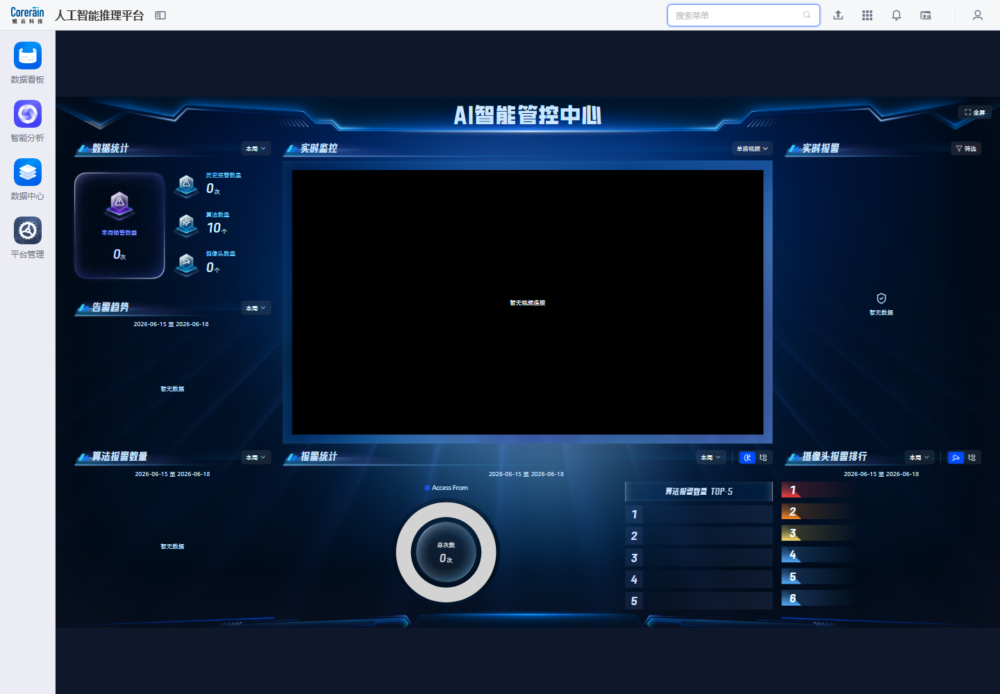 | 顶部栏与全局导航 | 01_搜索菜单_点击状态 global-nav | 全局入口 搜索菜单 的点击/展开/跳转状态。 | 全局入口 搜索菜单 的点击/展开/跳转状态。 |
| 顶部栏与全局导航 | 02_数据看板_点击状态 global-nav | 全局入口 数据看板 的点击/展开/跳转状态。 | 全局入口 数据看板 的点击/展开/跳转状态。 | |
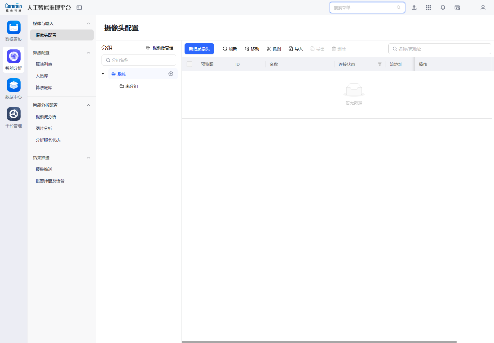 | 顶部栏与全局导航 | 03_智能分析_点击状态 global-nav | 全局入口 智能分析 的点击/展开/跳转状态。 | 全局入口 智能分析 的点击/展开/跳转状态。 |
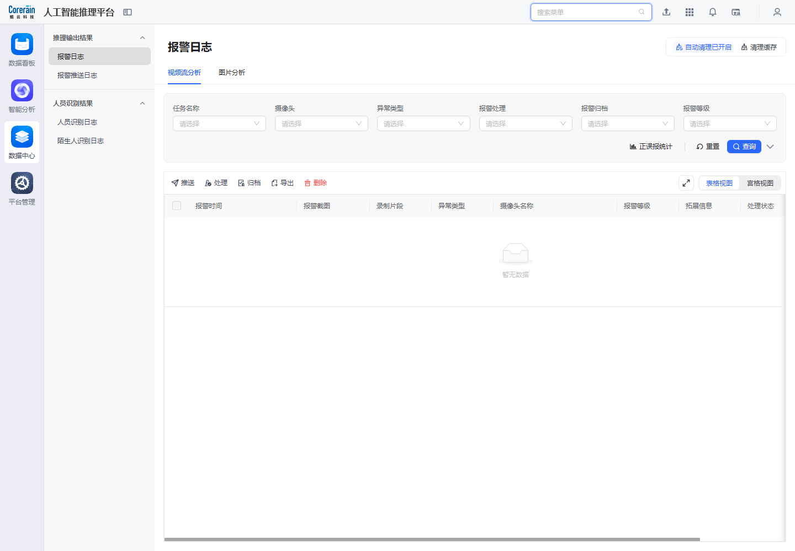 | 顶部栏与全局导航 | 04_数据中心_点击状态 global-nav | 全局入口 数据中心 的点击/展开/跳转状态。 | 全局入口 数据中心 的点击/展开/跳转状态。 |
| 顶部栏与全局导航 | 05_平台管理_点击状态 global-nav | 全局入口 平台管理 的点击/展开/跳转状态。 | 全局入口 平台管理 的点击/展开/跳转状态。 |
业务区聚焦截图索引
本节是对深度截图的二次整理，重点回应“公共顶部工具区不要在各模块重复截图、带 tab 的页面需要逐 tab 记录”的检查意见。
| 统计项 | 数值 |
|---|---|
| 聚焦截图文件总数 | 102 |
| 聚焦交互记录总数 | 102 |
| 聚焦截图目录 | competitive_research/screenshots_focused/ |
| 聚焦原始 JSON | competitive_research/raw/focused_interactions/ |
| 目录 | 截图数 |
|---|---|
| 01_dashboard | 6 |
| 02_smart_analysis | 55 |
| 03_data_center | 13 |
| 04_platform_management | 28 |
数据看板
| 子模块/场景 | 聚焦截图数 |
|---|---|
| 数据看板首页 | 6 |
| 截图 | 子模块 | 交互点 | 说明 |
|---|---|---|---|
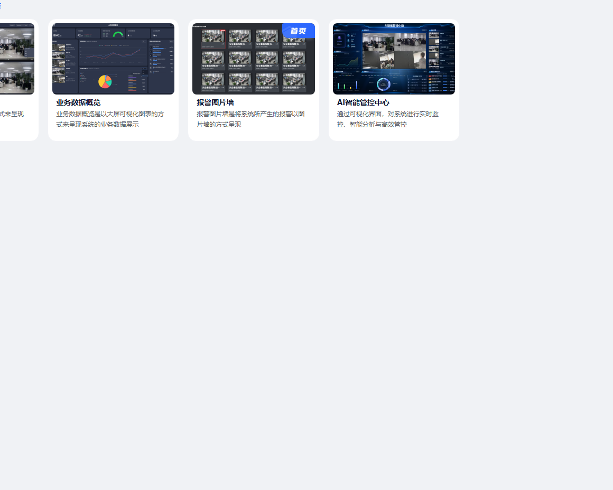 | 数据看板首页 | 业务区域默认态 业务区默认态 | 默认态用于观察页面主对象、筛选区、表格/卡片区和主操作分布；本图已避开顶部公共工具区，适合分析模块自身差异。 |
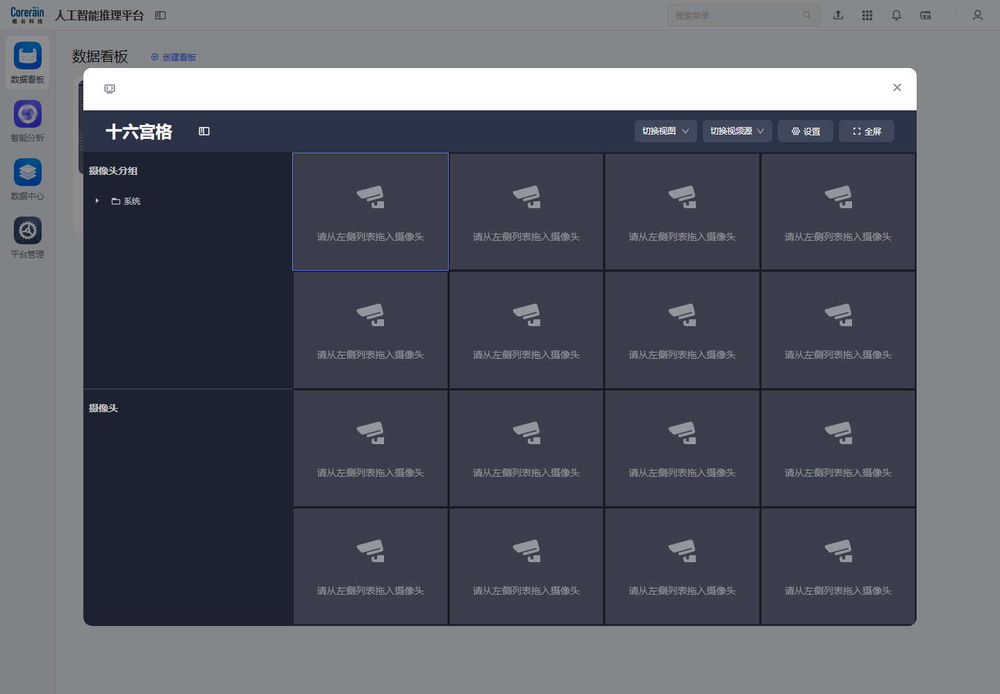 | 数据看板首页 | Tab_实时视频监控 弹窗内切换 | 切换 实时视频监控 后观察内容是否随 tab 独立变化。产品上 tab 应表达清晰的信息分组，并保留当前上下文，避免用户在配置任务时迷失。 |
 | 数据看板首页 | Tab_业务数据概览 弹窗内切换 | 切换 业务数据概览 后观察内容是否随 tab 独立变化。产品上 tab 应表达清晰的信息分组，并保留当前上下文，避免用户在配置任务时迷失。 |
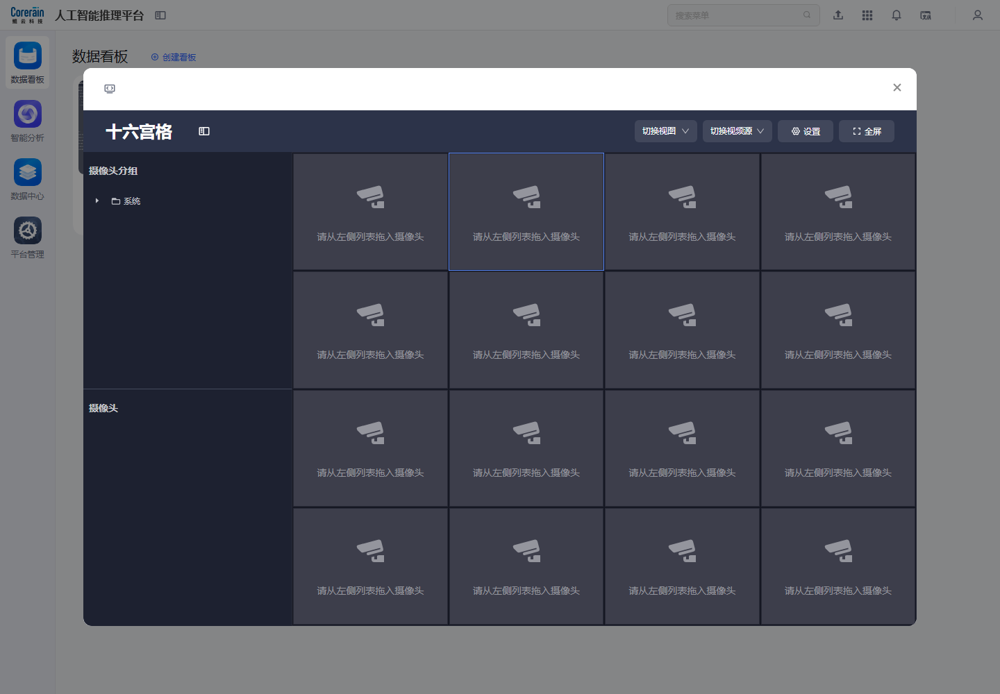 | 数据看板首页 | Tab_报警图片墙 弹窗内切换 | 切换 报警图片墙 后观察内容是否随 tab 独立变化。产品上 tab 应表达清晰的信息分组，并保留当前上下文，避免用户在配置任务时迷失。 |
 | 数据看板首页 | Tab_AI智能管控中心 弹窗内切换 | 切换 AI智能管控中心 后观察内容是否随 tab 独立变化。产品上 tab 应表达清晰的信息分组，并保留当前上下文，避免用户在配置任务时迷失。 |
| 数据看板首页 | 操作_创建看板 弹窗操作 | 创建看板 是该页面的业务动作入口。若打开弹窗/抽屉，应让用户在不离开当前列表的情况下完成配置；若只是状态按钮，应有明确反馈。 |
智能分析
| 子模块/场景 | 聚焦截图数 |
|---|---|
| 报警弹窗及语音 | 8 |
| 报警推送创建 | 12 |
| 创建视频分析任务 | 6 |
| 视频流分析详情 | 6 |
| 算法详情-人员入侵识别 | 18 |
| 图片分析详情 | 5 |
| 截图 | 子模块 | 交互点 | 说明 |
|---|---|---|---|
 | 报警弹窗及语音 | 业务区域默认态 业务区默认态 | 默认态用于观察页面主对象、筛选区、表格/卡片区和主操作分布；本图已避开顶部公共工具区，适合分析模块自身差异。 |
| 报警弹窗及语音 | Tab_一级 Tab/分段切换 | 切换 一级 后观察内容是否随 tab 独立变化。产品上 tab 应表达清晰的信息分组，并保留当前上下文，避免用户在配置任务时迷失。 | |
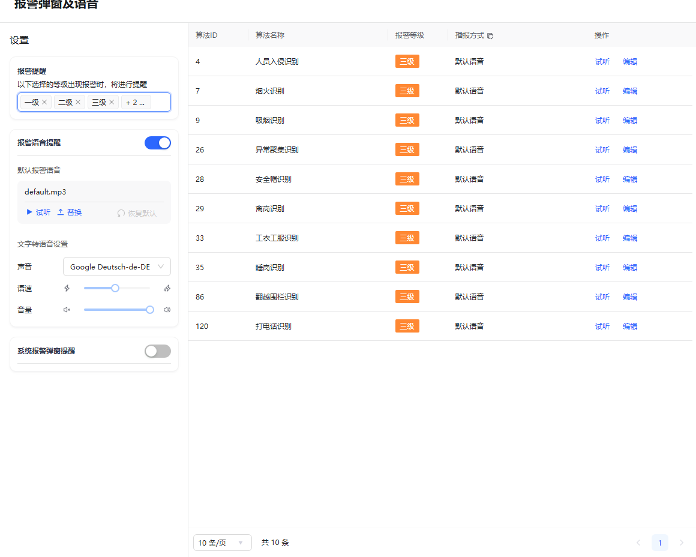 | 报警弹窗及语音 | Tab_二级 Tab/分段切换 | 切换 二级 后观察内容是否随 tab 独立变化。产品上 tab 应表达清晰的信息分组，并保留当前上下文，避免用户在配置任务时迷失。 |
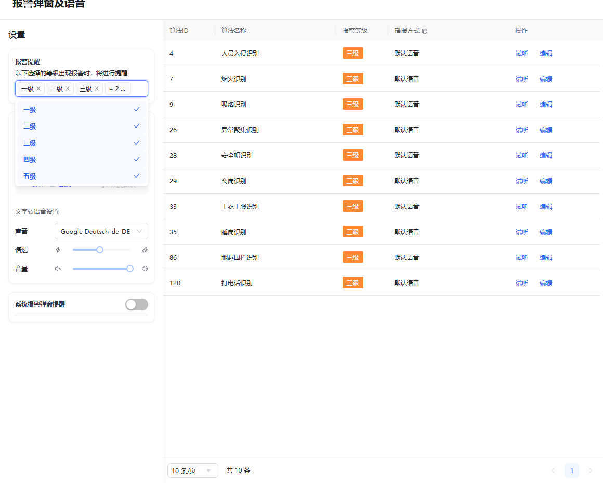 | 报警弹窗及语音 | Tab_三级 Tab/分段切换 | 切换 三级 后观察内容是否随 tab 独立变化。产品上 tab 应表达清晰的信息分组，并保留当前上下文，避免用户在配置任务时迷失。 |
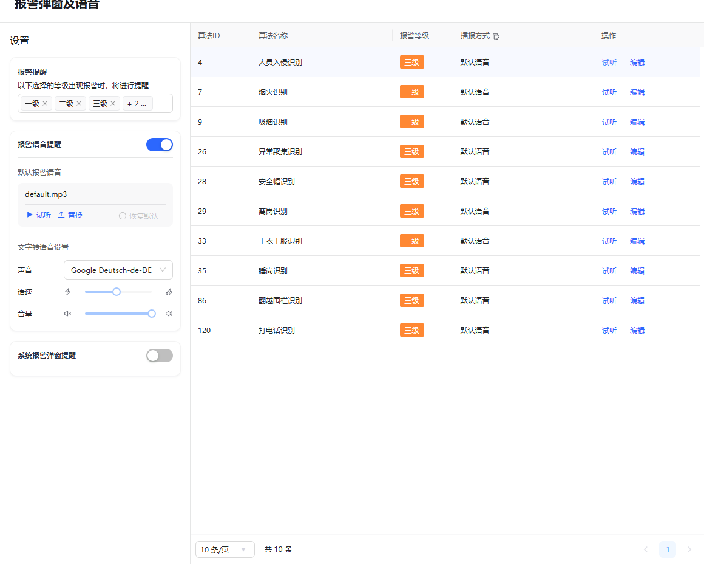 | 报警弹窗及语音 | Tab_试听 Tab/分段切换 | 切换 试听 后观察内容是否随 tab 独立变化。产品上 tab 应表达清晰的信息分组，并保留当前上下文，避免用户在配置任务时迷失。 |
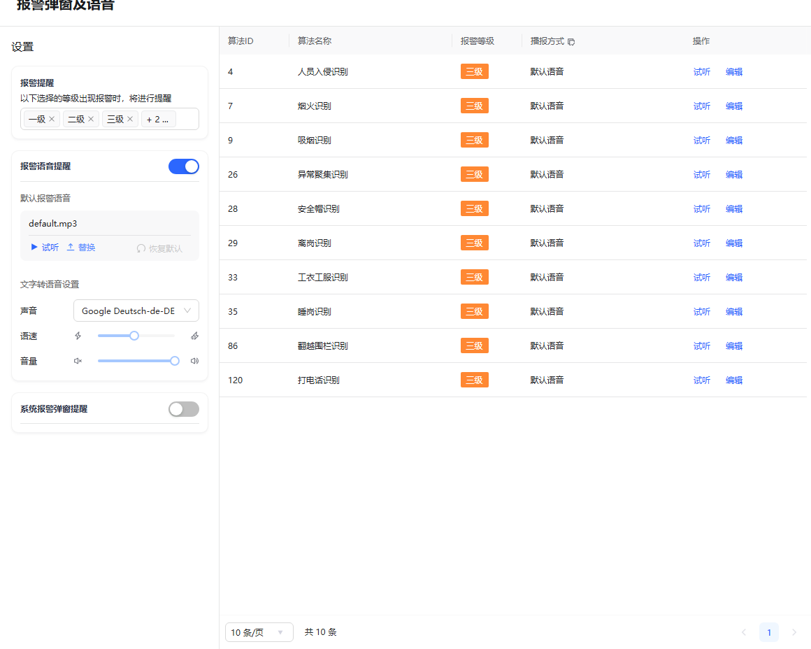 | 报警弹窗及语音 | Tab_替换 Tab/分段切换 | 切换 替换 后观察内容是否随 tab 独立变化。产品上 tab 应表达清晰的信息分组，并保留当前上下文，避免用户在配置任务时迷失。 |
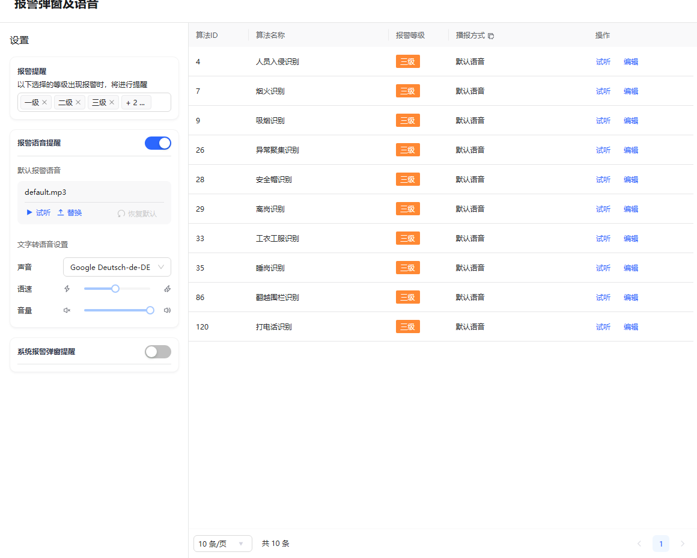 | 报警弹窗及语音 | Tab_恢复默认 Tab/分段切换 | 切换 恢复默认 后观察内容是否随 tab 独立变化。产品上 tab 应表达清晰的信息分组，并保留当前上下文，避免用户在配置任务时迷失。 |
| 报警弹窗及语音 | Tab_编辑 弹窗内切换 | 切换 编辑 后观察内容是否随 tab 独立变化。产品上 tab 应表达清晰的信息分组，并保留当前上下文，避免用户在配置任务时迷失。 | |
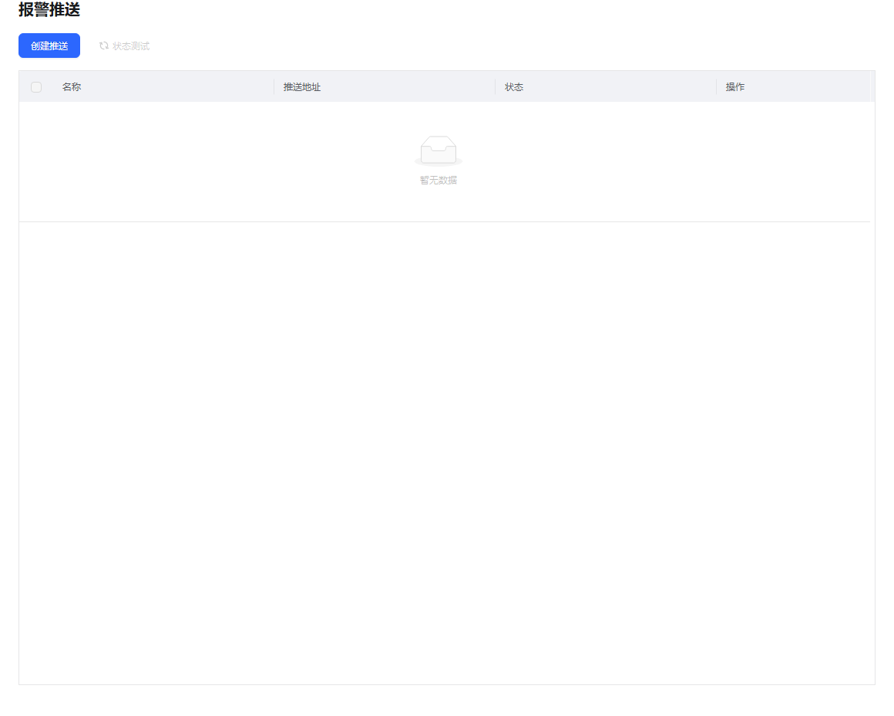 | 报警推送创建 | 打开前_创建推送 进入前状态 | 进入前截图用于保留列表上下文，说明用户从哪个对象或主操作进入详情/弹窗。 |
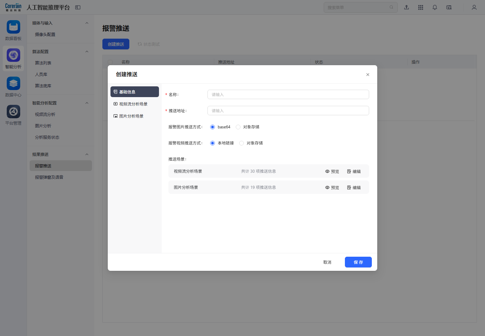 | 报警推送创建 | 业务区域默认态 弹窗默认态 | 默认态用于观察页面主对象、筛选区、表格/卡片区和主操作分布；本图已避开顶部公共工具区，适合分析模块自身差异。 |
 | 报警推送创建 | Tab_基础信息 弹窗内切换 | 切换 基础信息 后观察内容是否随 tab 独立变化。产品上 tab 应表达清晰的信息分组，并保留当前上下文，避免用户在配置任务时迷失。 |
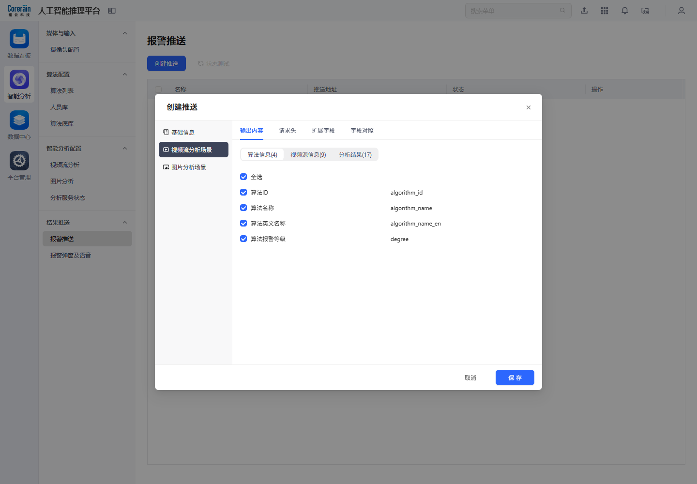 | 报警推送创建 | Tab_视频流分析场景 弹窗内切换 | 切换 视频流分析场景 后观察内容是否随 tab 独立变化。产品上 tab 应表达清晰的信息分组，并保留当前上下文，避免用户在配置任务时迷失。 |
 | 报警推送创建 | Tab_图片分析场景 弹窗内切换 | 切换 图片分析场景 后观察内容是否随 tab 独立变化。产品上 tab 应表达清晰的信息分组，并保留当前上下文，避免用户在配置任务时迷失。 |
 | 报警推送创建 | Tab_base64 弹窗内切换 | 切换 base64 后观察内容是否随 tab 独立变化。产品上 tab 应表达清晰的信息分组，并保留当前上下文，避免用户在配置任务时迷失。 |
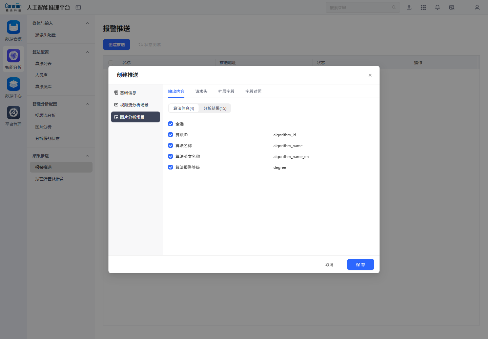 | 报警推送创建 | Tab_对象存储 弹窗内切换 | 切换 对象存储 后观察内容是否随 tab 独立变化。产品上 tab 应表达清晰的信息分组，并保留当前上下文，避免用户在配置任务时迷失。 |
 | 报警推送创建 | Tab_本地链接 弹窗内切换 | 切换 本地链接 后观察内容是否随 tab 独立变化。产品上 tab 应表达清晰的信息分组，并保留当前上下文，避免用户在配置任务时迷失。 |
 | 报警推送创建 | Tab_预览 弹窗内切换 | 切换 预览 后观察内容是否随 tab 独立变化。产品上 tab 应表达清晰的信息分组，并保留当前上下文，避免用户在配置任务时迷失。 |
 | 报警推送创建 | Tab_编辑 弹窗内切换 | 切换 编辑 后观察内容是否随 tab 独立变化。产品上 tab 应表达清晰的信息分组，并保留当前上下文，避免用户在配置任务时迷失。 |
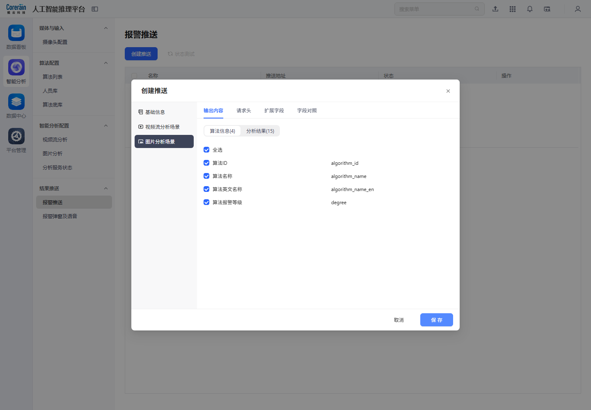 | 报警推送创建 | 操作_保存 安全定位 | 保存 可能产生保存、删除、安装、归档、主题切换或配置变更，本次只定位/悬停截图。产品设计上应提供权限控制、二次确认、影响范围说明和操作审计。 |
| 报警推送创建 | 操作_取消 业务操作 | 取消 是该页面的业务动作入口。若打开弹窗/抽屉，应让用户在不离开当前列表的情况下完成配置；若只是状态按钮，应有明确反馈。 | |
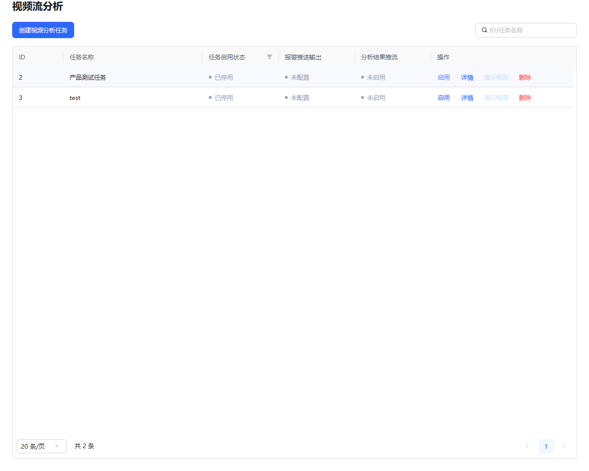 | 创建视频分析任务 | 打开前_创建视频分析任务 进入前状态 | 进入前截图用于保留列表上下文，说明用户从哪个对象或主操作进入详情/弹窗。 |
| 创建视频分析任务 | 业务区域默认态 弹窗默认态 | 默认态用于观察页面主对象、筛选区、表格/卡片区和主操作分布；本图已避开顶部公共工具区，适合分析模块自身差异。 | |
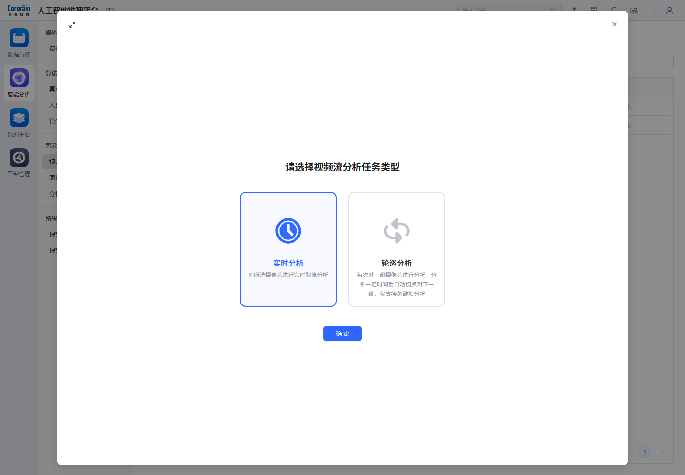 | 创建视频分析任务 | Tab_实时分析 弹窗内切换 | 切换 实时分析 后观察内容是否随 tab 独立变化。产品上 tab 应表达清晰的信息分组，并保留当前上下文，避免用户在配置任务时迷失。 |
 | 创建视频分析任务 | Tab_轮巡分析 弹窗内切换 | 切换 轮巡分析 后观察内容是否随 tab 独立变化。产品上 tab 应表达清晰的信息分组，并保留当前上下文，避免用户在配置任务时迷失。 |
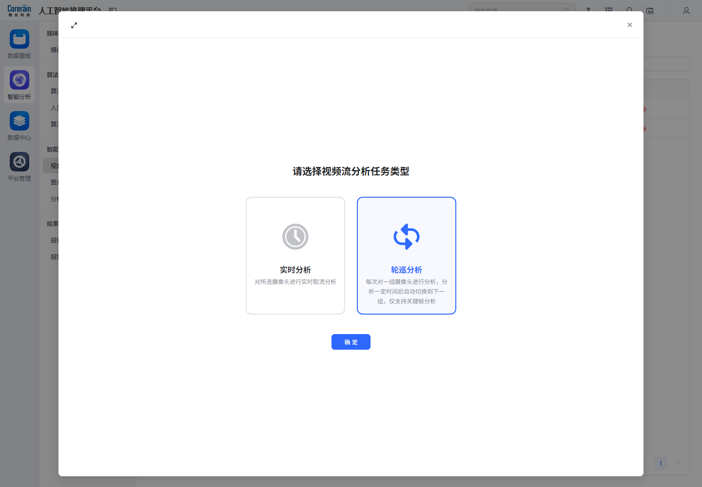 | 创建视频分析任务 | 操作_保存 安全定位 | 保存 可能产生保存、删除、安装、归档、主题切换或配置变更，本次只定位/悬停截图。产品设计上应提供权限控制、二次确认、影响范围说明和操作审计。 |
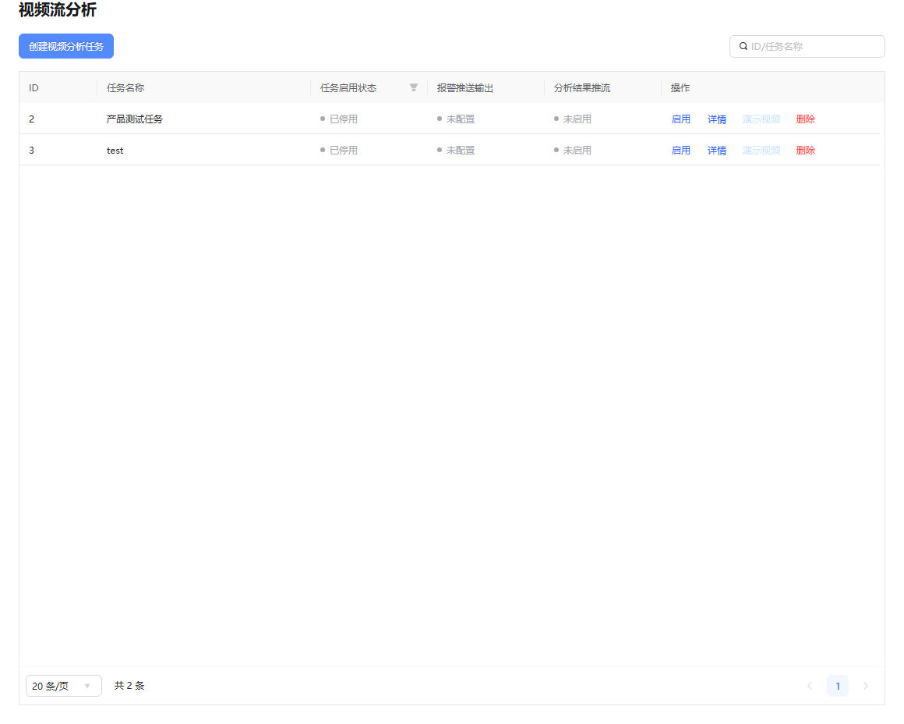 | 创建视频分析任务 | 操作_取消 业务操作 | 取消 是该页面的业务动作入口。若打开弹窗/抽屉，应让用户在不离开当前列表的情况下完成配置；若只是状态按钮，应有明确反馈。 |
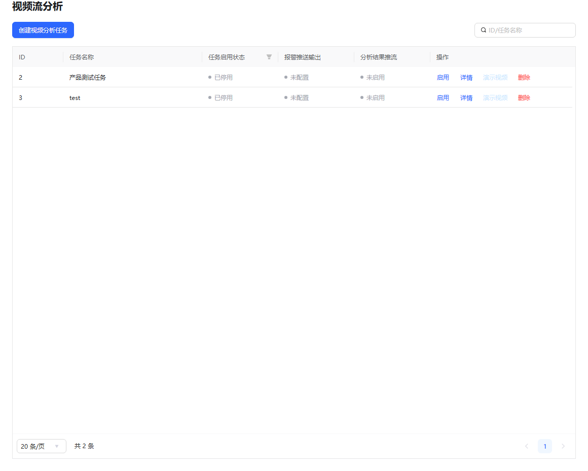 | 视频流分析详情 | 进入前_详情 进入前状态 | 进入前截图用于保留列表上下文，说明用户从哪个对象或主操作进入详情/弹窗。 |
| 视频流分析详情 | 业务区域默认态 弹窗默认态 | 默认态用于观察页面主对象、筛选区、表格/卡片区和主操作分布；本图已避开顶部公共工具区，适合分析模块自身差异。 | |
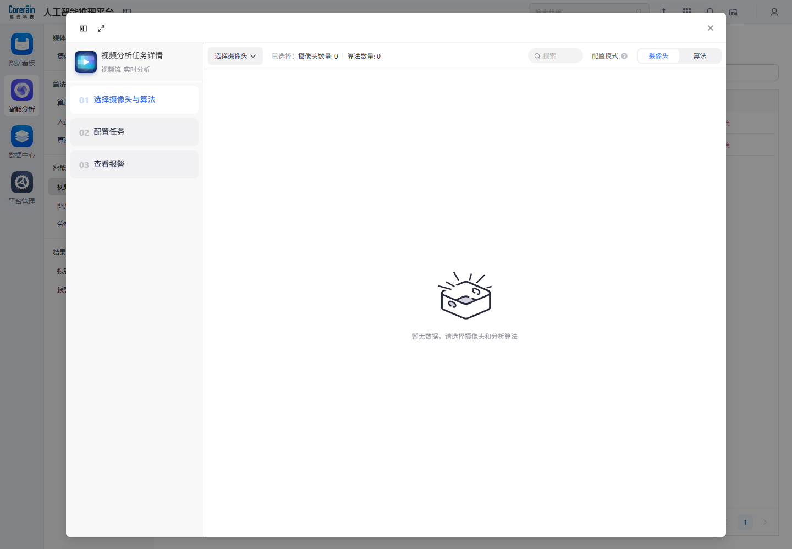 | 视频流分析详情 | Tab_选择摄像头与算法 弹窗内切换 | 切换 选择摄像头与算法 后观察内容是否随 tab 独立变化。产品上 tab 应表达清晰的信息分组，并保留当前上下文，避免用户在配置任务时迷失。 |
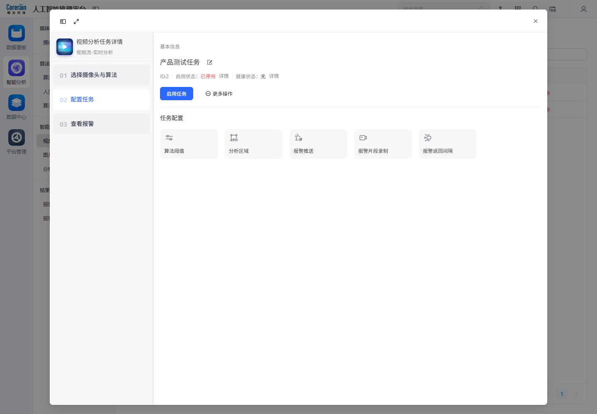 | 视频流分析详情 | Tab_配置任务 弹窗内切换 | 切换 配置任务 后观察内容是否随 tab 独立变化。产品上 tab 应表达清晰的信息分组，并保留当前上下文，避免用户在配置任务时迷失。 |
 | 视频流分析详情 | Tab_查看报警 弹窗内切换 | 切换 查看报警 后观察内容是否随 tab 独立变化。产品上 tab 应表达清晰的信息分组，并保留当前上下文，避免用户在配置任务时迷失。 |
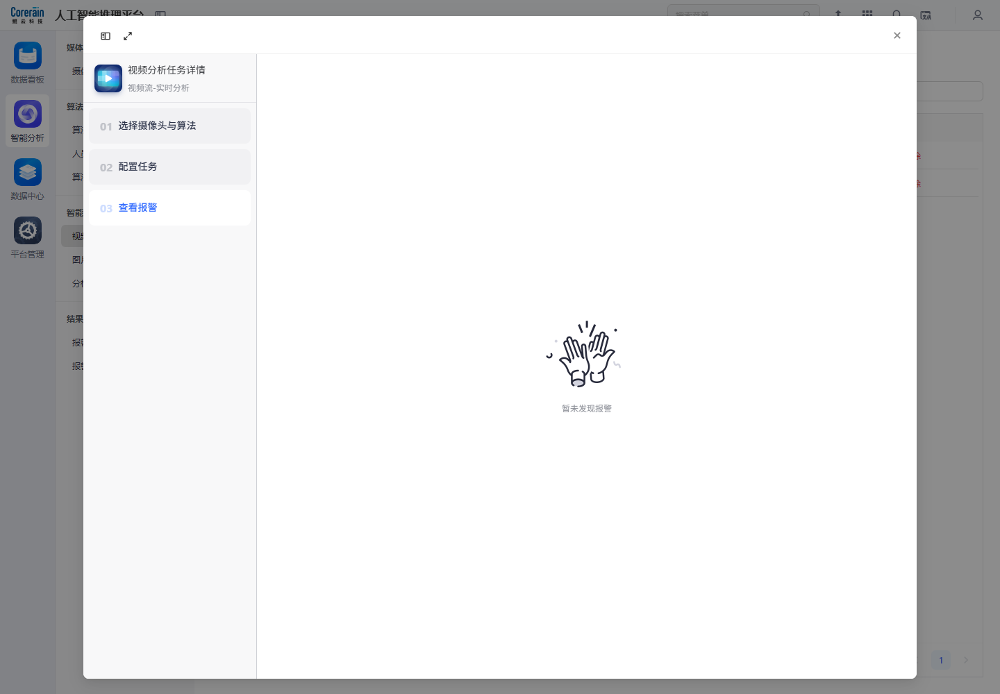 | 视频流分析详情 | 操作_启用 弹窗操作 | 启用 是该页面的业务动作入口。若打开弹窗/抽屉，应让用户在不离开当前列表的情况下完成配置；若只是状态按钮，应有明确反馈。 |
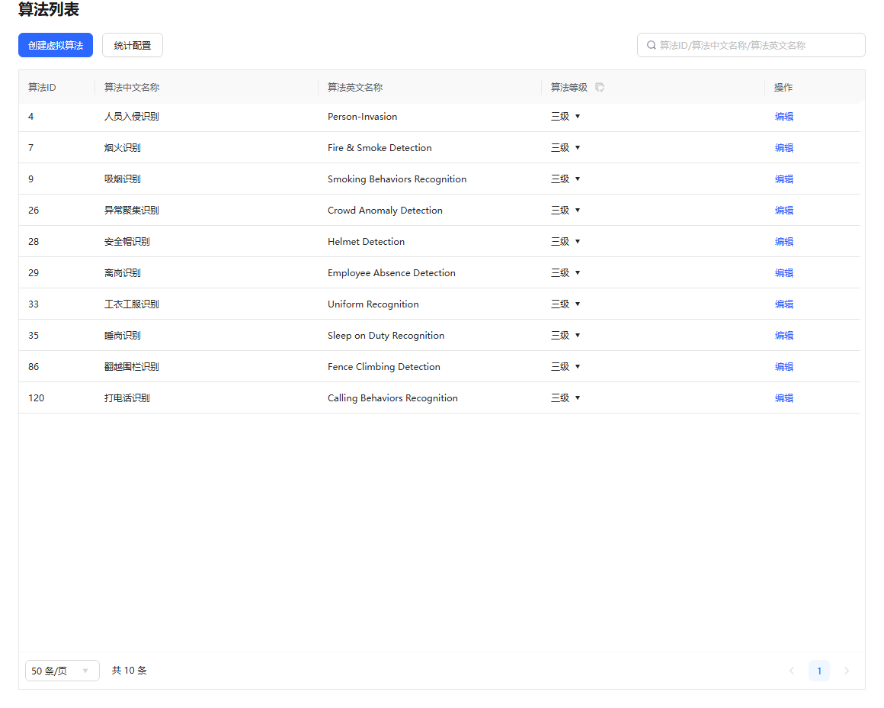 | 算法详情-人员入侵识别 | 进入前_编辑 进入前状态 | 进入前截图用于保留列表上下文，说明用户从哪个对象或主操作进入详情/弹窗。 |
 | 算法详情-人员入侵识别 | 业务区域默认态 业务区默认态 | 默认态用于观察页面主对象、筛选区、表格/卡片区和主操作分布；本图已避开顶部公共工具区，适合分析模块自身差异。 |
| 算法详情-人员入侵识别 | Tab_算法信息 Tab/分段切换 | 切换 算法信息 后观察内容是否随 tab 独立变化。产品上 tab 应表达清晰的信息分组，并保留当前上下文，避免用户在配置任务时迷失。 | |
| 算法详情-人员入侵识别 | Tab_算法信息_操作_高精度 Tab/分段切换 | 切换 算法信息_操作_高精度 后观察内容是否随 tab 独立变化。产品上 tab 应表达清晰的信息分组，并保留当前上下文，避免用户在配置任务时迷失。 | |
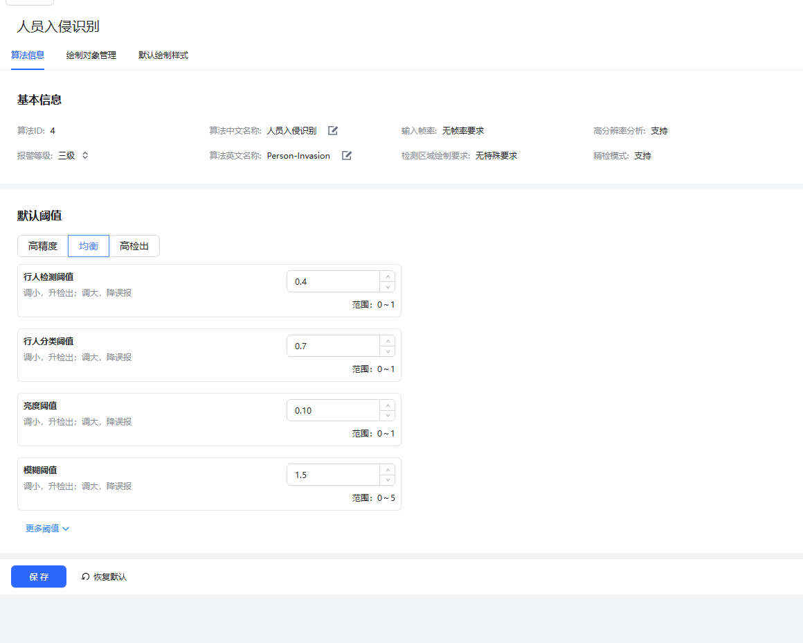 | 算法详情-人员入侵识别 | Tab_算法信息_操作_均衡 Tab/分段切换 | 切换 算法信息_操作_均衡 后观察内容是否随 tab 独立变化。产品上 tab 应表达清晰的信息分组，并保留当前上下文，避免用户在配置任务时迷失。 |
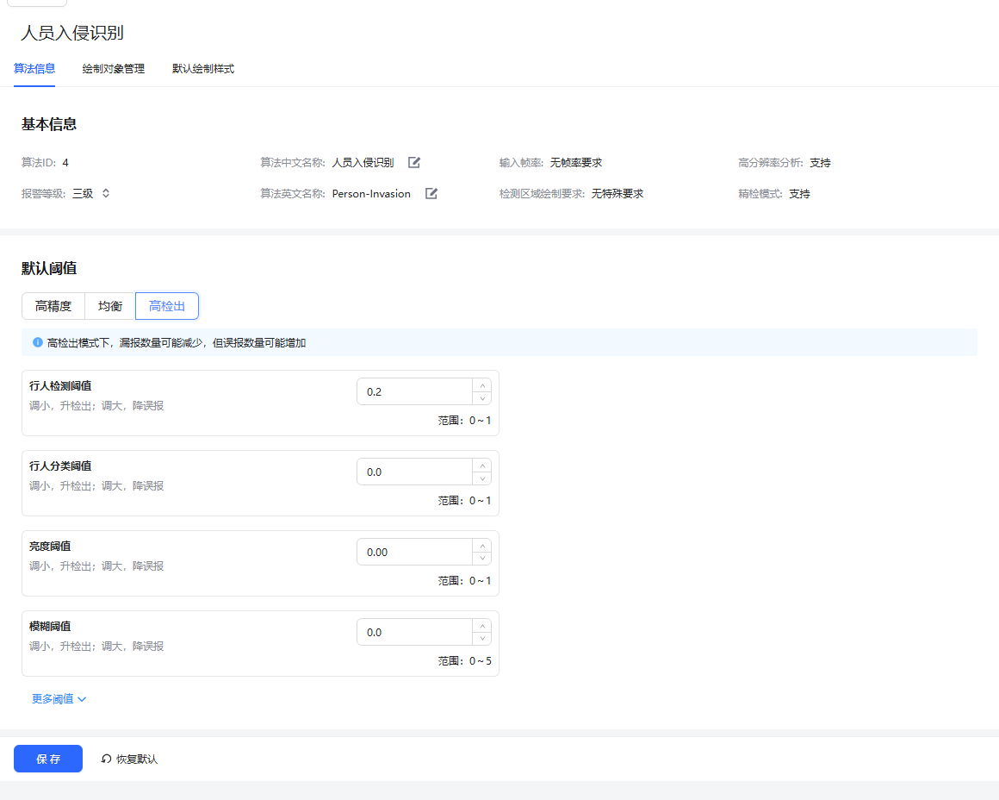 | 算法详情-人员入侵识别 | Tab_算法信息_操作_高检出 Tab/分段切换 | 切换 算法信息_操作_高检出 后观察内容是否随 tab 独立变化。产品上 tab 应表达清晰的信息分组，并保留当前上下文，避免用户在配置任务时迷失。 |
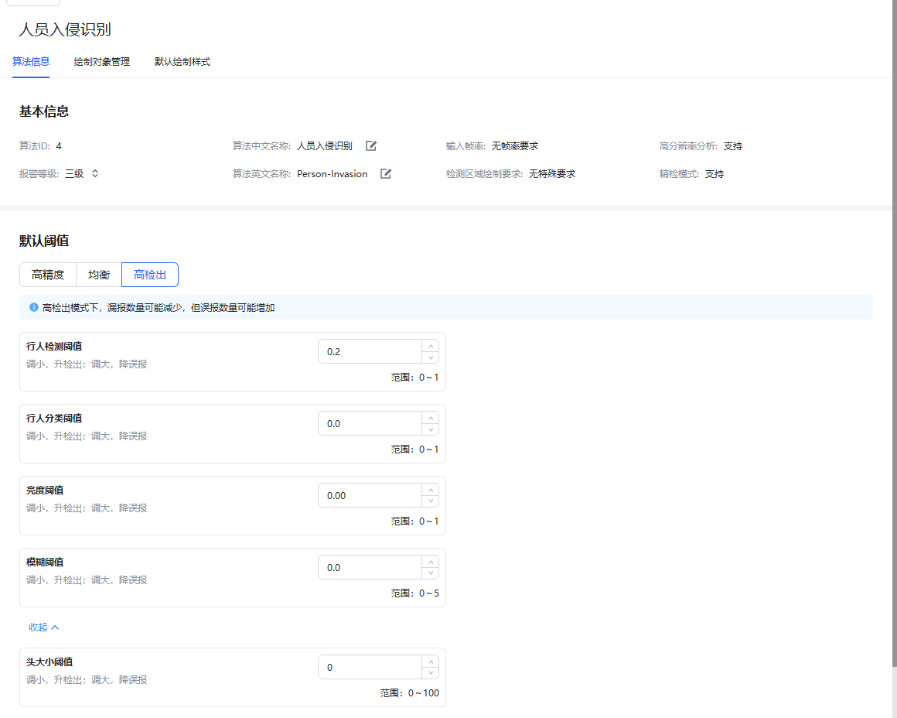 | 算法详情-人员入侵识别 | Tab_算法信息_操作_更多阈值 Tab/分段切换 | 切换 算法信息_操作_更多阈值 后观察内容是否随 tab 独立变化。产品上 tab 应表达清晰的信息分组，并保留当前上下文，避免用户在配置任务时迷失。 |
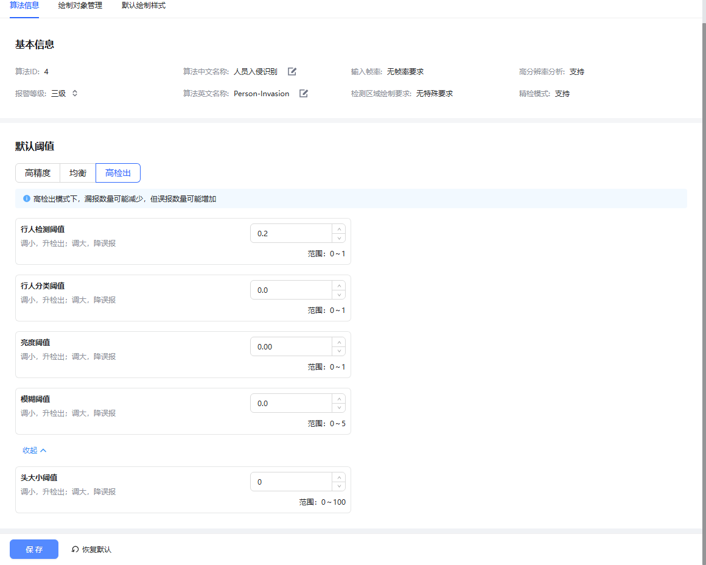 | 算法详情-人员入侵识别 | Tab_算法信息_操作_保存 安全定位 | 算法信息_操作_保存 可能产生保存、删除、安装、归档、主题切换或配置变更，本次只定位/悬停截图。产品设计上应提供权限控制、二次确认、影响范围说明和操作审计。 |
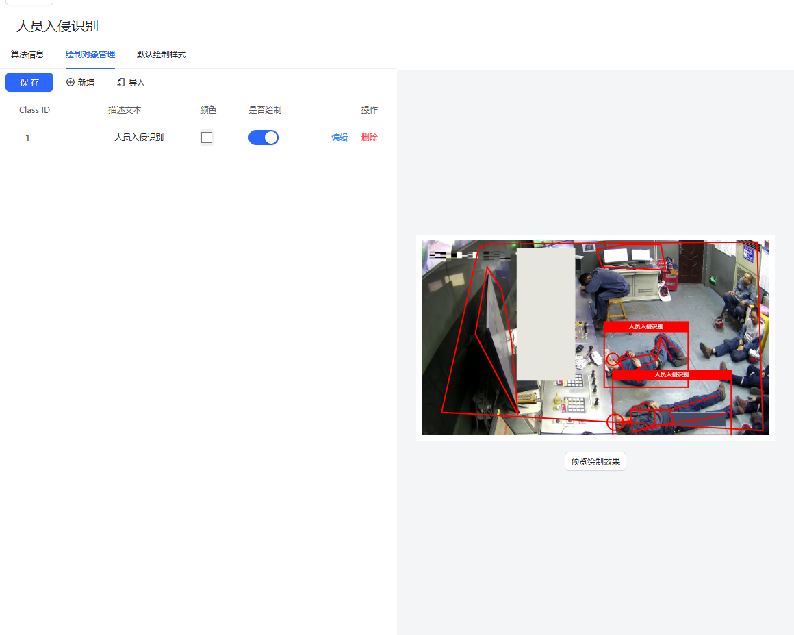 | 算法详情-人员入侵识别 | Tab_绘制对象管理 Tab/分段切换 | 切换 绘制对象管理 后观察内容是否随 tab 独立变化。产品上 tab 应表达清晰的信息分组，并保留当前上下文，避免用户在配置任务时迷失。 |
| 算法详情-人员入侵识别 | Tab_绘制对象管理_操作_新增 Tab/分段切换 | 切换 绘制对象管理_操作_新增 后观察内容是否随 tab 独立变化。产品上 tab 应表达清晰的信息分组，并保留当前上下文，避免用户在配置任务时迷失。 | |
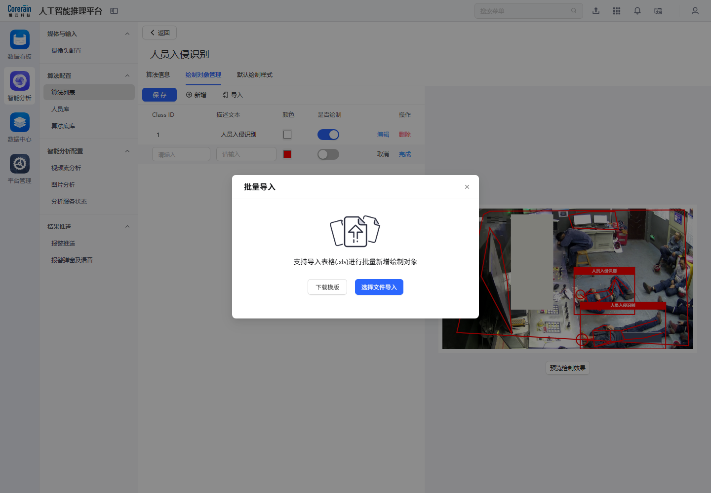 | 算法详情-人员入侵识别 | Tab_绘制对象管理_操作_导入 弹窗内切换 | 切换 绘制对象管理_操作_导入 后观察内容是否随 tab 独立变化。产品上 tab 应表达清晰的信息分组，并保留当前上下文，避免用户在配置任务时迷失。 |
 | 算法详情-人员入侵识别 | Tab_绘制对象管理_操作_编辑 Tab/分段切换 | 切换 绘制对象管理_操作_编辑 后观察内容是否随 tab 独立变化。产品上 tab 应表达清晰的信息分组，并保留当前上下文，避免用户在配置任务时迷失。 |
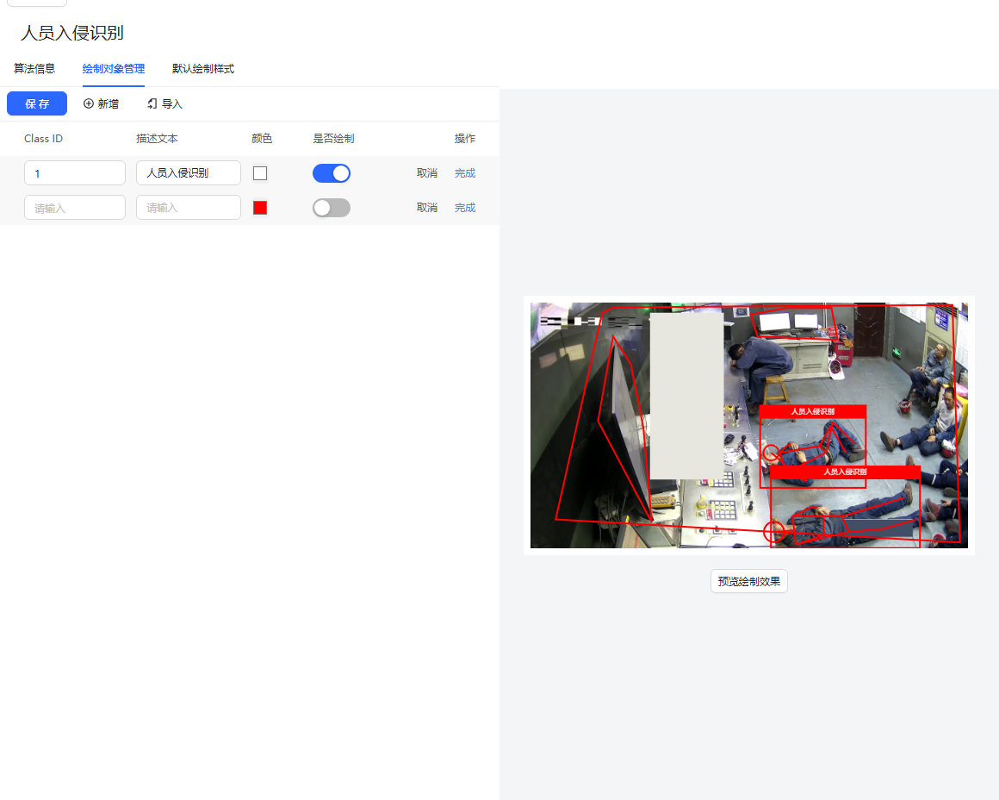 | 算法详情-人员入侵识别 | Tab_绘制对象管理_操作_删除 安全定位 | 绘制对象管理_操作_删除 可能产生保存、删除、安装、归档、主题切换或配置变更，本次只定位/悬停截图。产品设计上应提供权限控制、二次确认、影响范围说明和操作审计。 |
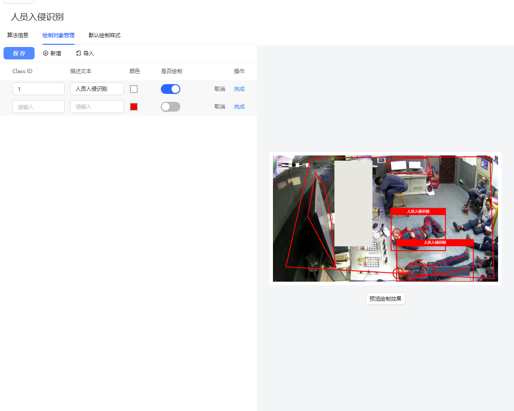 | 算法详情-人员入侵识别 | Tab_绘制对象管理_操作_保存 安全定位 | 绘制对象管理_操作_保存 可能产生保存、删除、安装、归档、主题切换或配置变更，本次只定位/悬停截图。产品设计上应提供权限控制、二次确认、影响范围说明和操作审计。 |
| 算法详情-人员入侵识别 | Tab_默认绘制样式 Tab/分段切换 | 切换 默认绘制样式 后观察内容是否随 tab 独立变化。产品上 tab 应表达清晰的信息分组，并保留当前上下文，避免用户在配置任务时迷失。 | |
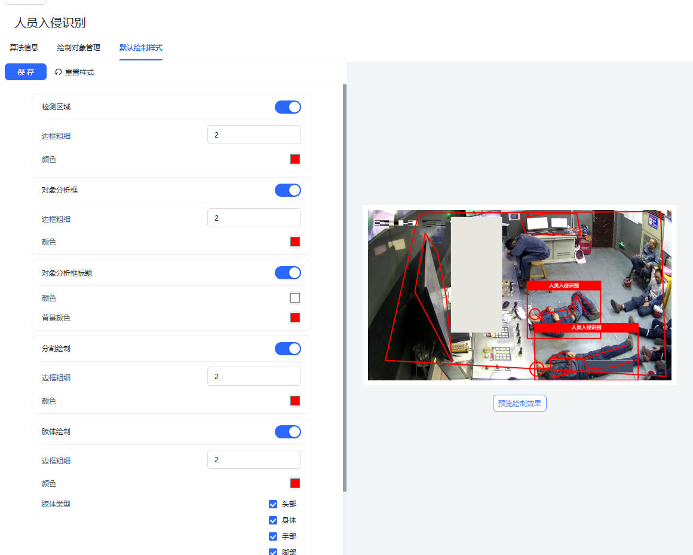 | 算法详情-人员入侵识别 | Tab_默认绘制样式_操作_预览绘制效果 Tab/分段切换 | 切换 默认绘制样式_操作_预览绘制效果 后观察内容是否随 tab 独立变化。产品上 tab 应表达清晰的信息分组，并保留当前上下文，避免用户在配置任务时迷失。 |
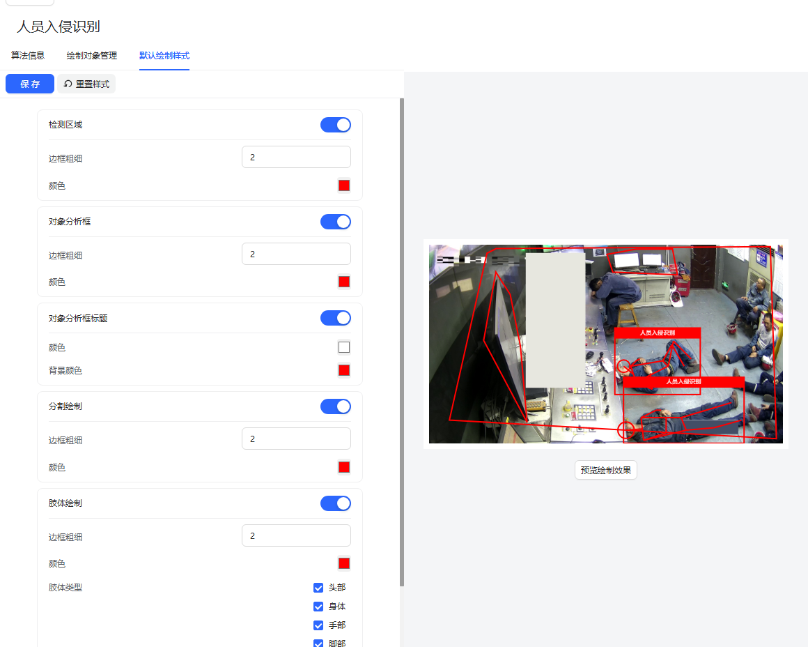 | 算法详情-人员入侵识别 | Tab_默认绘制样式_操作_重置样式 Tab/分段切换 | 切换 默认绘制样式_操作_重置样式 后观察内容是否随 tab 独立变化。产品上 tab 应表达清晰的信息分组，并保留当前上下文，避免用户在配置任务时迷失。 |
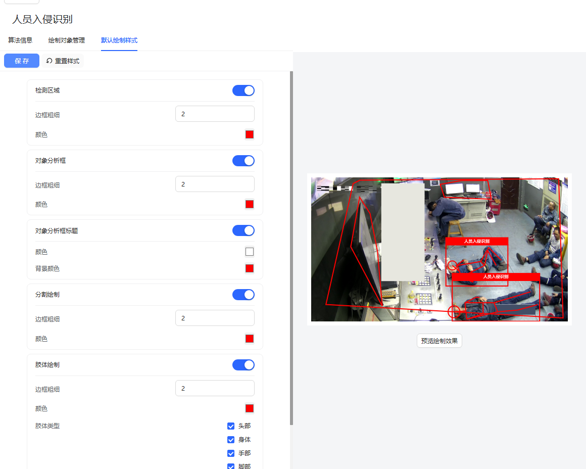 | 算法详情-人员入侵识别 | Tab_默认绘制样式_操作_保存 安全定位 | 默认绘制样式_操作_保存 可能产生保存、删除、安装、归档、主题切换或配置变更，本次只定位/悬停截图。产品设计上应提供权限控制、二次确认、影响范围说明和操作审计。 |
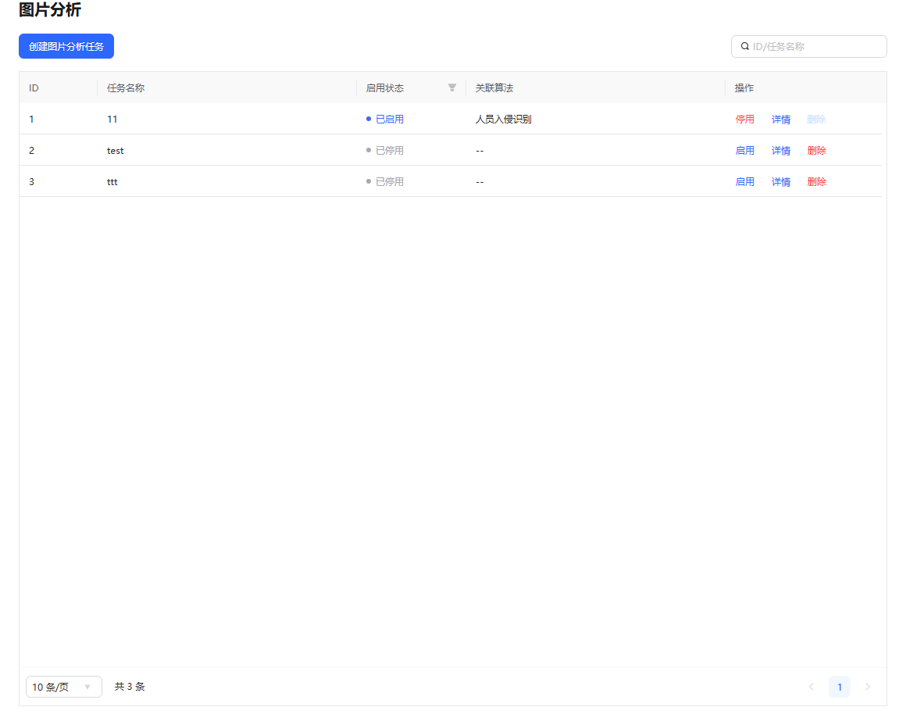 | 图片分析详情 | 进入前_详情 进入前状态 | 进入前截图用于保留列表上下文，说明用户从哪个对象或主操作进入详情/弹窗。 |
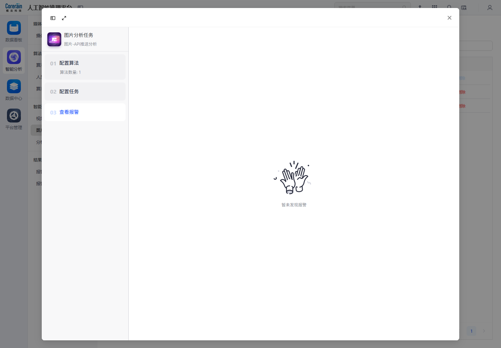 | 图片分析详情 | 业务区域默认态 弹窗默认态 | 默认态用于观察页面主对象、筛选区、表格/卡片区和主操作分布；本图已避开顶部公共工具区，适合分析模块自身差异。 |
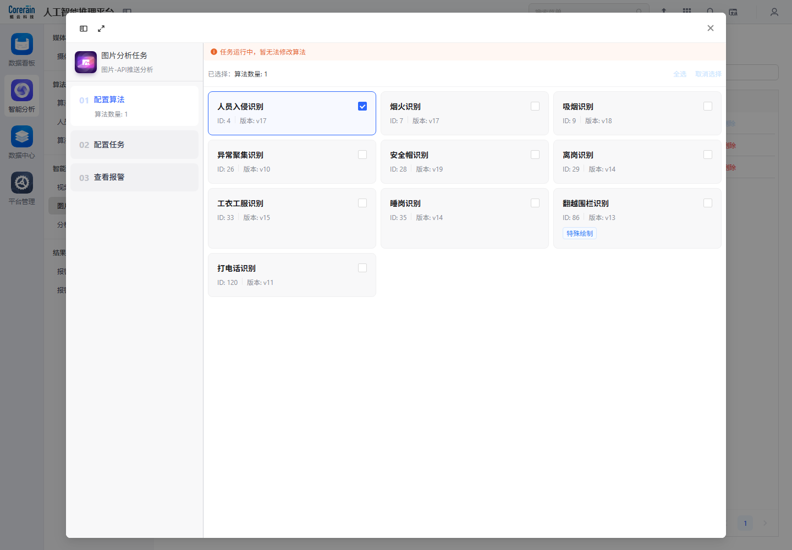 | 图片分析详情 | Tab_配置算法 弹窗内切换 | 切换 配置算法 后观察内容是否随 tab 独立变化。产品上 tab 应表达清晰的信息分组，并保留当前上下文，避免用户在配置任务时迷失。 |
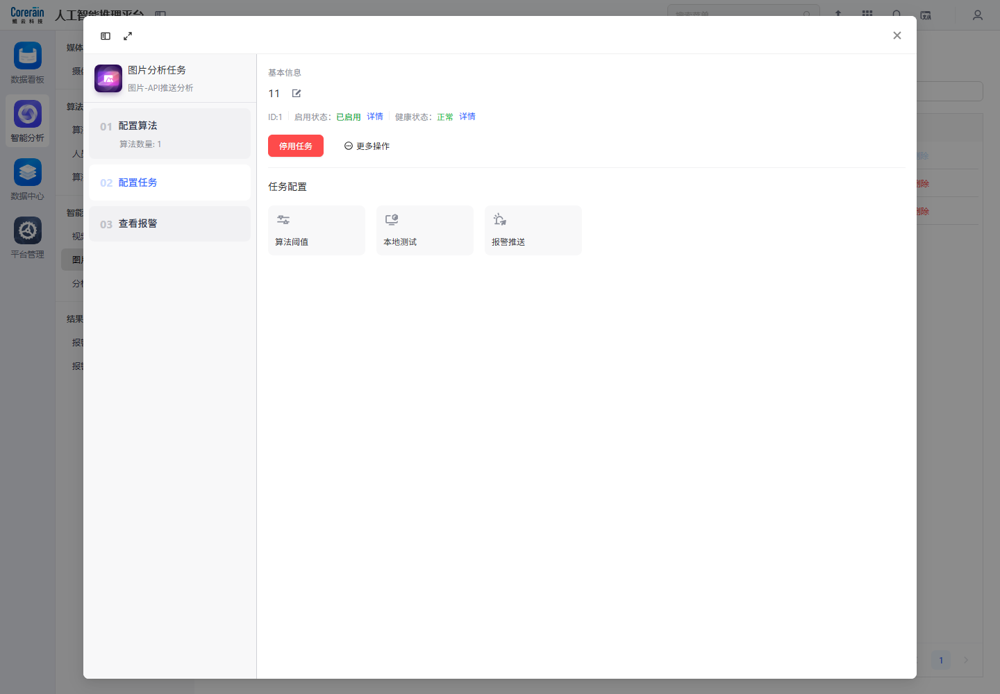 | 图片分析详情 | Tab_配置任务 弹窗内切换 | 切换 配置任务 后观察内容是否随 tab 独立变化。产品上 tab 应表达清晰的信息分组，并保留当前上下文，避免用户在配置任务时迷失。 |
 | 图片分析详情 | Tab_查看报警 弹窗内切换 | 切换 查看报警 后观察内容是否随 tab 独立变化。产品上 tab 应表达清晰的信息分组，并保留当前上下文，避免用户在配置任务时迷失。 |
数据中心
| 子模块/场景 | 聚焦截图数 |
|---|---|
| 报警日志 | 8 |
| 人员识别日志 | 5 |
| 截图 | 子模块 | 交互点 | 说明 |
|---|---|---|---|
 | 报警日志 | 业务区域默认态 业务区默认态 | 默认态用于观察页面主对象、筛选区、表格/卡片区和主操作分布；本图已避开顶部公共工具区，适合分析模块自身差异。 |
 | 报警日志 | Tab_视频流分析 Tab/分段切换 | 切换 视频流分析 后观察内容是否随 tab 独立变化。产品上 tab 应表达清晰的信息分组，并保留当前上下文，避免用户在配置任务时迷失。 |
 | 报警日志 | Tab_图片分析 Tab/分段切换 | 切换 图片分析 后观察内容是否随 tab 独立变化。产品上 tab 应表达清晰的信息分组，并保留当前上下文，避免用户在配置任务时迷失。 |
 | 报警日志 | Tab_表格视图 Tab/分段切换 | 切换 表格视图 后观察内容是否随 tab 独立变化。产品上 tab 应表达清晰的信息分组，并保留当前上下文，避免用户在配置任务时迷失。 |
 | 报警日志 | Tab_宫格视图 Tab/分段切换 | 切换 宫格视图 后观察内容是否随 tab 独立变化。产品上 tab 应表达清晰的信息分组，并保留当前上下文，避免用户在配置任务时迷失。 |
 | 报警日志 | 操作_正误报统计 业务操作 | 正误报统计 是该页面的业务动作入口。若打开弹窗/抽屉，应让用户在不离开当前列表的情况下完成配置；若只是状态按钮，应有明确反馈。 |
 | 报警日志 | 操作_处理 业务操作 | 处理 是该页面的业务动作入口。若打开弹窗/抽屉，应让用户在不离开当前列表的情况下完成配置；若只是状态按钮，应有明确反馈。 |
 | 报警日志 | 操作_归档 安全定位 | 归档 可能产生保存、删除、安装、归档、主题切换或配置变更，本次只定位/悬停截图。产品设计上应提供权限控制、二次确认、影响范围说明和操作审计。 |
 | 人员识别日志 | 业务区域默认态 业务区默认态 | 默认态用于观察页面主对象、筛选区、表格/卡片区和主操作分布；本图已避开顶部公共工具区，适合分析模块自身差异。 |
 | 人员识别日志 | Tab_白名单 Tab/分段切换 | 切换 白名单 后观察内容是否随 tab 独立变化。产品上 tab 应表达清晰的信息分组，并保留当前上下文，避免用户在配置任务时迷失。 |
 | 人员识别日志 | Tab_黑名单 Tab/分段切换 | 切换 黑名单 后观察内容是否随 tab 独立变化。产品上 tab 应表达清晰的信息分组，并保留当前上下文，避免用户在配置任务时迷失。 |
 | 人员识别日志 | 字段_请选择 字段/选择器 | 请选择 代表筛选或选择器入口。筛选项应支持默认值、清空、组合查询和空状态解释，帮助用户定位日志或配置对象。 |
 | 人员识别日志 | 字段_请选择日期 字段/选择器 | 请选择日期 代表筛选或选择器入口。筛选项应支持默认值、清空、组合查询和空状态解释，帮助用户定位日志或配置对象。 |
平台管理
| 子模块/场景 | 聚焦截图数 |
|---|---|
| 对象存储 | 6 |
| 基础信息 | 6 |
| 离线仓库 | 5 |
| 系统主题 | 6 |
| 站内信 | 5 |
| 截图 | 子模块 | 交互点 | 说明 |
|---|---|---|---|
| 对象存储 | 打开前_创建对象存储 进入前状态 | 进入前截图用于保留列表上下文，说明用户从哪个对象或主操作进入详情/弹窗。 | |
| 对象存储 | 业务区域默认态 弹窗默认态 | 默认态用于观察页面主对象、筛选区、表格/卡片区和主操作分布；本图已避开顶部公共工具区，适合分析模块自身差异。 | |
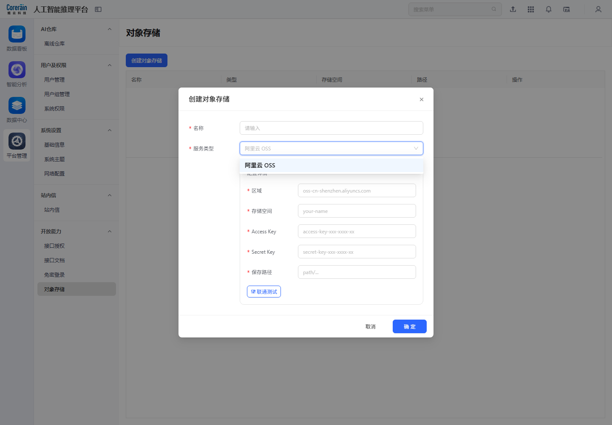 | 对象存储 | Tab_阿里云 OSS 弹窗内切换 | 切换 阿里云 OSS 后观察内容是否随 tab 独立变化。产品上 tab 应表达清晰的信息分组，并保留当前上下文，避免用户在配置任务时迷失。 |
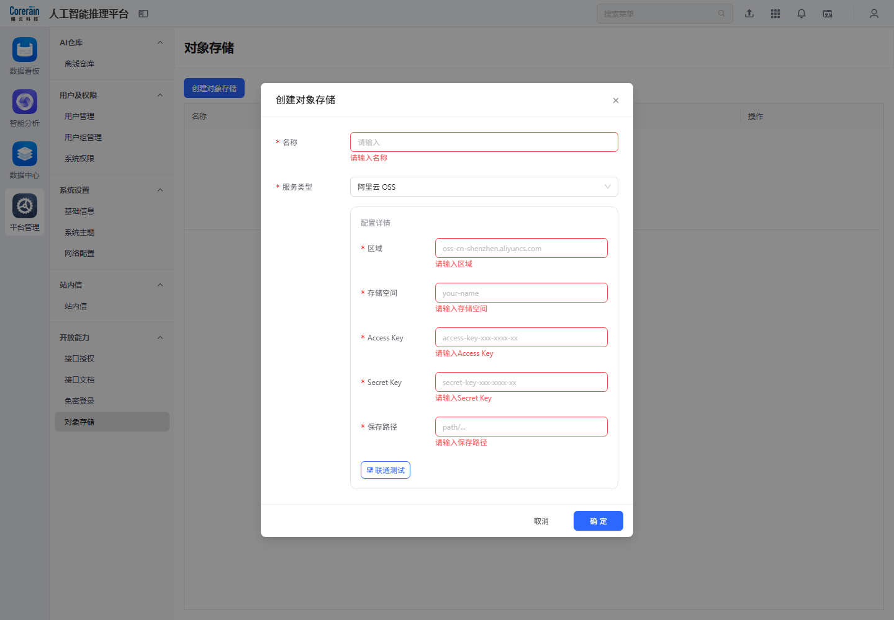 | 对象存储 | Tab_联通测试 弹窗内切换 | 切换 联通测试 后观察内容是否随 tab 独立变化。产品上 tab 应表达清晰的信息分组，并保留当前上下文，避免用户在配置任务时迷失。 |
 | 对象存储 | 操作_保存 安全定位 | 保存 可能产生保存、删除、安装、归档、主题切换或配置变更，本次只定位/悬停截图。产品设计上应提供权限控制、二次确认、影响范围说明和操作审计。 |
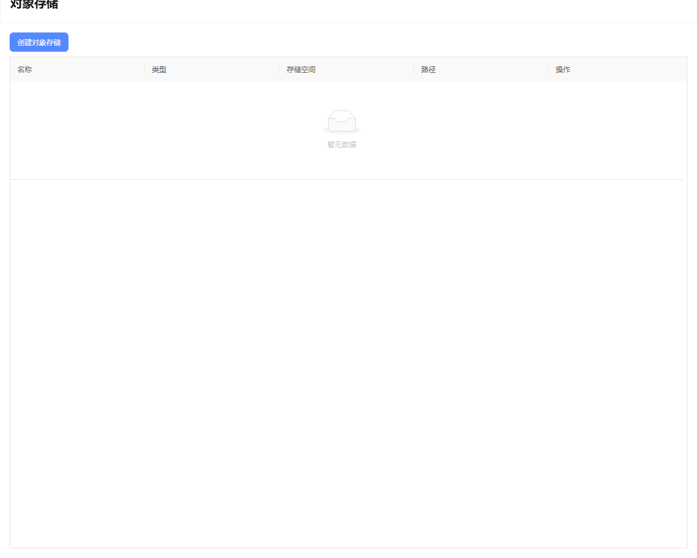 | 对象存储 | 操作_取消 业务操作 | 取消 是该页面的业务动作入口。若打开弹窗/抽屉，应让用户在不离开当前列表的情况下完成配置；若只是状态按钮，应有明确反馈。 |
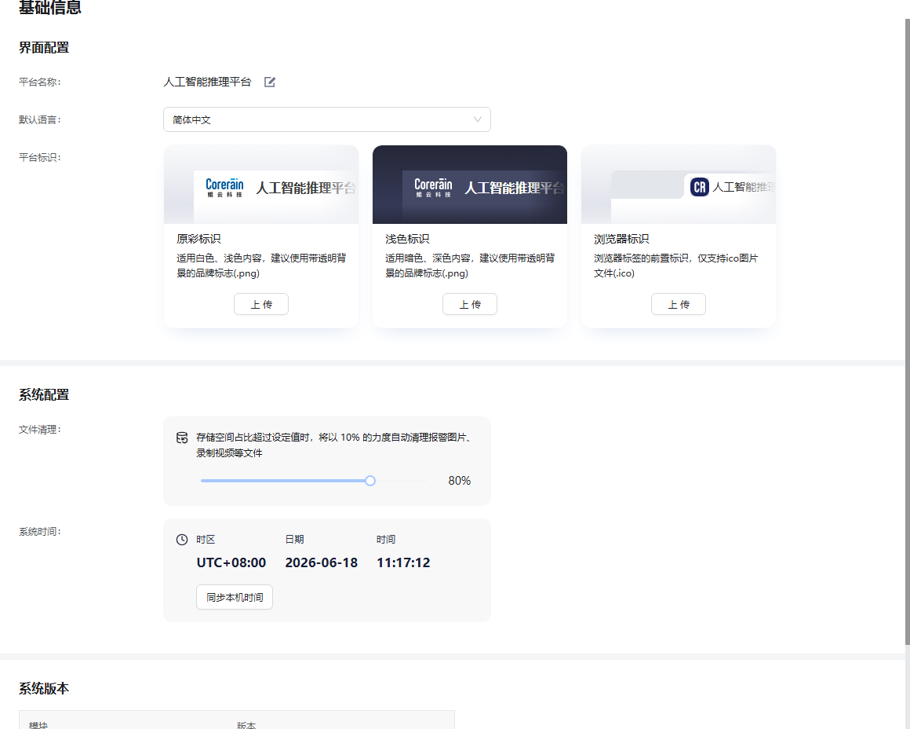 | 基础信息 | 业务区域默认态 业务区默认态 | 默认态用于观察页面主对象、筛选区、表格/卡片区和主操作分布；本图已避开顶部公共工具区，适合分析模块自身差异。 |
| 基础信息 | Tab_界面配置 Tab/分段切换 | 切换 界面配置 后观察内容是否随 tab 独立变化。产品上 tab 应表达清晰的信息分组，并保留当前上下文，避免用户在配置任务时迷失。 | |
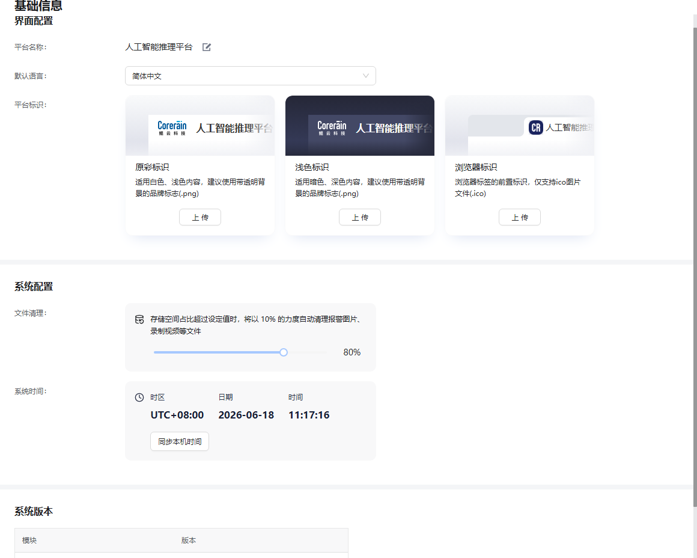 | 基础信息 | Tab_系统配置 Tab/分段切换 | 切换 系统配置 后观察内容是否随 tab 独立变化。产品上 tab 应表达清晰的信息分组，并保留当前上下文，避免用户在配置任务时迷失。 |
| 基础信息 | Tab_系统版本 Tab/分段切换 | 切换 系统版本 后观察内容是否随 tab 独立变化。产品上 tab 应表达清晰的信息分组，并保留当前上下文，避免用户在配置任务时迷失。 | |
| 基础信息 | 操作_上 传 业务操作 | 上 传 是该页面的业务动作入口。若打开弹窗/抽屉，应让用户在不离开当前列表的情况下完成配置；若只是状态按钮，应有明确反馈。 | |
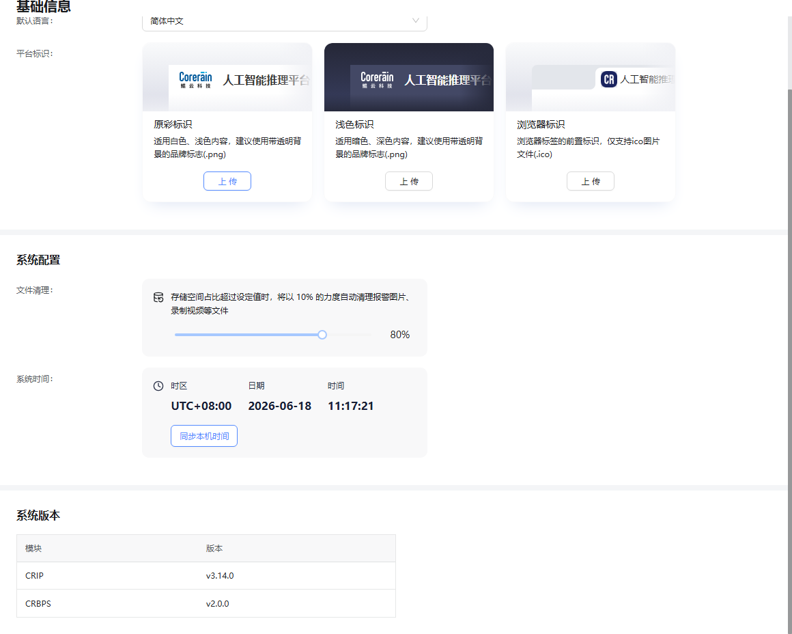 | 基础信息 | 操作_同步本机时间 安全定位 | 同步本机时间 可能产生保存、删除、安装、归档、主题切换或配置变更，本次只定位/悬停截图。产品设计上应提供权限控制、二次确认、影响范围说明和操作审计。 |
 | 离线仓库 | 业务区域默认态 业务区默认态 | 默认态用于观察页面主对象、筛选区、表格/卡片区和主操作分布；本图已避开顶部公共工具区，适合分析模块自身差异。 |
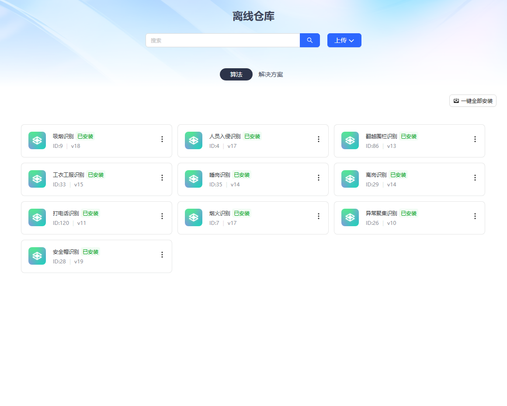 | 离线仓库 | Tab_算法 Tab/分段切换 | 切换 算法 后观察内容是否随 tab 独立变化。产品上 tab 应表达清晰的信息分组，并保留当前上下文，避免用户在配置任务时迷失。 |
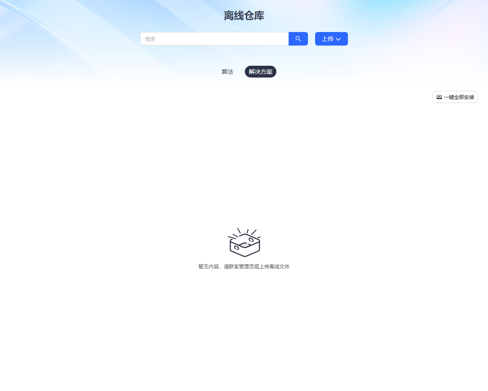 | 离线仓库 | Tab_解决方案 Tab/分段切换 | 切换 解决方案 后观察内容是否随 tab 独立变化。产品上 tab 应表达清晰的信息分组，并保留当前上下文，避免用户在配置任务时迷失。 |
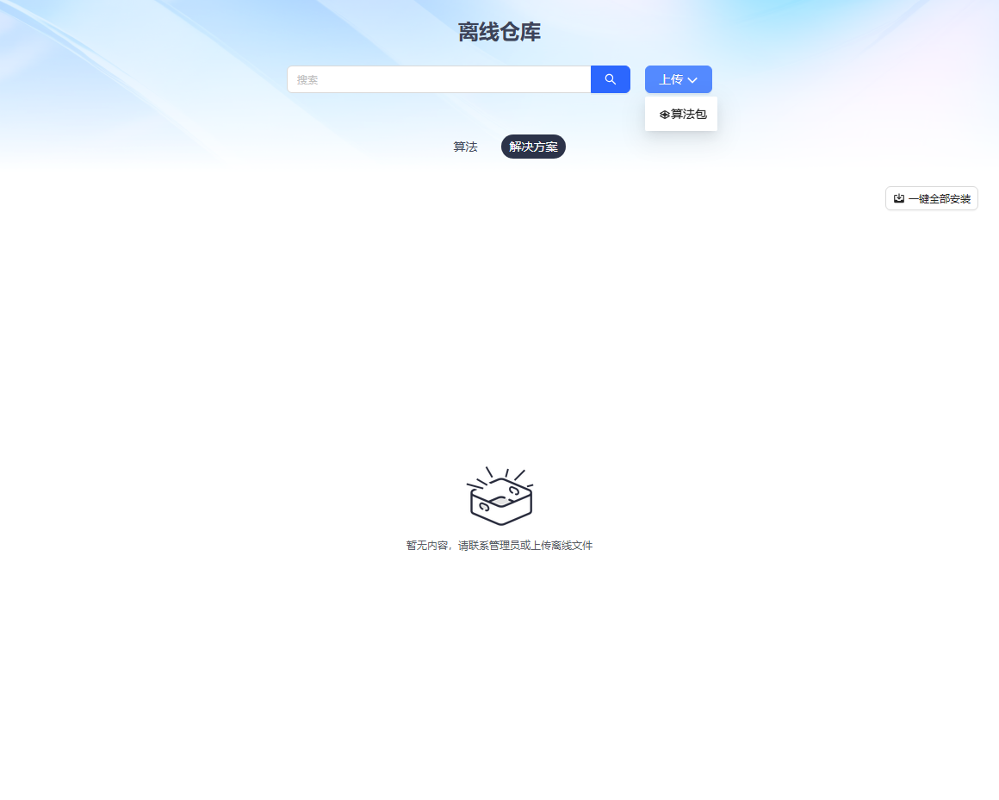 | 离线仓库 | 操作_上传 业务操作 | 上传 是该页面的业务动作入口。若打开弹窗/抽屉，应让用户在不离开当前列表的情况下完成配置；若只是状态按钮，应有明确反馈。 |
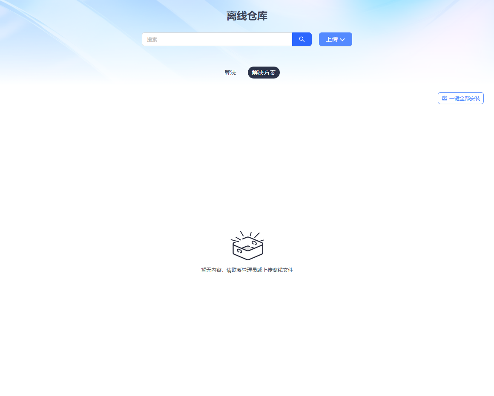 | 离线仓库 | 操作_一键全部安装 安全定位 | 一键全部安装 可能产生保存、删除、安装、归档、主题切换或配置变更，本次只定位/悬停截图。产品设计上应提供权限控制、二次确认、影响范围说明和操作审计。 |
| 系统主题 | 业务区域默认态 业务区默认态 | 默认态用于观察页面主对象、筛选区、表格/卡片区和主操作分布；本图已避开顶部公共工具区，适合分析模块自身差异。 | |
| 系统主题 | Tab_极光 Tab/分段切换 | 切换 极光 后观察内容是否随 tab 独立变化。产品上 tab 应表达清晰的信息分组，并保留当前上下文，避免用户在配置任务时迷失。 | |
| 系统主题 | Tab_绽放蓝 Tab/分段切换 | 切换 绽放蓝 后观察内容是否随 tab 独立变化。产品上 tab 应表达清晰的信息分组，并保留当前上下文，避免用户在配置任务时迷失。 | |
| 系统主题 | Tab_金属暖黑 Tab/分段切换 | 切换 金属暖黑 后观察内容是否随 tab 独立变化。产品上 tab 应表达清晰的信息分组，并保留当前上下文，避免用户在配置任务时迷失。 | |
| 系统主题 | Tab_深海蓝 Tab/分段切换 | 切换 深海蓝 后观察内容是否随 tab 独立变化。产品上 tab 应表达清晰的信息分组，并保留当前上下文，避免用户在配置任务时迷失。 | |
| 系统主题 | 操作_使 用 安全定位 | 使 用 可能产生保存、删除、安装、归档、主题切换或配置变更，本次只定位/悬停截图。产品设计上应提供权限控制、二次确认、影响范围说明和操作审计。 | |
 | 站内信 | 业务区域默认态 业务区默认态 | 默认态用于观察页面主对象、筛选区、表格/卡片区和主操作分布；本图已避开顶部公共工具区，适合分析模块自身差异。 |
| 站内信 | Tab_全部 Tab/分段切换 | 切换 全部 后观察内容是否随 tab 独立变化。产品上 tab 应表达清晰的信息分组，并保留当前上下文，避免用户在配置任务时迷失。 | |
| 站内信 | Tab_已读消息 Tab/分段切换 | 切换 已读消息 后观察内容是否随 tab 独立变化。产品上 tab 应表达清晰的信息分组，并保留当前上下文，避免用户在配置任务时迷失。 | |
| 站内信 | Tab_未读消息 Tab/分段切换 | 切换 未读消息 后观察内容是否随 tab 独立变化。产品上 tab 应表达清晰的信息分组，并保留当前上下文，避免用户在配置任务时迷失。 | |
| 站内信 | 操作_全部标记已读 安全定位 | 全部标记已读 可能产生保存、删除、安装、归档、主题切换或配置变更，本次只定位/悬停截图。产品设计上应提供权限控制、二次确认、影响范围说明和操作审计。 |
数据看板
| 子模块 | 截图/交互记录数 |
|---|---|
| 数据看板首页 | 18 |
| AI智能管控中心 | 14 |
| 截图 | 子模块 | 动作 | 反馈/弹窗摘要 | 设计说明 |
|---|---|---|---|---|
| 数据看板首页 | 页面全貌 overview | 进入子模块后的页面全貌，用于识别信息架构、主操作区、筛选区和表格/卡片区。 | 页面全貌用于判断信息架构：左侧导航负责定位，主区承载筛选、操作、表格或卡片，适合作为子模块设计基线。 | |
 | 数据看板首页 | 滚动位置_0% scroll | 记录页面不同滚动位置，补足表格、卡片和底部状态。 | 滚动截图用于确认页面内容密度、底部表格/分页/卡片布局，避免只看首屏导致遗漏。 |
| 数据看板首页 | 06_业务数据概览 业务数据概览是以大屏可视化图表的方式来呈现系统的业务数据展示_悬停 hover | 悬停查看 业务数据概览 业务数据概览是以大屏可视化图表的方式来呈现系统的业务数据展示 的 hover/提示状态 | 悬停 业务数据概览 业务数据概览是以大屏可视化图表的方式来呈现系统的业务数据展示，观察按钮可点击性、危险操作样式、行操作显隐和 hover 反馈；这是判断操作优先级的重要细节。 | |
| 数据看板首页 | 06_业务数据概览 业务数据概览是以大屏可视化图表的方式来呈现系统的业务数据展示_点击后 click | 点击后出现弹窗/下拉/提示：.custom-light-modal、[role="dialog"] | 点击 业务数据概览 业务数据概览是以大屏可视化图表的方式来呈现系统的业务数据展示 后进入弹窗/抽屉式流程。弹窗内容：已出现对话框。设计上把复杂创建、导入、配置或密码类操作隔离在临时层，既保留当前列表上下文，也降低页面跳转成本。 | |
| 数据看板首页 | 07_报警图片墙 报警图片墙是将系统所产生的报警以图片墙的方式呈现_悬停 hover | 悬停查看 报警图片墙 报警图片墙是将系统所产生的报警以图片墙的方式呈现 的 hover/提示状态 | 悬停 报警图片墙 报警图片墙是将系统所产生的报警以图片墙的方式呈现，观察按钮可点击性、危险操作样式、行操作显隐和 hover 反馈；这是判断操作优先级的重要细节。 | |
| 数据看板首页 | 07_报警图片墙 报警图片墙是将系统所产生的报警以图片墙的方式呈现_点击后 click | 点击后出现弹窗/下拉/提示：.custom-light-modal、[role="dialog"] | 点击 报警图片墙 报警图片墙是将系统所产生的报警以图片墙的方式呈现 后进入弹窗/抽屉式流程。弹窗内容：已出现对话框。设计上把复杂创建、导入、配置或密码类操作隔离在临时层，既保留当前列表上下文，也降低页面跳转成本。 | |
| 数据看板首页 | 08_AI智能管控中心 通过可视化界面，对系统进行实时监控、智能分析与高效管控_悬停 hover | 悬停查看 AI智能管控中心 通过可视化界面，对系统进行实时监控、智能分析与高效管控 的 hover/提示状态 | 悬停 AI智能管控中心 通过可视化界面，对系统进行实时监控、智能分析与高效管控，观察按钮可点击性、危险操作样式、行操作显隐和 hover 反馈；这是判断操作优先级的重要细节。 | |
| 数据看板首页 | 08_AI智能管控中心 通过可视化界面，对系统进行实时监控、智能分析与高效管控_点击后 click | 点击后出现弹窗/下拉/提示：.custom-light-modal、[role="dialog"] | 点击 AI智能管控中心 通过可视化界面，对系统进行实时监控、智能分析与高效管控 后进入弹窗/抽屉式流程。弹窗内容：已出现对话框。设计上把复杂创建、导入、配置或密码类操作隔离在临时层，既保留当前列表上下文，也降低页面跳转成本。 | |
 | AI智能管控中心 | 页面全貌 overview | 进入子模块后的页面全貌，用于识别信息架构、主操作区、筛选区和表格/卡片区。 | 页面全貌用于判断信息架构：左侧导航负责定位，主区承载筛选、操作、表格或卡片，适合作为子模块设计基线。 |
 | AI智能管控中心 | 滚动位置_0% scroll | 记录页面不同滚动位置，补足表格、卡片和底部状态。 | 滚动截图用于确认页面内容密度、底部表格/分页/卡片布局，避免只看首屏导致遗漏。 |
| AI智能管控中心 | 滚动位置_50% scroll | 记录页面不同滚动位置，补足表格、卡片和底部状态。 | 滚动截图用于确认页面内容密度、底部表格/分页/卡片布局，避免只看首屏导致遗漏。 | |
 | AI智能管控中心 | 滚动位置_100% scroll | 记录页面不同滚动位置，补足表格、卡片和底部状态。 | 滚动截图用于确认页面内容密度、底部表格/分页/卡片布局，避免只看首屏导致遗漏。 |
智能分析
| 子模块 | 截图/交互记录数 |
|---|---|
| 报警弹窗及语音 | 22 |
| 报警推送 | 18 |
| 分析服务状态 | 20 |
| 人员库 | 22 |
| 摄像头配置 | 22 |
| 视频流分析 | 22 |
| 算法底库 | 22 |
| 算法列表 | 22 |
| 图片分析 | 22 |
| 截图 | 子模块 | 动作 | 反馈/弹窗摘要 | 设计说明 |
|---|---|---|---|---|
 | 报警弹窗及语音 | 页面全貌 overview | 进入子模块后的页面全貌，用于识别信息架构、主操作区、筛选区和表格/卡片区。 | 页面全貌用于判断信息架构：左侧导航负责定位，主区承载筛选、操作、表格或卡片，适合作为子模块设计基线。 |
| 报警弹窗及语音 | 滚动位置_0% scroll | 记录页面不同滚动位置，补足表格、卡片和底部状态。 | 滚动截图用于确认页面内容密度、底部表格/分页/卡片布局，避免只看首屏导致遗漏。 | |
| 报警弹窗及语音 | 01_试听_悬停 hover | 悬停查看 试听 的 hover/提示状态 | 悬停 试听，观察按钮可点击性、危险操作样式、行操作显隐和 hover 反馈；这是判断操作优先级的重要细节。 | |
| 报警弹窗及语音 | 01_试听_点击后 click | 点击后记录页面反馈或空数据提示 | 点击后记录页面反馈或空数据提示 | |
| 报警弹窗及语音 | 02_编辑_悬停 hover | 悬停查看 编辑 的 hover/提示状态 | 悬停 编辑，观察按钮可点击性、危险操作样式、行操作显隐和 hover 反馈；这是判断操作优先级的重要细节。 | |
| 报警弹窗及语音 | 02_编辑_点击后 click | 语音编辑：人员入侵识别 播报方式 默认语音文件 自定义语音文件 文字转语音 语音效果试听 试听 取消 确 定 | 点击 编辑 后进入弹窗/抽屉式流程。弹窗内容：语音编辑：人员入侵识别 播报方式 默认语音文件 自定义语音文件 文字转语音 语音效果试听 试听 取消 确 定。设计上把复杂创建、导入、配置或密码类操作隔离在临时层，既保留当前列表上下文，也降低页面跳转成本。 | |
| 报警弹窗及语音 | 03_试听_悬停 hover | 悬停查看 试听 的 hover/提示状态 | 悬停 试听，观察按钮可点击性、危险操作样式、行操作显隐和 hover 反馈；这是判断操作优先级的重要细节。 | |
| 报警弹窗及语音 | 03_试听_点击后 click | 点击后记录页面反馈或空数据提示 | 点击后记录页面反馈或空数据提示 | |
| 报警弹窗及语音 | 04_编辑_悬停 hover | 悬停查看 编辑 的 hover/提示状态 | 悬停 编辑，观察按钮可点击性、危险操作样式、行操作显隐和 hover 反馈；这是判断操作优先级的重要细节。 | |
| 报警弹窗及语音 | 04_编辑_点击后 click | 语音编辑：烟火识别 播报方式 默认语音文件 自定义语音文件 文字转语音 语音效果试听 试听 取消 确 定 | 点击 编辑 后进入弹窗/抽屉式流程。弹窗内容：语音编辑：烟火识别 播报方式 默认语音文件 自定义语音文件 文字转语音 语音效果试听 试听 取消 确 定。设计上把复杂创建、导入、配置或密码类操作隔离在临时层，既保留当前列表上下文，也降低页面跳转成本。 | |
| 报警弹窗及语音 | 05_试听_悬停 hover | 悬停查看 试听 的 hover/提示状态 | 悬停 试听，观察按钮可点击性、危险操作样式、行操作显隐和 hover 反馈；这是判断操作优先级的重要细节。 | |
| 报警弹窗及语音 | 05_试听_点击后 click | 点击后记录页面反馈或空数据提示 | 点击后记录页面反馈或空数据提示 | |
| 报警弹窗及语音 | 06_编辑_悬停 hover | 悬停查看 编辑 的 hover/提示状态 | 悬停 编辑，观察按钮可点击性、危险操作样式、行操作显隐和 hover 反馈；这是判断操作优先级的重要细节。 | |
| 报警弹窗及语音 | 06_编辑_点击后 click | 语音编辑：吸烟识别 播报方式 默认语音文件 自定义语音文件 文字转语音 语音效果试听 试听 取消 确 定 | 点击 编辑 后进入弹窗/抽屉式流程。弹窗内容：语音编辑：吸烟识别 播报方式 默认语音文件 自定义语音文件 文字转语音 语音效果试听 试听 取消 确 定。设计上把复杂创建、导入、配置或密码类操作隔离在临时层，既保留当前列表上下文，也降低页面跳转成本。 | |
| 报警弹窗及语音 | 07_试听_悬停 hover | 悬停查看 试听 的 hover/提示状态 | 悬停 试听，观察按钮可点击性、危险操作样式、行操作显隐和 hover 反馈；这是判断操作优先级的重要细节。 | |
| 报警弹窗及语音 | 07_试听_点击后 click | 点击后记录页面反馈或空数据提示 | 点击后记录页面反馈或空数据提示 | |
| 报警弹窗及语音 | 08_编辑_悬停 hover | 悬停查看 编辑 的 hover/提示状态 | 悬停 编辑，观察按钮可点击性、危险操作样式、行操作显隐和 hover 反馈；这是判断操作优先级的重要细节。 | |
| 报警弹窗及语音 | 08_编辑_点击后 click | 语音编辑：异常聚集识别 播报方式 默认语音文件 自定义语音文件 文字转语音 语音效果试听 试听 取消 确 定 | 点击 编辑 后进入弹窗/抽屉式流程。弹窗内容：语音编辑：异常聚集识别 播报方式 默认语音文件 自定义语音文件 文字转语音 语音效果试听 试听 取消 确 定。设计上把复杂创建、导入、配置或密码类操作隔离在临时层，既保留当前列表上下文，也降低页面跳转成本。 | |
 | 报警弹窗及语音 | 09_试听_悬停 hover | 悬停查看 试听 的 hover/提示状态 | 悬停 试听，观察按钮可点击性、危险操作样式、行操作显隐和 hover 反馈；这是判断操作优先级的重要细节。 |
| 报警弹窗及语音 | 09_试听_点击后 click | 点击后记录页面反馈或空数据提示 | 点击后记录页面反馈或空数据提示 | |
| 报警弹窗及语音 | 10_编辑_悬停 hover | 悬停查看 编辑 的 hover/提示状态 | 悬停 编辑，观察按钮可点击性、危险操作样式、行操作显隐和 hover 反馈；这是判断操作优先级的重要细节。 | |
| 报警弹窗及语音 | 10_编辑_点击后 click | 语音编辑：安全帽识别 播报方式 默认语音文件 自定义语音文件 文字转语音 语音效果试听 试听 取消 确 定 | 点击 编辑 后进入弹窗/抽屉式流程。弹窗内容：语音编辑：安全帽识别 播报方式 默认语音文件 自定义语音文件 文字转语音 语音效果试听 试听 取消 确 定。设计上把复杂创建、导入、配置或密码类操作隔离在临时层，既保留当前列表上下文，也降低页面跳转成本。 | |
| 报警推送 | 页面全貌 overview | 进入子模块后的页面全貌，用于识别信息架构、主操作区、筛选区和表格/卡片区。 | 页面全貌用于判断信息架构：左侧导航负责定位，主区承载筛选、操作、表格或卡片，适合作为子模块设计基线。 | |
 | 报警推送 | 滚动位置_0% scroll | 记录页面不同滚动位置，补足表格、卡片和底部状态。 | 滚动截图用于确认页面内容密度、底部表格/分页/卡片布局，避免只看首屏导致遗漏。 |
| 报警推送 | 01_创建推送_悬停 hover | 悬停查看 创建推送 的 hover/提示状态 | 悬停 创建推送，观察按钮可点击性、危险操作样式、行操作显隐和 hover 反馈；这是判断操作优先级的重要细节。 | |
 | 报警推送 | 01_创建推送_点击后 click | 创建推送 基础信息 视频流分析场景 图片分析场景 名称 推送地址 报警图片推送方式 base64 对象存储 报警视频推送方式 本地链接 对象存储 推送场景 视频流分析场景 共计 30 项推送信息 预览 编辑 图片分析场景 共计 19 项推送信息 预览 编辑 取消 保 存 | 点击 创建推送 后进入弹窗/抽屉式流程。弹窗内容：创建推送 基础信息 视频流分析场景 图片分析场景 名称 推送地址 报警图片推送方式 base64 对象存储 报警视频推送方式 本地链接 对象存储 推送场景 视频流分析场景 共计 30 项推送信息 预览 编辑 图片分析场景 共计 19 项推送信息 预览 编辑 取消 保 存。设计上把复杂创建、导入、配置或密码类操作隔离在临时层，既保留当前列表上下文，也降低页面跳转成本。 |
 | 报警推送 | 02_状态测试_悬停 hover | 悬停查看 状态测试 的 hover/提示状态 | 悬停 状态测试，观察按钮可点击性、危险操作样式、行操作显隐和 hover 反馈；这是判断操作优先级的重要细节。 |
| 报警推送 | 02_状态测试_安全跳过点击 safety-skip | 该控件可能触发安装、导出、保存等最终动作，本轮只记录悬停状态，避免修改系统数据。 | 该操作可能产生安装、导出、保存、删除、启停或配置变更等副作用，本次只保留悬停/按钮状态截图；产品上应通过权限、二次确认和审计保护。 | |
| 报警推送 | 滚动位置_50% scroll | 记录页面不同滚动位置，补足表格、卡片和底部状态。 | 滚动截图用于确认页面内容密度、底部表格/分页/卡片布局，避免只看首屏导致遗漏。 | |
 | 报警推送 | 滚动位置_100% scroll | 记录页面不同滚动位置，补足表格、卡片和底部状态。 | 滚动截图用于确认页面内容密度、底部表格/分页/卡片布局，避免只看首屏导致遗漏。 |
 | 分析服务状态 | 页面全貌 overview | 进入子模块后的页面全貌，用于识别信息架构、主操作区、筛选区和表格/卡片区。 | 页面全貌用于判断信息架构：左侧导航负责定位，主区承载筛选、操作、表格或卡片，适合作为子模块设计基线。 |
| 分析服务状态 | 滚动位置_0% scroll | 记录页面不同滚动位置，补足表格、卡片和底部状态。 | 滚动截图用于确认页面内容密度、底部表格/分页/卡片布局，避免只看首屏导致遗漏。 | |
| 分析服务状态 | 01_强制重启_悬停 hover | 悬停查看 强制重启 的 hover/提示状态 | 悬停 强制重启，观察按钮可点击性、危险操作样式、行操作显隐和 hover 反馈；这是判断操作优先级的重要细节。 | |
| 分析服务状态 | 01_强制重启_点击后 click | 强制重启将释放 gpfas-client 和 全部gpfas-server并重启一个新服务 取 消 重 启 | 点击后出现弹窗/下拉/提示：.custom-light-popover | |
| 分析服务状态 | 02_详情_悬停 hover | 悬停查看 详情 的 hover/提示状态 | 悬停 详情，观察按钮可点击性、危险操作样式、行操作显隐和 hover 反馈；这是判断操作优先级的重要细节。 | |
| 分析服务状态 | 02_详情_点击后 click | 服务健康状态详情 服务健康状态详情 正常 查看详细日志 运行时间 当前系统时间 2026-06-18 09:28:45 服务启动时间 2026-06-18 06:30:03 服务工作时长 0天2小时58分钟40秒 运行状态 服务运行状态 运行 并行推理分析源 256 假死判断 当运行状态为“运行中”时，才有以下所有信息 是否假死 FALSE 推理状态 当假死判断为“否”时，才有以下所有信息 实时分析帧率 0 分析平均耗时 496 报警总数 0 读取视频帧总数 0 解码视频帧总数 0 推送分析总数 1 分析完成总数 | 点击 详情 后进入弹窗/抽屉式流程。弹窗内容：服务健康状态详情 服务健康状态详情 正常 查看详细日志 运行时间 当前系统时间 2026-06-18 09:28:45 服务启动时间 2026-06-18 06:30:03 服务工作时长 0天2小时58分钟40秒 运行状态 服务运行状态 运行 并行推理分析源 256 假死判断 当运行状态为“运行中”时，才有以下所有信息 是否假死 FALSE 推理状态 当假死判断为“否”时，才有以下所有信息 实时分析帧率 0 分析平均耗时 496 报警总数 0 读取视频帧总数 0 解码视频帧总数 0 推送分析总数 1 分析完成总数 。设计上把复杂创建、导入、配置或密码类操作隔离在临时层，既保留当前列表上下文，也降低页面跳转成本。 | |
| 分析服务状态 | 04_节点名称/IP_悬停 hover | 悬停查看 节点名称/IP 的 hover/提示状态 | 悬停 节点名称/IP，观察按钮可点击性、危险操作样式、行操作显隐和 hover 反馈；这是判断操作优先级的重要细节。 | |
| 分析服务状态 | 04_节点名称/IP_点击后 focus-or-open | 点击后记录页面反馈或空数据提示 | 点击后记录页面反馈或空数据提示 | |
| 分析服务状态 | 滚动位置_50% scroll | 记录页面不同滚动位置，补足表格、卡片和底部状态。 | 滚动截图用于确认页面内容密度、底部表格/分页/卡片布局，避免只看首屏导致遗漏。 | |
 | 分析服务状态 | 滚动位置_100% scroll | 记录页面不同滚动位置，补足表格、卡片和底部状态。 | 滚动截图用于确认页面内容密度、底部表格/分页/卡片布局，避免只看首屏导致遗漏。 |
 | 人员库 | 页面全貌 overview | 进入子模块后的页面全貌，用于识别信息架构、主操作区、筛选区和表格/卡片区。 | 页面全貌用于判断信息架构：左侧导航负责定位，主区承载筛选、操作、表格或卡片，适合作为子模块设计基线。 |
| 人员库 | 滚动位置_0% scroll | 记录页面不同滚动位置，补足表格、卡片和底部状态。 | 滚动截图用于确认页面内容密度、底部表格/分页/卡片布局，避免只看首屏导致遗漏。 | |
| 人员库 | 01_添加人员_悬停 hover | 悬停查看 添加人员 的 hover/提示状态 | 悬停 添加人员，观察按钮可点击性、危险操作样式、行操作显隐和 hover 反馈；这是判断操作优先级的重要细节。 | |
| 人员库 | 01_添加人员_点击后 click | 添加人员 用户信息 姓名 性别 请选择 工号 联系方式 分组 全部 照片组 1.仅支持 JPG 格式，文件大小不超过 2MB 查看示例 2.支持拖拽照片, 重新调整照片所属类型 正面 戴眼镜 微微偏左 微微偏右 微微俯视 取消 确 定 | 点击 添加人员 后进入弹窗/抽屉式流程。弹窗内容：添加人员 用户信息 姓名 性别 请选择 工号 联系方式 分组 全部 照片组 1.仅支持 JPG 格式，文件大小不超过 2MB 查看示例 2.支持拖拽照片, 重新调整照片所属类型 正面 戴眼镜 微微偏左 微微偏右 微微俯视 取消 确 定。设计上把复杂创建、导入、配置或密码类操作隔离在临时层，既保留当前列表上下文，也降低页面跳转成本。 | |
| 人员库 | 02_提取人员特征_悬停 hover | 悬停查看 提取人员特征 的 hover/提示状态 | 悬停 提取人员特征，观察按钮可点击性、危险操作样式、行操作显隐和 hover 反馈；这是判断操作优先级的重要细节。 | |
| 人员库 | 02_提取人员特征_点击后 click | 提取人员特征 提取成功 照片数量 0 张 提取成功 0张 提取失败 0张 未发起提取 0张 已完成人员特征提取 返 回 | 点击 提取人员特征 后进入弹窗/抽屉式流程。弹窗内容：提取人员特征 提取成功 照片数量 0 张 提取成功 0张 提取失败 0张 未发起提取 0张 已完成人员特征提取 返 回。设计上把复杂创建、导入、配置或密码类操作隔离在临时层，既保留当前列表上下文，也降低页面跳转成本。 | |
| 人员库 | 03_更多_悬停 hover | 悬停查看 更多 的 hover/提示状态 | 悬停 更多，观察按钮可点击性、危险操作样式、行操作显隐和 hover 反馈；这是判断操作优先级的重要细节。 | |
| 人员库 | 03_更多_点击后 click | 导入 导出 删除 | 点击 更多 后打开菜单。菜单内容：导入 导出 删除。适合更多操作、账号、语言、应用中心、通知等轻量分发场景。 | |
| 人员库 | 05_姓名/ID/工号_悬停 hover | 悬停查看 姓名/ID/工号 的 hover/提示状态 | 悬停 姓名/ID/工号，观察按钮可点击性、危险操作样式、行操作显隐和 hover 反馈；这是判断操作优先级的重要细节。 | |
| 人员库 | 05_姓名/ID/工号_点击后 focus-or-open | 点击后记录页面反馈或空数据提示 | 点击后记录页面反馈或空数据提示 | |
| 人员库 | 06_分组名称_悬停 hover | 悬停查看 分组名称 的 hover/提示状态 | 悬停 分组名称，观察按钮可点击性、危险操作样式、行操作显隐和 hover 反馈；这是判断操作优先级的重要细节。 | |
| 人员库 | 06_分组名称_点击后 focus-or-open | 点击后记录页面反馈或空数据提示 | 点击后记录页面反馈或空数据提示 | |
 | 摄像头配置 | 页面全貌 overview | 进入子模块后的页面全貌，用于识别信息架构、主操作区、筛选区和表格/卡片区。 | 页面全貌用于判断信息架构：左侧导航负责定位，主区承载筛选、操作、表格或卡片，适合作为子模块设计基线。 |
| 摄像头配置 | 滚动位置_0% scroll | 记录页面不同滚动位置，补足表格、卡片和底部状态。 | 滚动截图用于确认页面内容密度、底部表格/分页/卡片布局，避免只看首屏导致遗漏。 | |
| 摄像头配置 | 01_新增摄像头_悬停 hover | 悬停查看 新增摄像头 的 hover/提示状态 | 悬停 新增摄像头，观察按钮可点击性、危险操作样式、行操作显隐和 hover 反馈；这是判断操作优先级的重要细节。 | |
| 摄像头配置 | 01_新增摄像头_点击后 click | 添加摄像头 名称 选择分组 请选择 GPS 信息 设备类型 实时视频 实时视频 原始流地址 一键生成 快速填写 海康 大华 其他 预览图 上传图片 获取抓图 取消 保 存 | 点击 新增摄像头 后进入弹窗/抽屉式流程。弹窗内容：添加摄像头 名称 选择分组 请选择 GPS 信息 设备类型 实时视频 实时视频 原始流地址 一键生成 快速填写 海康 大华 其他 预览图 上传图片 获取抓图 取消 保 存。设计上把复杂创建、导入、配置或密码类操作隔离在临时层，既保留当前列表上下文，也降低页面跳转成本。 | |
| 摄像头配置 | 02_视频源管理_悬停 hover | 悬停查看 视频源管理 的 hover/提示状态 | 悬停 视频源管理，观察按钮可点击性、危险操作样式、行操作显隐和 hover 反馈；这是判断操作优先级的重要细节。 | |
| 摄像头配置 | 02_视频源管理_点击后 click | 视频源管理 新增视频源 名称 视频源 是否自动刷新 操作 系统 系统 -- | 点击 视频源管理 后进入弹窗/抽屉式流程。弹窗内容：视频源管理 新增视频源 名称 视频源 是否自动刷新 操作 系统 系统 --。设计上把复杂创建、导入、配置或密码类操作隔离在临时层，既保留当前列表上下文，也降低页面跳转成本。 | |
| 摄像头配置 | 03_刷新_悬停 hover | 悬停查看 刷新 的 hover/提示状态 | 悬停 刷新，观察按钮可点击性、危险操作样式、行操作显隐和 hover 反馈；这是判断操作优先级的重要细节。 | |
| 摄像头配置 | 03_刷新_点击后 click | 操作成功 | 点击 刷新 后出现消息反馈。反馈内容：操作成功。该设计把空选择、无效操作、成功结果即时告知用户，是批量操作和空数据场景的必要兜底。 | |
| 摄像头配置 | 04_移动_悬停 hover | 悬停查看 移动 的 hover/提示状态 | 悬停 移动，观察按钮可点击性、危险操作样式、行操作显隐和 hover 反馈；这是判断操作优先级的重要细节。 | |
| 摄像头配置 | 04_移动_点击后 click | 操作成功 操作无效，请选择摄像头 | 点击 移动 后出现消息反馈。反馈内容：操作成功 操作无效，请选择摄像头。该设计把空选择、无效操作、成功结果即时告知用户，是批量操作和空数据场景的必要兜底。 | |
| 摄像头配置 | 05_抓图_悬停 hover | 悬停查看 抓图 的 hover/提示状态 | 悬停 抓图，观察按钮可点击性、危险操作样式、行操作显隐和 hover 反馈；这是判断操作优先级的重要细节。 | |
| 摄像头配置 | 05_抓图_点击后 click | 批量抓图 请选择此次摄像头抓图范围 已选 共 0 个摄像头 当前分页 共 0 个摄像头 取 消 确 定；操作无效，请选择摄像头 | 点击 抓图 后进入弹窗/抽屉式流程。弹窗内容：批量抓图 请选择此次摄像头抓图范围 已选 共 0 个摄像头 当前分页 共 0 个摄像头 取 消 确 定；操作无效，请选择摄像头。设计上把复杂创建、导入、配置或密码类操作隔离在临时层，既保留当前列表上下文，也降低页面跳转成本。 | |
| 摄像头配置 | 06_导入_悬停 hover | 悬停查看 导入 的 hover/提示状态 | 悬停 导入，观察按钮可点击性、危险操作样式、行操作显隐和 hover 反馈；这是判断操作优先级的重要细节。 | |
| 摄像头配置 | 06_导入_点击后 click | 导入 下载的模版为空白数据，您也可以在「摄像头配置」导出带有数据的表格，修改后上传 下载模板 上传文件 | 点击 导入 后进入弹窗/抽屉式流程。弹窗内容：导入 下载的模版为空白数据，您也可以在「摄像头配置」导出带有数据的表格，修改后上传 下载模板 上传文件。设计上把复杂创建、导入、配置或密码类操作隔离在临时层，既保留当前列表上下文，也降低页面跳转成本。 | |
 | 摄像头配置 | 07_导出_悬停 hover | 悬停查看 导出 的 hover/提示状态 | 悬停 导出，观察按钮可点击性、危险操作样式、行操作显隐和 hover 反馈；这是判断操作优先级的重要细节。 |
 | 摄像头配置 | 07_导出_安全跳过点击 safety-skip | 该控件可能触发安装、导出、保存等最终动作，本轮只记录悬停状态，避免修改系统数据。 | 该操作可能产生安装、导出、保存、删除、启停或配置变更等副作用，本次只保留悬停/按钮状态截图；产品上应通过权限、二次确认和审计保护。 |
| 摄像头配置 | 08_删除_悬停 hover | 悬停查看 删除 的 hover/提示状态 | 悬停 删除，观察按钮可点击性、危险操作样式、行操作显隐和 hover 反馈；这是判断操作优先级的重要细节。 | |
 | 摄像头配置 | 08_删除_安全跳过点击 safety-skip | 该控件可能触发安装、导出、保存等最终动作，本轮只记录悬停状态，避免修改系统数据。 | 该操作可能产生安装、导出、保存、删除、启停或配置变更等副作用，本次只保留悬停/按钮状态截图；产品上应通过权限、二次确认和审计保护。 |
| 摄像头配置 | 10_名称/流地址_悬停 hover | 悬停查看 名称/流地址 的 hover/提示状态 | 悬停 名称/流地址，观察按钮可点击性、危险操作样式、行操作显隐和 hover 反馈；这是判断操作优先级的重要细节。 | |
| 摄像头配置 | 10_名称/流地址_点击后 focus-or-open | 点击后记录页面反馈或空数据提示 | 点击后记录页面反馈或空数据提示 | |
| 视频流分析 | 页面全貌 overview | 进入子模块后的页面全貌，用于识别信息架构、主操作区、筛选区和表格/卡片区。 | 页面全貌用于判断信息架构：左侧导航负责定位，主区承载筛选、操作、表格或卡片，适合作为子模块设计基线。 | |
 | 视频流分析 | 滚动位置_0% scroll | 记录页面不同滚动位置，补足表格、卡片和底部状态。 | 滚动截图用于确认页面内容密度、底部表格/分页/卡片布局，避免只看首屏导致遗漏。 |
| 视频流分析 | 01_创建视频分析任务_悬停 hover | 悬停查看 创建视频分析任务 的 hover/提示状态 | 悬停 创建视频分析任务，观察按钮可点击性、危险操作样式、行操作显隐和 hover 反馈；这是判断操作优先级的重要细节。 | |
| 视频流分析 | 01_创建视频分析任务_点击后 click | 请选择视频流分析任务类型 实时分析 对所选摄像头进行实时取流分析 轮巡分析 每次对一组摄像头进行分析，分析一定时间后自动切换到下一组，仅支持关键帧分析 确 定 | 点击 创建视频分析任务 后进入弹窗/抽屉式流程。弹窗内容：请选择视频流分析任务类型 实时分析 对所选摄像头进行实时取流分析 轮巡分析 每次对一组摄像头进行分析，分析一定时间后自动切换到下一组，仅支持关键帧分析 确 定。设计上把复杂创建、导入、配置或密码类操作隔离在临时层，既保留当前列表上下文，也降低页面跳转成本。 | |
| 视频流分析 | 02_启用_悬停 hover | 悬停查看 启用 的 hover/提示状态 | 悬停 启用，观察按钮可点击性、危险操作样式、行操作显隐和 hover 反馈；这是判断操作优先级的重要细节。 | |
| 视频流分析 | 02_启用_点击后 click | 启用任务 任务就绪检查项 算法任务 推理算法已选择 未选择 任务配置 全部完成 摄像头 摄像头已选择 未选择 计算服务 编辑 分配方式 均衡策略 计算节点 -- 未完成配置 推理引擎 未选择 未完成配置 任务就绪检查结果 任务未就绪 任务无法操作 任务启用状态 请注意检查未就绪的内容并重试 立即启用 | 点击 启用 后进入弹窗/抽屉式流程。弹窗内容：启用任务 任务就绪检查项 算法任务 推理算法已选择 未选择 任务配置 全部完成 摄像头 摄像头已选择 未选择 计算服务 编辑 分配方式 均衡策略 计算节点 -- 未完成配置 推理引擎 未选择 未完成配置 任务就绪检查结果 任务未就绪 任务无法操作 任务启用状态 请注意检查未就绪的内容并重试 立即启用。设计上把复杂创建、导入、配置或密码类操作隔离在临时层，既保留当前列表上下文，也降低页面跳转成本。 | |
| 视频流分析 | 03_详情_悬停 hover | 悬停查看 详情 的 hover/提示状态 | 悬停 详情，观察按钮可点击性、危险操作样式、行操作显隐和 hover 反馈；这是判断操作优先级的重要细节。 | |
| 视频流分析 | 03_详情_点击后 click | 视频分析任务详情 视频流-实时分析 01 选择摄像头与算法 02 配置任务 03 查看报警 暂未发现报警 | 点击 详情 后进入弹窗/抽屉式流程。弹窗内容：视频分析任务详情 视频流-实时分析 01 选择摄像头与算法 02 配置任务 03 查看报警 暂未发现报警。设计上把复杂创建、导入、配置或密码类操作隔离在临时层，既保留当前列表上下文，也降低页面跳转成本。 | |
| 视频流分析 | 04_演示视频_悬停 hover | 悬停查看 演示视频 的 hover/提示状态 | 悬停 演示视频，观察按钮可点击性、危险操作样式、行操作显隐和 hover 反馈；这是判断操作优先级的重要细节。 | |
 | 视频流分析 | 04_演示视频_安全跳过点击 safety-skip | 该控件可能触发安装、导出、保存等最终动作，本轮只记录悬停状态，避免修改系统数据。 | 该操作可能产生安装、导出、保存、删除、启停或配置变更等副作用，本次只保留悬停/按钮状态截图；产品上应通过权限、二次确认和审计保护。 |
| 视频流分析 | 05_删除_悬停 hover | 悬停查看 删除 的 hover/提示状态 | 悬停 删除，观察按钮可点击性、危险操作样式、行操作显隐和 hover 反馈；这是判断操作优先级的重要细节。 | |
| 视频流分析 | 05_删除_点击后 click | 删除分析任务 删除后无法恢复，请确认是否继续删除此分析任务 取消确认删除 | 点击 删除 后进入弹窗/抽屉式流程。弹窗内容：删除分析任务 删除后无法恢复，请确认是否继续删除此分析任务 取消确认删除。设计上把复杂创建、导入、配置或密码类操作隔离在临时层，既保留当前列表上下文，也降低页面跳转成本。 | |
| 视频流分析 | 07_ID/任务名称_悬停 hover | 悬停查看 ID/任务名称 的 hover/提示状态 | 悬停 ID/任务名称，观察按钮可点击性、危险操作样式、行操作显隐和 hover 反馈；这是判断操作优先级的重要细节。 | |
| 视频流分析 | 07_ID/任务名称_点击后 focus-or-open | 点击后记录页面反馈或空数据提示 | 点击后记录页面反馈或空数据提示 | |
| 视频流分析 | 08_20 条/页_悬停 hover | 悬停查看 20 条/页 的 hover/提示状态 | 悬停 20 条/页，观察按钮可点击性、危险操作样式、行操作显隐和 hover 反馈；这是判断操作优先级的重要细节。 | |
| 视频流分析 | 08_20 条/页_点击后 focus-or-open | 10 20 50 1 条/页 10 条/页 20 条/页 50 条/页 100 条/页 | 点击 20 条/页 后打开下拉选择。选项内容：10 20 50 1 条/页 10 条/页 20 条/页 50 条/页 100 条/页。适合枚举型筛选、菜单搜索和业务分类选择，建议支持搜索、高亮和最近使用。 | |
 | 算法底库 | 页面全貌 overview | 进入子模块后的页面全貌，用于识别信息架构、主操作区、筛选区和表格/卡片区。 | 页面全貌用于判断信息架构：左侧导航负责定位，主区承载筛选、操作、表格或卡片，适合作为子模块设计基线。 |
| 算法底库 | 滚动位置_0% scroll | 记录页面不同滚动位置，补足表格、卡片和底部状态。 | 滚动截图用于确认页面内容密度、底部表格/分页/卡片布局，避免只看首屏导致遗漏。 | |
| 算法底库 | 01_同步详情_悬停 hover | 悬停查看 同步详情 的 hover/提示状态 | 悬停 同步详情，观察按钮可点击性、危险操作样式、行操作显隐和 hover 反馈；这是判断操作优先级的重要细节。 | |
| 算法底库 | 01_同步详情_点击后 click | 同步详情 ID 节点名称 上一次同步时间 上次同步数量 同步状态 操作 暂无数据 | 点击 同步详情 后进入弹窗/抽屉式流程。弹窗内容：同步详情 ID 节点名称 上一次同步时间 上次同步数量 同步状态 操作 暂无数据。设计上把复杂创建、导入、配置或密码类操作隔离在临时层，既保留当前列表上下文，也降低页面跳转成本。 | |
| 算法底库 | 02_立即同步_悬停 hover | 悬停查看 立即同步 的 hover/提示状态 | 悬停 立即同步，观察按钮可点击性、危险操作样式、行操作显隐和 hover 反馈；这是判断操作优先级的重要细节。 | |
| 算法底库 | 02_立即同步_点击后 click | 已下发同步指令 | 点击 立即同步 后出现消息反馈。反馈内容：已下发同步指令。该设计把空选择、无效操作、成功结果即时告知用户，是批量操作和空数据场景的必要兜底。 | |
| 算法底库 | 03_上传图片_悬停 hover | 悬停查看 上传图片 的 hover/提示状态 | 悬停 上传图片，观察按钮可点击性、危险操作样式、行操作显隐和 hover 反馈；这是判断操作优先级的重要细节。 | |
| 算法底库 | 03_上传图片_点击后 click | 已下发同步指令 | 点击 上传图片 后出现消息反馈。反馈内容：已下发同步指令。该设计把空选择、无效操作、成功结果即时告知用户，是批量操作和空数据场景的必要兜底。 | |
| 算法底库 | 04_添加标签_悬停 hover | 悬停查看 添加标签 的 hover/提示状态 | 悬停 添加标签，观察按钮可点击性、危险操作样式、行操作显隐和 hover 反馈；这是判断操作优先级的重要细节。 | |
| 算法底库 | 04_添加标签_点击后 click | 请先选择图片 | 点击 添加标签 后出现消息反馈。反馈内容：请先选择图片。该设计把空选择、无效操作、成功结果即时告知用户，是批量操作和空数据场景的必要兜底。 | |
| 算法底库 | 05_删除_悬停 hover | 悬停查看 删除 的 hover/提示状态 | 悬停 删除，观察按钮可点击性、危险操作样式、行操作显隐和 hover 反馈；这是判断操作优先级的重要细节。 | |
| 算法底库 | 05_删除_点击后 click | 请先选择图片 请先选择图片 | 点击 删除 后出现消息反馈。反馈内容：请先选择图片 请先选择图片。该设计把空选择、无效操作、成功结果即时告知用户，是批量操作和空数据场景的必要兜底。 | |
| 算法底库 | 07_底库名称_悬停 hover | 悬停查看 底库名称 的 hover/提示状态 | 悬停 底库名称，观察按钮可点击性、危险操作样式、行操作显隐和 hover 反馈；这是判断操作优先级的重要细节。 | |
| 算法底库 | 07_底库名称_点击后 focus-or-open | 点击后记录页面反馈或空数据提示 | 点击后记录页面反馈或空数据提示 | |
| 算法底库 | 08_10 条/页_悬停 hover | 悬停查看 10 条/页 的 hover/提示状态 | 悬停 10 条/页，观察按钮可点击性、危险操作样式、行操作显隐和 hover 反馈；这是判断操作优先级的重要细节。 | |
| 算法底库 | 08_10 条/页_点击后 focus-or-open | 1 10 20 1 条/页 10 条/页 20 条/页 50 条/页 100 条/页 | 点击 10 条/页 后打开下拉选择。选项内容：1 10 20 1 条/页 10 条/页 20 条/页 50 条/页 100 条/页。适合枚举型筛选、菜单搜索和业务分类选择，建议支持搜索、高亮和最近使用。 | |
| 算法列表 | 页面全貌 overview | 进入子模块后的页面全貌，用于识别信息架构、主操作区、筛选区和表格/卡片区。 | 页面全貌用于判断信息架构：左侧导航负责定位，主区承载筛选、操作、表格或卡片，适合作为子模块设计基线。 | |
 | 算法列表 | 滚动位置_0% scroll | 记录页面不同滚动位置，补足表格、卡片和底部状态。 | 滚动截图用于确认页面内容密度、底部表格/分页/卡片布局，避免只看首屏导致遗漏。 |
| 算法列表 | 01_创建虚拟算法_悬停 hover | 悬停查看 创建虚拟算法 的 hover/提示状态 | 悬停 创建虚拟算法，观察按钮可点击性、危险操作样式、行操作显隐和 hover 反馈；这是判断操作优先级的重要细节。 | |
| 算法列表 | 01_创建虚拟算法_点击后 click | 创建虚拟算法 虚拟算法仅可用作特殊场景报警输出的关联算法，不支持进行算法分析 算法中文名 算法英文名 取消 确 定 | 点击 创建虚拟算法 后进入弹窗/抽屉式流程。弹窗内容：创建虚拟算法 虚拟算法仅可用作特殊场景报警输出的关联算法，不支持进行算法分析 算法中文名 算法英文名 取消 确 定。设计上把复杂创建、导入、配置或密码类操作隔离在临时层，既保留当前列表上下文，也降低页面跳转成本。 | |
| 算法列表 | 02_统计配置_悬停 hover | 悬停查看 统计配置 的 hover/提示状态 | 悬停 统计配置，观察按钮可点击性、危险操作样式、行操作显隐和 hover 反馈；这是判断操作优先级的重要细节。 | |
| 算法列表 | 02_统计配置_点击后 click | 数据统计配置 人流统计 车流统计 关联算法 请选择 定时清零 取消 保 存 | 点击 统计配置 后进入弹窗/抽屉式流程。弹窗内容：数据统计配置 人流统计 车流统计 关联算法 请选择 定时清零 取消 保 存。设计上把复杂创建、导入、配置或密码类操作隔离在临时层，既保留当前列表上下文，也降低页面跳转成本。 | |
| 算法列表 | 03_编辑_悬停 hover | 悬停查看 编辑 的 hover/提示状态 | 悬停 编辑，观察按钮可点击性、危险操作样式、行操作显隐和 hover 反馈；这是判断操作优先级的重要细节。 | |
| 算法列表 | 03_编辑_点击后 click | 点击后记录页面反馈或空数据提示 | 点击 编辑 用于从列表进入单对象配置或查看，体现“列表管理 + 详情维护”的后台产品模式。 | |
| 算法列表 | 04_编辑_悬停 hover | 悬停查看 编辑 的 hover/提示状态 | 悬停 编辑，观察按钮可点击性、危险操作样式、行操作显隐和 hover 反馈；这是判断操作优先级的重要细节。 | |
| 算法列表 | 04_编辑_点击后 click | 点击后记录页面反馈或空数据提示 | 点击 编辑 用于从列表进入单对象配置或查看，体现“列表管理 + 详情维护”的后台产品模式。 | |
| 算法列表 | 05_编辑_悬停 hover | 悬停查看 编辑 的 hover/提示状态 | 悬停 编辑，观察按钮可点击性、危险操作样式、行操作显隐和 hover 反馈；这是判断操作优先级的重要细节。 | |
| 算法列表 | 05_编辑_点击后 click | 点击后记录页面反馈或空数据提示 | 点击 编辑 用于从列表进入单对象配置或查看，体现“列表管理 + 详情维护”的后台产品模式。 | |
| 算法列表 | 06_编辑_悬停 hover | 悬停查看 编辑 的 hover/提示状态 | 悬停 编辑，观察按钮可点击性、危险操作样式、行操作显隐和 hover 反馈；这是判断操作优先级的重要细节。 | |
| 算法列表 | 06_编辑_点击后 click | 点击后记录页面反馈或空数据提示 | 点击 编辑 用于从列表进入单对象配置或查看，体现“列表管理 + 详情维护”的后台产品模式。 | |
| 算法列表 | 07_编辑_悬停 hover | 悬停查看 编辑 的 hover/提示状态 | 悬停 编辑，观察按钮可点击性、危险操作样式、行操作显隐和 hover 反馈；这是判断操作优先级的重要细节。 | |
| 算法列表 | 07_编辑_点击后 click | 点击后记录页面反馈或空数据提示 | 点击 编辑 用于从列表进入单对象配置或查看，体现“列表管理 + 详情维护”的后台产品模式。 | |
| 算法列表 | 08_编辑_悬停 hover | 悬停查看 编辑 的 hover/提示状态 | 悬停 编辑，观察按钮可点击性、危险操作样式、行操作显隐和 hover 反馈；这是判断操作优先级的重要细节。 | |
| 算法列表 | 08_编辑_点击后 click | 点击后记录页面反馈或空数据提示 | 点击 编辑 用于从列表进入单对象配置或查看，体现“列表管理 + 详情维护”的后台产品模式。 | |
| 算法列表 | 09_编辑_悬停 hover | 悬停查看 编辑 的 hover/提示状态 | 悬停 编辑，观察按钮可点击性、危险操作样式、行操作显隐和 hover 反馈；这是判断操作优先级的重要细节。 | |
| 算法列表 | 09_编辑_点击后 click | 点击后记录页面反馈或空数据提示 | 点击 编辑 用于从列表进入单对象配置或查看，体现“列表管理 + 详情维护”的后台产品模式。 | |
| 算法列表 | 10_编辑_悬停 hover | 悬停查看 编辑 的 hover/提示状态 | 悬停 编辑，观察按钮可点击性、危险操作样式、行操作显隐和 hover 反馈；这是判断操作优先级的重要细节。 | |
| 算法列表 | 10_编辑_点击后 click | 点击后记录页面反馈或空数据提示 | 点击 编辑 用于从列表进入单对象配置或查看，体现“列表管理 + 详情维护”的后台产品模式。 | |
 | 图片分析 | 页面全貌 overview | 进入子模块后的页面全貌，用于识别信息架构、主操作区、筛选区和表格/卡片区。 | 页面全貌用于判断信息架构：左侧导航负责定位，主区承载筛选、操作、表格或卡片，适合作为子模块设计基线。 |
| 图片分析 | 滚动位置_0% scroll | 记录页面不同滚动位置，补足表格、卡片和底部状态。 | 滚动截图用于确认页面内容密度、底部表格/分页/卡片布局，避免只看首屏导致遗漏。 | |
| 图片分析 | 01_创建图片分析任务_悬停 hover | 悬停查看 创建图片分析任务 的 hover/提示状态 | 悬停 创建图片分析任务，观察按钮可点击性、危险操作样式、行操作显隐和 hover 反馈；这是判断操作优先级的重要细节。 | |
| 图片分析 | 01_创建图片分析任务_点击后 click | 创建任务 请填写名称并创建分析任务 0 / 20 创 建 | 点击 创建图片分析任务 后进入弹窗/抽屉式流程。弹窗内容：创建任务 请填写名称并创建分析任务 0 / 20 创 建。设计上把复杂创建、导入、配置或密码类操作隔离在临时层，既保留当前列表上下文，也降低页面跳转成本。 | |
| 图片分析 | 02_停用_悬停 hover | 悬停查看 停用 的 hover/提示状态 | 悬停 停用，观察按钮可点击性、危险操作样式、行操作显隐和 hover 反馈；这是判断操作优先级的重要细节。 | |
| 图片分析 | 02_停用_点击后 click | 停用任务 任务就绪检查结果 任务就绪 任务可以操作 任务启用状态 停用任务 停用后计算节点将被释放，同时报警推送等也将停止，请确定后再操作 立即停用 | 点击 停用 后进入弹窗/抽屉式流程。弹窗内容：停用任务 任务就绪检查结果 任务就绪 任务可以操作 任务启用状态 停用任务 停用后计算节点将被释放，同时报警推送等也将停止，请确定后再操作 立即停用。设计上把复杂创建、导入、配置或密码类操作隔离在临时层，既保留当前列表上下文，也降低页面跳转成本。 | |
| 图片分析 | 03_详情_悬停 hover | 悬停查看 详情 的 hover/提示状态 | 悬停 详情，观察按钮可点击性、危险操作样式、行操作显隐和 hover 反馈；这是判断操作优先级的重要细节。 | |
| 图片分析 | 03_详情_点击后 click | 图片分析任务 图片-API推送分析 01 配置算法 算法数量: 1 02 配置任务 03 查看报警 暂未发现报警 | 点击 详情 后进入弹窗/抽屉式流程。弹窗内容：图片分析任务 图片-API推送分析 01 配置算法 算法数量: 1 02 配置任务 03 查看报警 暂未发现报警。设计上把复杂创建、导入、配置或密码类操作隔离在临时层，既保留当前列表上下文，也降低页面跳转成本。 | |
| 图片分析 | 04_删除_悬停 hover | 悬停查看 删除 的 hover/提示状态 | 悬停 删除，观察按钮可点击性、危险操作样式、行操作显隐和 hover 反馈；这是判断操作优先级的重要细节。 | |
 | 图片分析 | 04_删除_安全跳过点击 safety-skip | 该控件可能触发安装、导出、保存等最终动作，本轮只记录悬停状态，避免修改系统数据。 | 该操作可能产生安装、导出、保存、删除、启停或配置变更等副作用，本次只保留悬停/按钮状态截图；产品上应通过权限、二次确认和审计保护。 |
| 图片分析 | 06_ID/任务名称_悬停 hover | 悬停查看 ID/任务名称 的 hover/提示状态 | 悬停 ID/任务名称，观察按钮可点击性、危险操作样式、行操作显隐和 hover 反馈；这是判断操作优先级的重要细节。 | |
| 图片分析 | 06_ID/任务名称_点击后 focus-or-open | 点击后记录页面反馈或空数据提示 | 点击后记录页面反馈或空数据提示 | |
| 图片分析 | 07_10 条/页_悬停 hover | 悬停查看 10 条/页 的 hover/提示状态 | 悬停 10 条/页，观察按钮可点击性、危险操作样式、行操作显隐和 hover 反馈；这是判断操作优先级的重要细节。 | |
| 图片分析 | 07_10 条/页_点击后 focus-or-open | 1 10 20 1 条/页 10 条/页 20 条/页 50 条/页 100 条/页 | 点击 10 条/页 后打开下拉选择。选项内容：1 10 20 1 条/页 10 条/页 20 条/页 50 条/页 100 条/页。适合枚举型筛选、菜单搜索和业务分类选择，建议支持搜索、高亮和最近使用。 |
数据中心
| 子模块 | 截图/交互记录数 |
|---|---|
| 报警日志 | 26 |
| 报警推送日志 | 26 |
| 陌生人识别日志 | 26 |
| 人员识别日志 | 26 |
| 截图 | 子模块 | 动作 | 反馈/弹窗摘要 | 设计说明 |
|---|---|---|---|---|
 | 报警日志 | 页面全貌 overview | 进入子模块后的页面全貌，用于识别信息架构、主操作区、筛选区和表格/卡片区。 | 页面全貌用于判断信息架构：左侧导航负责定位，主区承载筛选、操作、表格或卡片，适合作为子模块设计基线。 |
 | 报警日志 | 滚动位置_0% scroll | 记录页面不同滚动位置，补足表格、卡片和底部状态。 | 滚动截图用于确认页面内容密度、底部表格/分页/卡片布局，避免只看首屏导致遗漏。 |
 | 报警日志 | 01_正误报统计_悬停 hover | 悬停查看 正误报统计 的 hover/提示状态 | 悬停 正误报统计，观察按钮可点击性、危险操作样式、行操作显隐和 hover 反馈；这是判断操作优先级的重要细节。 |
 | 报警日志 | 01_正误报统计_点击后 click | 请先选择统计范围（任务名称、摄像头、异常类型、报警等级、时间范围），才能进行日志的正误报统计 | 点击 正误报统计 后出现消息反馈。反馈内容：请先选择统计范围（任务名称、摄像头、异常类型、报警等级、时间范围），才能进行日志的正误报统计。该设计把空选择、无效操作、成功结果即时告知用户，是批量操作和空数据场景的必要兜底。 |
 | 报警日志 | 02_重置_悬停 hover | 悬停查看 重置 的 hover/提示状态 | 悬停 重置，观察按钮可点击性、危险操作样式、行操作显隐和 hover 反馈；这是判断操作优先级的重要细节。 |
 | 报警日志 | 02_重置_点击后 click | 请先选择统计范围（任务名称、摄像头、异常类型、报警等级、时间范围），才能进行日志的正误报统计 | 点击 重置 后出现消息反馈。反馈内容：请先选择统计范围（任务名称、摄像头、异常类型、报警等级、时间范围），才能进行日志的正误报统计。该设计把空选择、无效操作、成功结果即时告知用户，是批量操作和空数据场景的必要兜底。 |
 | 报警日志 | 03_查询_悬停 hover | 悬停查看 查询 的 hover/提示状态 | 悬停 查询，观察按钮可点击性、危险操作样式、行操作显隐和 hover 反馈；这是判断操作优先级的重要细节。 |
 | 报警日志 | 03_查询_点击后 click | 点击后记录页面反馈或空数据提示 | 点击 查询 属于检索/刷新类动作，用于让用户明确控制筛选条件生效和数据更新。 |
 | 报警日志 | 04_推送_悬停 hover | 悬停查看 推送 的 hover/提示状态 | 悬停 推送，观察按钮可点击性、危险操作样式、行操作显隐和 hover 反馈；这是判断操作优先级的重要细节。 |
 | 报警日志 | 04_推送_点击后 click | 请选择需要推送的日志，上限 100 条 | 点击 推送 后出现消息反馈。反馈内容：请选择需要推送的日志，上限 100 条。该设计把空选择、无效操作、成功结果即时告知用户，是批量操作和空数据场景的必要兜底。 |
 | 报警日志 | 05_处理_悬停 hover | 悬停查看 处理 的 hover/提示状态 | 悬停 处理，观察按钮可点击性、危险操作样式、行操作显隐和 hover 反馈；这是判断操作优先级的重要细节。 |
 | 报警日志 | 05_处理_点击后 click | 未处理 已处理；请选择需要推送的日志，上限 100 条 | 点击 处理 后打开菜单。菜单内容：未处理 已处理；请选择需要推送的日志，上限 100 条。适合更多操作、账号、语言、应用中心、通知等轻量分发场景。 |
 | 报警日志 | 06_归档_悬停 hover | 悬停查看 归档 的 hover/提示状态 | 悬停 归档，观察按钮可点击性、危险操作样式、行操作显隐和 hover 反馈；这是判断操作优先级的重要细节。 |
 | 报警日志 | 06_归档_点击后 click | 暂不归档 正确报警 错误报警 | 点击 归档 后打开菜单。菜单内容：暂不归档 正确报警 错误报警。适合更多操作、账号、语言、应用中心、通知等轻量分发场景。 |
 | 报警日志 | 07_导出_悬停 hover | 悬停查看 导出 的 hover/提示状态 | 悬停 导出，观察按钮可点击性、危险操作样式、行操作显隐和 hover 反馈；这是判断操作优先级的重要细节。 |
 | 报警日志 | 07_导出_安全跳过点击 safety-skip | 该控件可能触发安装、导出、保存等最终动作，本轮只记录悬停状态，避免修改系统数据。 | 该操作可能产生安装、导出、保存、删除、启停或配置变更等副作用，本次只保留悬停/按钮状态截图；产品上应通过权限、二次确认和审计保护。 |
 | 报警日志 | 08_删除_悬停 hover | 悬停查看 删除 的 hover/提示状态 | 悬停 删除，观察按钮可点击性、危险操作样式、行操作显隐和 hover 反馈；这是判断操作优先级的重要细节。 |
 | 报警日志 | 08_删除_点击后 click | 删除日志 单次最大支持删除 10000 条日志，超出后仅删除前 10000 条历史数据。 数据范围 全部(0) 筛选后内容(0) 已选中内容(0) 取消 确 定 | 点击 删除 后进入弹窗/抽屉式流程。弹窗内容：删除日志 单次最大支持删除 10000 条日志，超出后仅删除前 10000 条历史数据。 数据范围 全部(0) 筛选后内容(0) 已选中内容(0) 取消 确 定。设计上把复杂创建、导入、配置或密码类操作隔离在临时层，既保留当前列表上下文，也降低页面跳转成本。 |
 | 报警日志 | 10_请选择_悬停 hover | 悬停查看 请选择 的 hover/提示状态 | 悬停 请选择，观察按钮可点击性、危险操作样式、行操作显隐和 hover 反馈；这是判断操作优先级的重要细节。 |
 | 报警日志 | 10_请选择_点击后 focus-or-open | d8468ec0a40443268756f8523ec1effb 产品测试任务 | 点击 请选择 后打开下拉选择。选项内容：d8468ec0a40443268756f8523ec1effb 产品测试任务。适合枚举型筛选、菜单搜索和业务分类选择，建议支持搜索、高亮和最近使用。 |
 | 报警日志 | 11_请选择_悬停 hover | 悬停查看 请选择 的 hover/提示状态 | 悬停 请选择，观察按钮可点击性、危险操作样式、行操作显隐和 hover 反馈；这是判断操作优先级的重要细节。 |
 | 报警日志 | 11_请选择_点击后 focus-or-open | 选择点位 已选择 点位列表 点位 系统 未分组 暂无数据 取消 确 定 | 点击 请选择 后进入弹窗/抽屉式流程。弹窗内容：选择点位 已选择 点位列表 点位 系统 未分组 暂无数据 取消 确 定。设计上把复杂创建、导入、配置或密码类操作隔离在临时层，既保留当前列表上下文，也降低页面跳转成本。 |
 | 报警日志 | 12_请选择_悬停 hover | 悬停查看 请选择 的 hover/提示状态 | 悬停 请选择，观察按钮可点击性、危险操作样式、行操作显隐和 hover 反馈；这是判断操作优先级的重要细节。 |
 | 报警日志 | 12_请选择_点击后 focus-or-open | select-all 4 全选 人员入侵识别 烟火识别 吸烟识别 异常聚集识别 安全帽识别 离岗识别 工衣工服识别 睡岗识别 翻越围栏识别 打电话识别 | 点击 请选择 后打开下拉选择。选项内容：select-all 4 全选 人员入侵识别 烟火识别 吸烟识别 异常聚集识别 安全帽识别 离岗识别 工衣工服识别 睡岗识别 翻越围栏识别 打电话识别。适合枚举型筛选、菜单搜索和业务分类选择，建议支持搜索、高亮和最近使用。 |
 | 报警推送日志 | 页面全貌 overview | 进入子模块后的页面全貌，用于识别信息架构、主操作区、筛选区和表格/卡片区。 | 页面全貌用于判断信息架构：左侧导航负责定位，主区承载筛选、操作、表格或卡片，适合作为子模块设计基线。 |
 | 报警推送日志 | 滚动位置_0% scroll | 记录页面不同滚动位置，补足表格、卡片和底部状态。 | 滚动截图用于确认页面内容密度、底部表格/分页/卡片布局，避免只看首屏导致遗漏。 |
 | 报警推送日志 | 01_重置_悬停 hover | 悬停查看 重置 的 hover/提示状态 | 悬停 重置，观察按钮可点击性、危险操作样式、行操作显隐和 hover 反馈；这是判断操作优先级的重要细节。 |
 | 报警推送日志 | 01_重置_点击后 click | 点击后记录页面反馈或空数据提示 | 点击 重置 属于检索/刷新类动作，用于让用户明确控制筛选条件生效和数据更新。 |
 | 报警推送日志 | 02_查询_悬停 hover | 悬停查看 查询 的 hover/提示状态 | 悬停 查询，观察按钮可点击性、危险操作样式、行操作显隐和 hover 反馈；这是判断操作优先级的重要细节。 |
 | 报警推送日志 | 02_查询_点击后 click | 点击后记录页面反馈或空数据提示 | 点击 查询 属于检索/刷新类动作，用于让用户明确控制筛选条件生效和数据更新。 |
 | 报警推送日志 | 04_数据ID/任务ID/摄像头ID/流地址_悬停 hover | 悬停查看 数据ID/任务ID/摄像头ID/流地址 的 hover/提示状态 | 悬停 数据ID/任务ID/摄像头ID/流地址，观察按钮可点击性、危险操作样式、行操作显隐和 hover 反馈；这是判断操作优先级的重要细节。 |
 | 报警推送日志 | 04_数据ID/任务ID/摄像头ID/流地址_点击后 focus-or-open | 点击后记录页面反馈或空数据提示 | 点击后记录页面反馈或空数据提示 |
 | 报警推送日志 | 05_请选择_悬停 hover | 悬停查看 请选择 的 hover/提示状态 | 悬停 请选择，观察按钮可点击性、危险操作样式、行操作显隐和 hover 反馈；这是判断操作优先级的重要细节。 |
 | 报警推送日志 | 05_请选择_点击后 focus-or-open | 4 7 人员入侵识别 烟火识别 吸烟识别 异常聚集识别 安全帽识别 离岗识别 工衣工服识别 睡岗识别 翻越围栏识别 打电话识别 | 点击 请选择 后打开下拉选择。选项内容：4 7 人员入侵识别 烟火识别 吸烟识别 异常聚集识别 安全帽识别 离岗识别 工衣工服识别 睡岗识别 翻越围栏识别 打电话识别。适合枚举型筛选、菜单搜索和业务分类选择，建议支持搜索、高亮和最近使用。 |
 | 报警推送日志 | 06_请选择日期时间_悬停 hover | 悬停查看 请选择日期时间 的 hover/提示状态 | 悬停 请选择日期时间，观察按钮可点击性、危险操作样式、行操作显隐和 hover 反馈；这是判断操作优先级的重要细节。 |
 | 报警推送日志 | 06_请选择日期时间_点击后 focus-or-open | 2026年6月 一 二 三 四 五 六 日 1 2 3 4 5 6 7 8 9 10 11 12 13 14 15 16 17 18 19 20 21 22 23 24 25 26 27 28 29 30 1 2 3 4 5 6 7 8 9 10 11 12 00 01 02 03 04 05 06 07 08 09 10 11 12 13 14 15 16 17 18 19 20 21 22 23 00 01 02 03 04 05 06 07 08 09 10 11 12 13 14 15 16 17 18 1 | 点击 请选择日期时间 后打开日期/时间选择器。日期控件把审计和日志类页面的时间范围筛选标准化，是追溯类功能的核心输入。 |
 | 报警推送日志 | 07_请选择日期时间_悬停 hover | 悬停查看 请选择日期时间 的 hover/提示状态 | 悬停 请选择日期时间，观察按钮可点击性、危险操作样式、行操作显隐和 hover 反馈；这是判断操作优先级的重要细节。 |
 | 报警推送日志 | 07_请选择日期时间_点击后 focus-or-open | 2026年6月 一 二 三 四 五 六 日 1 2 3 4 5 6 7 8 9 10 11 12 13 14 15 16 17 18 19 20 21 22 23 24 25 26 27 28 29 30 1 2 3 4 5 6 7 8 9 10 11 12 00 01 02 03 04 05 06 07 08 09 10 11 12 13 14 15 16 17 18 19 20 21 22 23 00 01 02 03 04 05 06 07 08 09 10 11 12 13 14 15 16 17 18 1 | 点击 请选择日期时间 后打开日期/时间选择器。日期控件把审计和日志类页面的时间范围筛选标准化，是追溯类功能的核心输入。 |
 | 报警推送日志 | 08_请选择日期时间_悬停 hover | 悬停查看 请选择日期时间 的 hover/提示状态 | 悬停 请选择日期时间，观察按钮可点击性、危险操作样式、行操作显隐和 hover 反馈；这是判断操作优先级的重要细节。 |
 | 报警推送日志 | 08_请选择日期时间_点击后 focus-or-open | 2026年6月 一 二 三 四 五 六 日 1 2 3 4 5 6 7 8 9 10 11 12 13 14 15 16 17 18 19 20 21 22 23 24 25 26 27 28 29 30 1 2 3 4 5 6 7 8 9 10 11 12 00 01 02 03 04 05 06 07 08 09 10 11 12 13 14 15 16 17 18 19 20 21 22 23 00 01 02 03 04 05 06 07 08 09 10 11 12 13 14 15 16 17 18 1 | 点击 请选择日期时间 后打开日期/时间选择器。日期控件把审计和日志类页面的时间范围筛选标准化，是追溯类功能的核心输入。 |
 | 报警推送日志 | 09_请选择日期时间_悬停 hover | 悬停查看 请选择日期时间 的 hover/提示状态 | 悬停 请选择日期时间，观察按钮可点击性、危险操作样式、行操作显隐和 hover 反馈；这是判断操作优先级的重要细节。 |
 | 报警推送日志 | 09_请选择日期时间_点击后 focus-or-open | 2026年6月 一 二 三 四 五 六 日 1 2 3 4 5 6 7 8 9 10 11 12 13 14 15 16 17 18 19 20 21 22 23 24 25 26 27 28 29 30 1 2 3 4 5 6 7 8 9 10 11 12 00 01 02 03 04 05 06 07 08 09 10 11 12 13 14 15 16 17 18 19 20 21 22 23 00 01 02 03 04 05 06 07 08 09 10 11 12 13 14 15 16 17 18 1 | 点击 请选择日期时间 后打开日期/时间选择器。日期控件把审计和日志类页面的时间范围筛选标准化，是追溯类功能的核心输入。 |
 | 陌生人识别日志 | 页面全貌 overview | 进入子模块后的页面全貌，用于识别信息架构、主操作区、筛选区和表格/卡片区。 | 页面全貌用于判断信息架构：左侧导航负责定位，主区承载筛选、操作、表格或卡片，适合作为子模块设计基线。 |
 | 陌生人识别日志 | 滚动位置_0% scroll | 记录页面不同滚动位置，补足表格、卡片和底部状态。 | 滚动截图用于确认页面内容密度、底部表格/分页/卡片布局，避免只看首屏导致遗漏。 |
 | 陌生人识别日志 | 01_Increase Value_悬停 hover | 悬停查看 Increase Value 的 hover/提示状态 | 悬停 Increase Value，观察按钮可点击性、危险操作样式、行操作显隐和 hover 反馈；这是判断操作优先级的重要细节。 |
 | 陌生人识别日志 | 01_Increase Value_点击后 click | 点击后记录页面反馈或空数据提示 | 点击后记录页面反馈或空数据提示 |
 | 陌生人识别日志 | 02_Increase Value_悬停 hover | 悬停查看 Increase Value 的 hover/提示状态 | 悬停 Increase Value，观察按钮可点击性、危险操作样式、行操作显隐和 hover 反馈；这是判断操作优先级的重要细节。 |
 | 陌生人识别日志 | 02_Increase Value_点击后 click | 点击后记录页面反馈或空数据提示 | 点击后记录页面反馈或空数据提示 |
 | 陌生人识别日志 | 03_Decrease Value_悬停 hover | 悬停查看 Decrease Value 的 hover/提示状态 | 悬停 Decrease Value，观察按钮可点击性、危险操作样式、行操作显隐和 hover 反馈；这是判断操作优先级的重要细节。 |
 | 陌生人识别日志 | 03_Decrease Value_点击后 click | 点击后记录页面反馈或空数据提示 | 点击后记录页面反馈或空数据提示 |
 | 陌生人识别日志 | 04_Decrease Value_悬停 hover | 悬停查看 Decrease Value 的 hover/提示状态 | 悬停 Decrease Value，观察按钮可点击性、危险操作样式、行操作显隐和 hover 反馈；这是判断操作优先级的重要细节。 |
 | 陌生人识别日志 | 04_Decrease Value_点击后 click | 点击后记录页面反馈或空数据提示 | 点击后记录页面反馈或空数据提示 |
 | 陌生人识别日志 | 05_重置_悬停 hover | 悬停查看 重置 的 hover/提示状态 | 悬停 重置，观察按钮可点击性、危险操作样式、行操作显隐和 hover 反馈；这是判断操作优先级的重要细节。 |
 | 陌生人识别日志 | 05_重置_点击后 click | 点击后记录页面反馈或空数据提示 | 点击 重置 属于检索/刷新类动作，用于让用户明确控制筛选条件生效和数据更新。 |
 | 陌生人识别日志 | 06_查询_悬停 hover | 悬停查看 查询 的 hover/提示状态 | 悬停 查询，观察按钮可点击性、危险操作样式、行操作显隐和 hover 反馈；这是判断操作优先级的重要细节。 |
 | 陌生人识别日志 | 06_查询_点击后 click | 点击后记录页面反馈或空数据提示 | 点击 查询 属于检索/刷新类动作，用于让用户明确控制筛选条件生效和数据更新。 |
 | 陌生人识别日志 | 08_请选择_悬停 hover | 悬停查看 请选择 的 hover/提示状态 | 悬停 请选择，观察按钮可点击性、危险操作样式、行操作显隐和 hover 反馈；这是判断操作优先级的重要细节。 |
 | 陌生人识别日志 | 08_请选择_点击后 focus-or-open | 点位 列表 点位 系统 未分组 暂无数据 取消 确 定 | 点击 请选择 后进入弹窗/抽屉式流程。弹窗内容：点位 列表 点位 系统 未分组 暂无数据 取消 确 定。设计上把复杂创建、导入、配置或密码类操作隔离在临时层，既保留当前列表上下文，也降低页面跳转成本。 |
 | 陌生人识别日志 | 09_请选择日期_悬停 hover | 悬停查看 请选择日期 的 hover/提示状态 | 悬停 请选择日期，观察按钮可点击性、危险操作样式、行操作显隐和 hover 反馈；这是判断操作优先级的重要细节。 |
 | 陌生人识别日志 | 09_请选择日期_点击后 focus-or-open | 2026年6月 一 二 三 四 五 六 日 1 2 3 4 5 6 7 8 9 10 11 12 13 14 15 16 17 18 19 20 21 22 23 24 25 26 27 28 29 30 1 2 3 4 5 6 7 8 9 10 11 12 00 01 02 03 04 05 06 07 08 09 10 11 12 13 14 15 16 17 18 19 20 21 22 23 00 01 02 03 04 05 06 07 08 09 10 11 12 13 14 15 16 17 18 1 | 点击 请选择日期 后打开日期/时间选择器。日期控件把审计和日志类页面的时间范围筛选标准化，是追溯类功能的核心输入。 |
 | 陌生人识别日志 | 10_请选择日期_悬停 hover | 悬停查看 请选择日期 的 hover/提示状态 | 悬停 请选择日期，观察按钮可点击性、危险操作样式、行操作显隐和 hover 反馈；这是判断操作优先级的重要细节。 |
 | 陌生人识别日志 | 10_请选择日期_点击后 focus-or-open | 2026年6月 一 二 三 四 五 六 日 1 2 3 4 5 6 7 8 9 10 11 12 13 14 15 16 17 18 19 20 21 22 23 24 25 26 27 28 29 30 1 2 3 4 5 6 7 8 9 10 11 12 00 01 02 03 04 05 06 07 08 09 10 11 12 13 14 15 16 17 18 19 20 21 22 23 00 01 02 03 04 05 06 07 08 09 10 11 12 13 14 15 16 17 18 1 | 点击 请选择日期 后打开日期/时间选择器。日期控件把审计和日志类页面的时间范围筛选标准化，是追溯类功能的核心输入。 |
 | 陌生人识别日志 | 11_请输入_悬停 hover | 悬停查看 请输入 的 hover/提示状态 | 悬停 请输入，观察按钮可点击性、危险操作样式、行操作显隐和 hover 反馈；这是判断操作优先级的重要细节。 |
 | 陌生人识别日志 | 11_请输入_点击后 focus-or-open | 点击后记录页面反馈或空数据提示 | 点击后记录页面反馈或空数据提示 |
 | 陌生人识别日志 | 12_请输入_悬停 hover | 悬停查看 请输入 的 hover/提示状态 | 悬停 请输入，观察按钮可点击性、危险操作样式、行操作显隐和 hover 反馈；这是判断操作优先级的重要细节。 |
 | 陌生人识别日志 | 12_请输入_点击后 focus-or-open | 点击后记录页面反馈或空数据提示 | 点击后记录页面反馈或空数据提示 |
 | 人员识别日志 | 页面全貌 overview | 进入子模块后的页面全貌，用于识别信息架构、主操作区、筛选区和表格/卡片区。 | 页面全貌用于判断信息架构：左侧导航负责定位，主区承载筛选、操作、表格或卡片，适合作为子模块设计基线。 |
 | 人员识别日志 | 滚动位置_0% scroll | 记录页面不同滚动位置，补足表格、卡片和底部状态。 | 滚动截图用于确认页面内容密度、底部表格/分页/卡片布局，避免只看首屏导致遗漏。 |
 | 人员识别日志 | 01_重置_悬停 hover | 悬停查看 重置 的 hover/提示状态 | 悬停 重置，观察按钮可点击性、危险操作样式、行操作显隐和 hover 反馈；这是判断操作优先级的重要细节。 |
 | 人员识别日志 | 01_重置_点击后 click | 点击后记录页面反馈或空数据提示 | 点击 重置 属于检索/刷新类动作，用于让用户明确控制筛选条件生效和数据更新。 |
 | 人员识别日志 | 02_查询_悬停 hover | 悬停查看 查询 的 hover/提示状态 | 悬停 查询，观察按钮可点击性、危险操作样式、行操作显隐和 hover 反馈；这是判断操作优先级的重要细节。 |
 | 人员识别日志 | 02_查询_点击后 click | 点击后记录页面反馈或空数据提示 | 点击 查询 属于检索/刷新类动作，用于让用户明确控制筛选条件生效和数据更新。 |
 | 人员识别日志 | 03_Increase Value_悬停 hover | 悬停查看 Increase Value 的 hover/提示状态 | 悬停 Increase Value，观察按钮可点击性、危险操作样式、行操作显隐和 hover 反馈；这是判断操作优先级的重要细节。 |
 | 人员识别日志 | 03_Increase Value_点击后 click | 点击后记录页面反馈或空数据提示 | 点击后记录页面反馈或空数据提示 |
 | 人员识别日志 | 04_Increase Value_悬停 hover | 悬停查看 Increase Value 的 hover/提示状态 | 悬停 Increase Value，观察按钮可点击性、危险操作样式、行操作显隐和 hover 反馈；这是判断操作优先级的重要细节。 |
 | 人员识别日志 | 04_Increase Value_点击后 click | 点击后记录页面反馈或空数据提示 | 点击后记录页面反馈或空数据提示 |
 | 人员识别日志 | 05_Decrease Value_悬停 hover | 悬停查看 Decrease Value 的 hover/提示状态 | 悬停 Decrease Value，观察按钮可点击性、危险操作样式、行操作显隐和 hover 反馈；这是判断操作优先级的重要细节。 |
 | 人员识别日志 | 05_Decrease Value_点击后 click | 点击后记录页面反馈或空数据提示 | 点击后记录页面反馈或空数据提示 |
 | 人员识别日志 | 06_Decrease Value_悬停 hover | 悬停查看 Decrease Value 的 hover/提示状态 | 悬停 Decrease Value，观察按钮可点击性、危险操作样式、行操作显隐和 hover 反馈；这是判断操作优先级的重要细节。 |
 | 人员识别日志 | 06_Decrease Value_点击后 click | 点击后记录页面反馈或空数据提示 | 点击后记录页面反馈或空数据提示 |
 | 人员识别日志 | 08_请选择日期_悬停 hover | 悬停查看 请选择日期 的 hover/提示状态 | 悬停 请选择日期，观察按钮可点击性、危险操作样式、行操作显隐和 hover 反馈；这是判断操作优先级的重要细节。 |
 | 人员识别日志 | 08_请选择日期_点击后 focus-or-open | 2026年6月 一 二 三 四 五 六 日 1 2 3 4 5 6 7 8 9 10 11 12 13 14 15 16 17 18 19 20 21 22 23 24 25 26 27 28 29 30 1 2 3 4 5 6 7 8 9 10 11 12 00 01 02 03 04 05 06 07 08 09 10 11 12 13 14 15 16 17 18 19 20 21 22 23 00 01 02 03 04 05 06 07 08 09 10 11 12 13 14 15 16 17 18 1 | 点击 请选择日期 后打开日期/时间选择器。日期控件把审计和日志类页面的时间范围筛选标准化，是追溯类功能的核心输入。 |
 | 人员识别日志 | 09_请选择日期_悬停 hover | 悬停查看 请选择日期 的 hover/提示状态 | 悬停 请选择日期，观察按钮可点击性、危险操作样式、行操作显隐和 hover 反馈；这是判断操作优先级的重要细节。 |
 | 人员识别日志 | 09_请选择日期_点击后 focus-or-open | 2026年6月 一 二 三 四 五 六 日 1 2 3 4 5 6 7 8 9 10 11 12 13 14 15 16 17 18 19 20 21 22 23 24 25 26 27 28 29 30 1 2 3 4 5 6 7 8 9 10 11 12 00 01 02 03 04 05 06 07 08 09 10 11 12 13 14 15 16 17 18 19 20 21 22 23 00 01 02 03 04 05 06 07 08 09 10 11 12 13 14 15 16 17 18 1 | 点击 请选择日期 后打开日期/时间选择器。日期控件把审计和日志类页面的时间范围筛选标准化，是追溯类功能的核心输入。 |
 | 人员识别日志 | 10_请选择_悬停 hover | 悬停查看 请选择 的 hover/提示状态 | 悬停 请选择，观察按钮可点击性、危险操作样式、行操作显隐和 hover 反馈；这是判断操作优先级的重要细节。 |
 | 人员识别日志 | 10_请选择_点击后 focus-or-open | 点位 列表 点位 系统 未分组 暂无数据 取消 确 定 | 点击 请选择 后进入弹窗/抽屉式流程。弹窗内容：点位 列表 点位 系统 未分组 暂无数据 取消 确 定。设计上把复杂创建、导入、配置或密码类操作隔离在临时层，既保留当前列表上下文，也降低页面跳转成本。 |
 | 人员识别日志 | 11_请选择_悬停 hover | 悬停查看 请选择 的 hover/提示状态 | 悬停 请选择，观察按钮可点击性、危险操作样式、行操作显隐和 hover 反馈；这是判断操作优先级的重要细节。 |
 | 人员识别日志 | 11_请选择_点击后 focus-or-open | whitelist blacklist 白名单 黑名单 | 点击 请选择 后打开下拉选择。选项内容：whitelist blacklist 白名单 黑名单。适合枚举型筛选、菜单搜索和业务分类选择，建议支持搜索、高亮和最近使用。 |
 | 人员识别日志 | 12_请选择日期_悬停 hover | 悬停查看 请选择日期 的 hover/提示状态 | 悬停 请选择日期，观察按钮可点击性、危险操作样式、行操作显隐和 hover 反馈；这是判断操作优先级的重要细节。 |
 | 人员识别日志 | 12_请选择日期_点击后 focus-or-open | 2026年6月 一 二 三 四 五 六 日 1 2 3 4 5 6 7 8 9 10 11 12 13 14 15 16 17 18 19 20 21 22 23 24 25 26 27 28 29 30 1 2 3 4 5 6 7 8 9 10 11 12 00 01 02 03 04 05 06 07 08 09 10 11 12 13 14 15 16 17 18 19 20 21 22 23 00 01 02 03 04 05 06 07 08 09 10 11 12 13 14 15 16 17 18 1 | 点击 请选择日期 后打开日期/时间选择器。日期控件把审计和日志类页面的时间范围筛选标准化，是追溯类功能的核心输入。 |
平台管理
| 子模块 | 截图/交互记录数 |
|---|---|
| 对象存储 | 16 |
| 基础信息 | 22 |
| 接口授权 | 18 |
| 接口文档 | 14 |
| 离线仓库 | 22 |
| 免密登录 | 18 |
| 网络配置 | 22 |
| 系统权限 | 18 |
| 系统主题 | 23 |
| 用户管理 | 22 |
| 用户组管理 | 18 |
| 站内信 | 22 |
| 截图 | 子模块 | 动作 | 反馈/弹窗摘要 | 设计说明 |
|---|---|---|---|---|
 | 对象存储 | 页面全貌 overview | 进入子模块后的页面全貌，用于识别信息架构、主操作区、筛选区和表格/卡片区。 | 页面全貌用于判断信息架构：左侧导航负责定位，主区承载筛选、操作、表格或卡片，适合作为子模块设计基线。 |
| 对象存储 | 滚动位置_0% scroll | 记录页面不同滚动位置，补足表格、卡片和底部状态。 | 滚动截图用于确认页面内容密度、底部表格/分页/卡片布局，避免只看首屏导致遗漏。 | |
| 对象存储 | 01_创建对象存储_悬停 hover | 悬停查看 创建对象存储 的 hover/提示状态 | 悬停 创建对象存储，观察按钮可点击性、危险操作样式、行操作显隐和 hover 反馈；这是判断操作优先级的重要细节。 | |
| 对象存储 | 01_创建对象存储_点击后 click | 创建对象存储 名称 服务类型 阿里云 OSS 配置详情 区域 存储空间 Access Key Secret Key 保存路径 联通测试 取消 确 定 | 点击 创建对象存储 后进入弹窗/抽屉式流程。弹窗内容：创建对象存储 名称 服务类型 阿里云 OSS 配置详情 区域 存储空间 Access Key Secret Key 保存路径 联通测试 取消 确 定。设计上把复杂创建、导入、配置或密码类操作隔离在临时层，既保留当前列表上下文，也降低页面跳转成本。 | |
 | 对象存储 | 滚动位置_50% scroll | 记录页面不同滚动位置，补足表格、卡片和底部状态。 | 滚动截图用于确认页面内容密度、底部表格/分页/卡片布局，避免只看首屏导致遗漏。 |
| 对象存储 | 滚动位置_100% scroll | 记录页面不同滚动位置，补足表格、卡片和底部状态。 | 滚动截图用于确认页面内容密度、底部表格/分页/卡片布局，避免只看首屏导致遗漏。 | |
| 基础信息 | 页面全貌 overview | 进入子模块后的页面全貌，用于识别信息架构、主操作区、筛选区和表格/卡片区。 | 页面全貌用于判断信息架构：左侧导航负责定位，主区承载筛选、操作、表格或卡片，适合作为子模块设计基线。 | |
| 基础信息 | 滚动位置_0% scroll | 记录页面不同滚动位置，补足表格、卡片和底部状态。 | 滚动截图用于确认页面内容密度、底部表格/分页/卡片布局，避免只看首屏导致遗漏。 | |
| 基础信息 | 01_上 传_悬停 hover | 悬停查看 上 传 的 hover/提示状态 | 悬停 上 传，观察按钮可点击性、危险操作样式、行操作显隐和 hover 反馈；这是判断操作优先级的重要细节。 | |
| 基础信息 | 01_上 传_点击后 click | 点击后记录页面反馈或空数据提示 | 点击后记录页面反馈或空数据提示 | |
| 基础信息 | 02_上 传_悬停 hover | 悬停查看 上 传 的 hover/提示状态 | 悬停 上 传，观察按钮可点击性、危险操作样式、行操作显隐和 hover 反馈；这是判断操作优先级的重要细节。 | |
| 基础信息 | 02_上 传_点击后 click | 点击后记录页面反馈或空数据提示 | 点击后记录页面反馈或空数据提示 | |
| 基础信息 | 03_上 传_悬停 hover | 悬停查看 上 传 的 hover/提示状态 | 悬停 上 传，观察按钮可点击性、危险操作样式、行操作显隐和 hover 反馈；这是判断操作优先级的重要细节。 | |
| 基础信息 | 03_上 传_点击后 click | 点击后记录页面反馈或空数据提示 | 点击后记录页面反馈或空数据提示 | |
| 基础信息 | 04_同步本机时间_悬停 hover | 悬停查看 同步本机时间 的 hover/提示状态 | 悬停 同步本机时间，观察按钮可点击性、危险操作样式、行操作显隐和 hover 反馈；这是判断操作优先级的重要细节。 | |
| 基础信息 | 04_同步本机时间_点击后 click | 同步本机时间 本机时间 UTC+08:00 2026-06-18 12:52:38 确定将本机时间同步至设备所有节点？ 取 消 确 定 | 点击 同步本机时间 后进入弹窗/抽屉式流程。弹窗内容：同步本机时间 本机时间 UTC+08:00 2026-06-18 12:52:38 确定将本机时间同步至设备所有节点？ 取 消 确 定。设计上把复杂创建、导入、配置或密码类操作隔离在临时层，既保留当前列表上下文，也降低页面跳转成本。 | |
| 基础信息 | 06_简体中文_悬停 hover | 悬停查看 简体中文 的 hover/提示状态 | 悬停 简体中文，观察按钮可点击性、危险操作样式、行操作显隐和 hover 反馈；这是判断操作优先级的重要细节。 | |
| 基础信息 | 06_简体中文_点击后 focus-or-open | zh-CN zh-TW 简体中文 繁體中文 English | 点击 简体中文 后打开下拉选择。选项内容：zh-CN zh-TW 简体中文 繁體中文 English。适合枚举型筛选、菜单搜索和业务分类选择，建议支持搜索、高亮和最近使用。 | |
 | 接口授权 | 页面全貌 overview | 进入子模块后的页面全貌，用于识别信息架构、主操作区、筛选区和表格/卡片区。 | 页面全貌用于判断信息架构：左侧导航负责定位，主区承载筛选、操作、表格或卡片，适合作为子模块设计基线。 |
| 接口授权 | 滚动位置_0% scroll | 记录页面不同滚动位置，补足表格、卡片和底部状态。 | 滚动截图用于确认页面内容密度、底部表格/分页/卡片布局，避免只看首屏导致遗漏。 | |
| 接口授权 | 01_创建访问密钥_悬停 hover | 悬停查看 创建访问密钥 的 hover/提示状态 | 悬停 创建访问密钥，观察按钮可点击性、危险操作样式、行操作显隐和 hover 反馈；这是判断操作优先级的重要细节。 | |
| 接口授权 | 01_创建访问密钥_点击后 click | 创建访问密钥 名称 描述 取消 确 定 | 点击 创建访问密钥 后进入弹窗/抽屉式流程。弹窗内容：创建访问密钥 名称 描述 取消 确 定。设计上把复杂创建、导入、配置或密码类操作隔离在临时层，既保留当前列表上下文，也降低页面跳转成本。 | |
| 接口授权 | 03_访问密钥名称/描述_悬停 hover | 悬停查看 访问密钥名称/描述 的 hover/提示状态 | 悬停 访问密钥名称/描述，观察按钮可点击性、危险操作样式、行操作显隐和 hover 反馈；这是判断操作优先级的重要细节。 | |
| 接口授权 | 03_访问密钥名称/描述_点击后 focus-or-open | 点击后记录页面反馈或空数据提示 | 点击后记录页面反馈或空数据提示 | |
| 接口授权 | 滚动位置_50% scroll | 记录页面不同滚动位置，补足表格、卡片和底部状态。 | 滚动截图用于确认页面内容密度、底部表格/分页/卡片布局，避免只看首屏导致遗漏。 | |
 | 接口授权 | 滚动位置_100% scroll | 记录页面不同滚动位置，补足表格、卡片和底部状态。 | 滚动截图用于确认页面内容密度、底部表格/分页/卡片布局，避免只看首屏导致遗漏。 |
| 接口文档 | 页面全貌 overview | 进入子模块后的页面全貌，用于识别信息架构、主操作区、筛选区和表格/卡片区。 | 页面全貌用于判断信息架构：左侧导航负责定位，主区承载筛选、操作、表格或卡片，适合作为子模块设计基线。 | |
 | 接口文档 | 滚动位置_0% scroll | 记录页面不同滚动位置，补足表格、卡片和底部状态。 | 滚动截图用于确认页面内容密度、底部表格/分页/卡片布局，避免只看首屏导致遗漏。 |
| 接口文档 | 滚动位置_50% scroll | 记录页面不同滚动位置，补足表格、卡片和底部状态。 | 滚动截图用于确认页面内容密度、底部表格/分页/卡片布局，避免只看首屏导致遗漏。 | |
 | 接口文档 | 滚动位置_100% scroll | 记录页面不同滚动位置，补足表格、卡片和底部状态。 | 滚动截图用于确认页面内容密度、底部表格/分页/卡片布局，避免只看首屏导致遗漏。 |
| 离线仓库 | 页面全貌 overview | 进入子模块后的页面全貌，用于识别信息架构、主操作区、筛选区和表格/卡片区。 | 页面全貌用于判断信息架构：左侧导航负责定位，主区承载筛选、操作、表格或卡片，适合作为子模块设计基线。 | |
 | 离线仓库 | 滚动位置_0% scroll | 记录页面不同滚动位置，补足表格、卡片和底部状态。 | 滚动截图用于确认页面内容密度、底部表格/分页/卡片布局，避免只看首屏导致遗漏。 |
| 离线仓库 | 01_上传_悬停 hover | 悬停查看 上传 的 hover/提示状态 | 悬停 上传，观察按钮可点击性、危险操作样式、行操作显隐和 hover 反馈；这是判断操作优先级的重要细节。 | |
| 离线仓库 | 01_上传_点击后 click | 算法包 | 点击 上传 后打开菜单。菜单内容：算法包。适合更多操作、账号、语言、应用中心、通知等轻量分发场景。 | |
| 离线仓库 | 02_一键全部安装_悬停 hover | 悬停查看 一键全部安装 的 hover/提示状态 | 悬停 一键全部安装，观察按钮可点击性、危险操作样式、行操作显隐和 hover 反馈；这是判断操作优先级的重要细节。 | |
| 离线仓库 | 02_一键全部安装_安全跳过点击 safety-skip | 该控件可能触发安装、导出、保存等最终动作，本轮只记录悬停状态，避免修改系统数据。 | 该操作可能产生安装、导出、保存、删除、启停或配置变更等副作用，本次只保留悬停/按钮状态截图；产品上应通过权限、二次确认和审计保护。 | |
| 离线仓库 | 04_搜索_悬停 hover | 悬停查看 搜索 的 hover/提示状态 | 悬停 搜索，观察按钮可点击性、危险操作样式、行操作显隐和 hover 反馈；这是判断操作优先级的重要细节。 | |
| 离线仓库 | 04_搜索_点击后 focus-or-open | 点击后记录页面反馈或空数据提示 | 点击后记录页面反馈或空数据提示 | |
| 离线仓库 | 09_上传_悬停 hover | 悬停查看 上传 的 hover/提示状态 | 悬停 上传，观察按钮可点击性、危险操作样式、行操作显隐和 hover 反馈；这是判断操作优先级的重要细节。 | |
 | 离线仓库 | 09_上传_点击后 click | 算法包 | 点击 上传 后打开菜单。菜单内容：算法包。适合更多操作、账号、语言、应用中心、通知等轻量分发场景。 |
| 免密登录 | 页面全貌 overview | 进入子模块后的页面全貌，用于识别信息架构、主操作区、筛选区和表格/卡片区。 | 页面全貌用于判断信息架构：左侧导航负责定位，主区承载筛选、操作、表格或卡片，适合作为子模块设计基线。 | |
 | 免密登录 | 滚动位置_0% scroll | 记录页面不同滚动位置，补足表格、卡片和底部状态。 | 滚动截图用于确认页面内容密度、底部表格/分页/卡片布局，避免只看首屏导致遗漏。 |
| 免密登录 | 01_创建链接_悬停 hover | 悬停查看 创建链接 的 hover/提示状态 | 悬停 创建链接，观察按钮可点击性、危险操作样式、行操作显隐和 hover 反馈；这是判断操作优先级的重要细节。 | |
| 免密登录 | 01_创建链接_点击后 click | 创建链接 名称 关联用户 请选择 通过免密链接访问平台时，权限与此关联用户相同 取消 确 定 | 点击 创建链接 后进入弹窗/抽屉式流程。弹窗内容：创建链接 名称 关联用户 请选择 通过免密链接访问平台时，权限与此关联用户相同 取消 确 定。设计上把复杂创建、导入、配置或密码类操作隔离在临时层，既保留当前列表上下文，也降低页面跳转成本。 | |
| 免密登录 | 03_名称_悬停 hover | 悬停查看 名称 的 hover/提示状态 | 悬停 名称，观察按钮可点击性、危险操作样式、行操作显隐和 hover 反馈；这是判断操作优先级的重要细节。 | |
| 免密登录 | 03_名称_点击后 focus-or-open | 点击后记录页面反馈或空数据提示 | 点击后记录页面反馈或空数据提示 | |
| 免密登录 | 滚动位置_50% scroll | 记录页面不同滚动位置，补足表格、卡片和底部状态。 | 滚动截图用于确认页面内容密度、底部表格/分页/卡片布局，避免只看首屏导致遗漏。 | |
 | 免密登录 | 滚动位置_100% scroll | 记录页面不同滚动位置，补足表格、卡片和底部状态。 | 滚动截图用于确认页面内容密度、底部表格/分页/卡片布局，避免只看首屏导致遗漏。 |
 | 网络配置 | 页面全貌 overview | 进入子模块后的页面全貌，用于识别信息架构、主操作区、筛选区和表格/卡片区。 | 页面全貌用于判断信息架构：左侧导航负责定位，主区承载筛选、操作、表格或卡片，适合作为子模块设计基线。 |
| 网络配置 | 滚动位置_0% scroll | 记录页面不同滚动位置，补足表格、卡片和底部状态。 | 滚动截图用于确认页面内容密度、底部表格/分页/卡片布局，避免只看首屏导致遗漏。 | |
| 网络配置 | 01_Increase Value_悬停 hover | 悬停查看 Increase Value 的 hover/提示状态 | 悬停 Increase Value，观察按钮可点击性、危险操作样式、行操作显隐和 hover 反馈；这是判断操作优先级的重要细节。 | |
| 网络配置 | 01_Increase Value_点击后 click | 点击后记录页面反馈或空数据提示 | 点击后记录页面反馈或空数据提示 | |
 | 网络配置 | 02_Decrease Value_悬停 hover | 悬停查看 Decrease Value 的 hover/提示状态 | 悬停 Decrease Value，观察按钮可点击性、危险操作样式、行操作显隐和 hover 反馈；这是判断操作优先级的重要细节。 |
| 网络配置 | 02_Decrease Value_安全跳过点击 safety-skip | 该控件可能触发安装、导出、保存等最终动作，本轮只记录悬停状态，避免修改系统数据。 | 该操作可能产生安装、导出、保存、删除、启停或配置变更等副作用，本次只保留悬停/按钮状态截图；产品上应通过权限、二次确认和审计保护。 | |
| 网络配置 | 03_保 存_悬停 hover | 悬停查看 保 存 的 hover/提示状态 | 悬停 保 存，观察按钮可点击性、危险操作样式、行操作显隐和 hover 反馈；这是判断操作优先级的重要细节。 | |
| 网络配置 | 03_保 存_点击后 click | 修改网络 错误配置可能导致平台访问异常，请确认网络配置正确，在下方输入登录密码后确认修改 取 消 确认修改 | 点击 保 存 后进入弹窗/抽屉式流程。弹窗内容：修改网络 错误配置可能导致平台访问异常，请确认网络配置正确，在下方输入登录密码后确认修改 取 消 确认修改。设计上把复杂创建、导入、配置或密码类操作隔离在临时层，既保留当前列表上下文，也降低页面跳转成本。 | |
| 网络配置 | 05_end0_悬停 hover | 悬停查看 end0 的 hover/提示状态 | 悬停 end0，观察按钮可点击性、危险操作样式、行操作显隐和 hover 反馈；这是判断操作优先级的重要细节。 | |
| 网络配置 | 05_end0_点击后 focus-or-open | end0 end1 end0 end1 | 点击 end0 后打开下拉选择。选项内容：end0 end1 end0 end1。适合枚举型筛选、菜单搜索和业务分类选择，建议支持搜索、高亮和最近使用。 | |
| 网络配置 | 06_net-static_悬停 hover | 悬停查看 net-static 的 hover/提示状态 | 悬停 net-static，观察按钮可点击性、危险操作样式、行操作显隐和 hover 反馈；这是判断操作优先级的重要细节。 | |
| 网络配置 | 06_net-static_点击后 focus-or-open | net-static | 点击 net-static 后打开下拉选择。选项内容：net-static。适合枚举型筛选、菜单搜索和业务分类选择，建议支持搜索、高亮和最近使用。 | |
| 系统权限 | 页面全貌 overview | 进入子模块后的页面全貌，用于识别信息架构、主操作区、筛选区和表格/卡片区。 | 页面全貌用于判断信息架构：左侧导航负责定位，主区承载筛选、操作、表格或卡片，适合作为子模块设计基线。 | |
 | 系统权限 | 滚动位置_0% scroll | 记录页面不同滚动位置，补足表格、卡片和底部状态。 | 滚动截图用于确认页面内容密度、底部表格/分页/卡片布局，避免只看首屏导致遗漏。 |
| 系统权限 | 01_创建策略_悬停 hover | 悬停查看 创建策略 的 hover/提示状态 | 悬停 创建策略，观察按钮可点击性、危险操作样式、行操作显隐和 hover 反馈；这是判断操作优先级的重要细节。 | |
| 系统权限 | 01_创建策略_点击后 click | 创建策略 策略名称 描述 取消 确 定 | 点击 创建策略 后进入弹窗/抽屉式流程。弹窗内容：创建策略 策略名称 描述 取消 确 定。设计上把复杂创建、导入、配置或密码类操作隔离在临时层，既保留当前列表上下文，也降低页面跳转成本。 | |
| 系统权限 | 03_策略名称/描述_悬停 hover | 悬停查看 策略名称/描述 的 hover/提示状态 | 悬停 策略名称/描述，观察按钮可点击性、危险操作样式、行操作显隐和 hover 反馈；这是判断操作优先级的重要细节。 | |
| 系统权限 | 03_策略名称/描述_点击后 focus-or-open | 点击后记录页面反馈或空数据提示 | 点击后记录页面反馈或空数据提示 | |
| 系统权限 | 滚动位置_50% scroll | 记录页面不同滚动位置，补足表格、卡片和底部状态。 | 滚动截图用于确认页面内容密度、底部表格/分页/卡片布局，避免只看首屏导致遗漏。 | |
 | 系统权限 | 滚动位置_100% scroll | 记录页面不同滚动位置，补足表格、卡片和底部状态。 | 滚动截图用于确认页面内容密度、底部表格/分页/卡片布局，避免只看首屏导致遗漏。 |
| 系统主题 | 页面全貌 overview | 进入子模块后的页面全貌，用于识别信息架构、主操作区、筛选区和表格/卡片区。 | 页面全貌用于判断信息架构：左侧导航负责定位，主区承载筛选、操作、表格或卡片，适合作为子模块设计基线。 | |
 | 系统主题 | 滚动位置_0% scroll | 记录页面不同滚动位置，补足表格、卡片和底部状态。 | 滚动截图用于确认页面内容密度、底部表格/分页/卡片布局，避免只看首屏导致遗漏。 |
| 系统主题 | 01_使用中_悬停 hover | 悬停查看 使用中 的 hover/提示状态 | 悬停 使用中，观察按钮可点击性、危险操作样式、行操作显隐和 hover 反馈；这是判断操作优先级的重要细节。 | |
 | 系统主题 | 01_使用中_安全跳过点击 safety-skip | 该控件可能触发安装、导出、保存等最终动作，本轮只记录悬停状态，避免修改系统数据。 | 该操作可能产生安装、导出、保存、删除、启停或配置变更等副作用，本次只保留悬停/按钮状态截图；产品上应通过权限、二次确认和审计保护。 |
| 系统主题 | 02_使 用_悬停 hover | 悬停查看 使 用 的 hover/提示状态 | 悬停 使 用，观察按钮可点击性、危险操作样式、行操作显隐和 hover 反馈；这是判断操作优先级的重要细节。 | |
| 系统主题 | 02_使 用_点击后 click | 点击后记录页面反馈或空数据提示 | 点击后记录页面反馈或空数据提示 | |
| 系统主题 | 03_使 用_悬停 hover | 悬停查看 使 用 的 hover/提示状态 | 悬停 使 用，观察按钮可点击性、危险操作样式、行操作显隐和 hover 反馈；这是判断操作优先级的重要细节。 | |
| 系统主题 | 03_使 用_点击后 click | 点击后记录页面反馈或空数据提示 | 点击后记录页面反馈或空数据提示 | |
| 系统主题 | 04_使 用_悬停 hover | 悬停查看 使 用 的 hover/提示状态 | 悬停 使 用，观察按钮可点击性、危险操作样式、行操作显隐和 hover 反馈；这是判断操作优先级的重要细节。 | |
| 系统主题 | 04_使 用_点击后 click | 点击后记录页面反馈或空数据提示 | 点击后记录页面反馈或空数据提示 | |
| 系统主题 | 滚动位置_50% scroll | 记录页面不同滚动位置，补足表格、卡片和底部状态。 | 滚动截图用于确认页面内容密度、底部表格/分页/卡片布局，避免只看首屏导致遗漏。 | |
| 系统主题 | 10_使 用_悬停 hover | 悬停查看 使 用 的 hover/提示状态 | 悬停 使 用，观察按钮可点击性、危险操作样式、行操作显隐和 hover 反馈；这是判断操作优先级的重要细节。 | |
| 系统主题 | 10_使 用_点击后 click | 点击后记录页面反馈或空数据提示 | 点击后记录页面反馈或空数据提示 | |
 | 用户管理 | 页面全貌 overview | 进入子模块后的页面全貌，用于识别信息架构、主操作区、筛选区和表格/卡片区。 | 页面全貌用于判断信息架构：左侧导航负责定位，主区承载筛选、操作、表格或卡片，适合作为子模块设计基线。 |
| 用户管理 | 滚动位置_0% scroll | 记录页面不同滚动位置，补足表格、卡片和底部状态。 | 滚动截图用于确认页面内容密度、底部表格/分页/卡片布局，避免只看首屏导致遗漏。 | |
| 用户管理 | 01_创建用户_悬停 hover | 悬停查看 创建用户 的 hover/提示状态 | 悬停 创建用户，观察按钮可点击性、危险操作样式、行操作显隐和 hover 反馈；这是判断操作优先级的重要细节。 | |
| 用户管理 | 01_创建用户_点击后 click | 创建用户 注意：未设置密码情况下，默认密码为：User@8081 基础信息 姓名 用户名 手机号 所在部门 请选择所在部门 工号 邮箱 登录密码 密码为8~30位字符，且包含大小写英文字母、数字及特殊符号。 其他信息 用户组 请选择 权限 请选择 取消 确 定 | 点击 创建用户 后进入弹窗/抽屉式流程。弹窗内容：创建用户 注意：未设置密码情况下，默认密码为：User@8081 基础信息 姓名 用户名 手机号 所在部门 请选择所在部门 工号 邮箱 登录密码 密码为8~30位字符，且包含大小写英文字母、数字及特殊符号。 其他信息 用户组 请选择 权限 请选择 取消 确 定。设计上把复杂创建、导入、配置或密码类操作隔离在临时层，既保留当前列表上下文，也降低页面跳转成本。 | |
| 用户管理 | 02_导入_悬停 hover | 悬停查看 导入 的 hover/提示状态 | 悬停 导入，观察按钮可点击性、危险操作样式、行操作显隐和 hover 反馈；这是判断操作优先级的重要细节。 | |
| 用户管理 | 02_导入_点击后 click | 批量导入 支持xlsx格式文件 下载模板 选择文件导入 | 点击 导入 后进入弹窗/抽屉式流程。弹窗内容：批量导入 支持xlsx格式文件 下载模板 选择文件导入。设计上把复杂创建、导入、配置或密码类操作隔离在临时层，既保留当前列表上下文，也降低页面跳转成本。 | |
 | 用户管理 | 03_导出_悬停 hover | 悬停查看 导出 的 hover/提示状态 | 悬停 导出，观察按钮可点击性、危险操作样式、行操作显隐和 hover 反馈；这是判断操作优先级的重要细节。 |
| 用户管理 | 03_导出_安全跳过点击 safety-skip | 该控件可能触发安装、导出、保存等最终动作，本轮只记录悬停状态，避免修改系统数据。 | 该操作可能产生安装、导出、保存、删除、启停或配置变更等副作用，本次只保留悬停/按钮状态截图；产品上应通过权限、二次确认和审计保护。 | |
 | 用户管理 | 04_删除_悬停 hover | 悬停查看 删除 的 hover/提示状态 | 悬停 删除，观察按钮可点击性、危险操作样式、行操作显隐和 hover 反馈；这是判断操作优先级的重要细节。 |
| 用户管理 | 04_删除_安全跳过点击 safety-skip | 该控件可能触发安装、导出、保存等最终动作，本轮只记录悬停状态，避免修改系统数据。 | 该操作可能产生安装、导出、保存、删除、启停或配置变更等副作用，本次只保留悬停/按钮状态截图；产品上应通过权限、二次确认和审计保护。 | |
| 用户管理 | 05_更多操作_悬停 hover | 悬停查看 更多操作 的 hover/提示状态 | 悬停 更多操作，观察按钮可点击性、危险操作样式、行操作显隐和 hover 反馈；这是判断操作优先级的重要细节。 | |
| 用户管理 | 05_更多操作_点击后 click | 设置部门 | 点击 更多操作 后打开菜单。菜单内容：设置部门。适合更多操作、账号、语言、应用中心、通知等轻量分发场景。 | |
| 用户管理 | 06_admin_悬停 hover | 悬停查看 admin 的 hover/提示状态 | 悬停 admin，观察按钮可点击性、危险操作样式、行操作显隐和 hover 反馈；这是判断操作优先级的重要细节。 | |
| 用户管理 | 06_admin_点击后 click | 点击后记录页面反馈或空数据提示 | 点击后记录页面反馈或空数据提示 | |
 | 用户管理 | 07_编辑_悬停 hover | 悬停查看 编辑 的 hover/提示状态 | 悬停 编辑，观察按钮可点击性、危险操作样式、行操作显隐和 hover 反馈；这是判断操作优先级的重要细节。 |
 | 用户管理 | 07_编辑_安全跳过点击 safety-skip | 该控件可能触发安装、导出、保存等最终动作，本轮只记录悬停状态，避免修改系统数据。 | 该操作可能产生安装、导出、保存、删除、启停或配置变更等副作用，本次只保留悬停/按钮状态截图；产品上应通过权限、二次确认和审计保护。 |
| 用户管理 | 08_重置密码_悬停 hover | 悬停查看 重置密码 的 hover/提示状态 | 悬停 重置密码，观察按钮可点击性、危险操作样式、行操作显隐和 hover 反馈；这是判断操作优先级的重要细节。 | |
| 用户管理 | 08_重置密码_点击后 click | 重置密码 新密码 新密码必须为8-30位，且包含大小写英文字母、数字及特殊符号 取消 确 定 | 点击 重置密码 后进入弹窗/抽屉式流程。弹窗内容：重置密码 新密码 新密码必须为8-30位，且包含大小写英文字母、数字及特殊符号 取消 确 定。设计上把复杂创建、导入、配置或密码类操作隔离在临时层，既保留当前列表上下文，也降低页面跳转成本。 | |
 | 用户管理 | 09_删除_悬停 hover | 悬停查看 删除 的 hover/提示状态 | 悬停 删除，观察按钮可点击性、危险操作样式、行操作显隐和 hover 反馈；这是判断操作优先级的重要细节。 |
| 用户管理 | 09_删除_安全跳过点击 safety-skip | 该控件可能触发安装、导出、保存等最终动作，本轮只记录悬停状态，避免修改系统数据。 | 该操作可能产生安装、导出、保存、删除、启停或配置变更等副作用，本次只保留悬停/按钮状态截图；产品上应通过权限、二次确认和审计保护。 | |
 | 用户组管理 | 页面全貌 overview | 进入子模块后的页面全貌，用于识别信息架构、主操作区、筛选区和表格/卡片区。 | 页面全貌用于判断信息架构：左侧导航负责定位，主区承载筛选、操作、表格或卡片，适合作为子模块设计基线。 |
| 用户组管理 | 滚动位置_0% scroll | 记录页面不同滚动位置，补足表格、卡片和底部状态。 | 滚动截图用于确认页面内容密度、底部表格/分页/卡片布局，避免只看首屏导致遗漏。 | |
| 用户组管理 | 01_创建用户组_悬停 hover | 悬停查看 创建用户组 的 hover/提示状态 | 悬停 创建用户组，观察按钮可点击性、危险操作样式、行操作显隐和 hover 反馈；这是判断操作优先级的重要细节。 | |
| 用户组管理 | 01_创建用户组_点击后 click | 创建用户组 用户组名称 描述 取消 确 定 | 点击 创建用户组 后进入弹窗/抽屉式流程。弹窗内容：创建用户组 用户组名称 描述 取消 确 定。设计上把复杂创建、导入、配置或密码类操作隔离在临时层，既保留当前列表上下文，也降低页面跳转成本。 | |
| 用户组管理 | 03_用户组名称/描述_悬停 hover | 悬停查看 用户组名称/描述 的 hover/提示状态 | 悬停 用户组名称/描述，观察按钮可点击性、危险操作样式、行操作显隐和 hover 反馈；这是判断操作优先级的重要细节。 | |
| 用户组管理 | 03_用户组名称/描述_点击后 focus-or-open | 点击后记录页面反馈或空数据提示 | 点击后记录页面反馈或空数据提示 | |
 | 用户组管理 | 滚动位置_50% scroll | 记录页面不同滚动位置，补足表格、卡片和底部状态。 | 滚动截图用于确认页面内容密度、底部表格/分页/卡片布局，避免只看首屏导致遗漏。 |
| 用户组管理 | 滚动位置_100% scroll | 记录页面不同滚动位置，补足表格、卡片和底部状态。 | 滚动截图用于确认页面内容密度、底部表格/分页/卡片布局，避免只看首屏导致遗漏。 | |
| 站内信 | 页面全貌 overview | 进入子模块后的页面全貌，用于识别信息架构、主操作区、筛选区和表格/卡片区。 | 页面全貌用于判断信息架构：左侧导航负责定位，主区承载筛选、操作、表格或卡片，适合作为子模块设计基线。 | |
 | 站内信 | 滚动位置_0% scroll | 记录页面不同滚动位置，补足表格、卡片和底部状态。 | 滚动截图用于确认页面内容密度、底部表格/分页/卡片布局，避免只看首屏导致遗漏。 |
| 站内信 | 01_全部标记已读_悬停 hover | 悬停查看 全部标记已读 的 hover/提示状态 | 悬停 全部标记已读，观察按钮可点击性、危险操作样式、行操作显隐和 hover 反馈；这是判断操作优先级的重要细节。 | |
| 站内信 | 01_全部标记已读_点击后 click | 全部消息已标为已读 | 点击 全部标记已读 后出现消息反馈。反馈内容：全部消息已标为已读。该设计把空选择、无效操作、成功结果即时告知用户，是批量操作和空数据场景的必要兜底。 | |
| 站内信 | 03_全部_悬停 hover | 悬停查看 全部 的 hover/提示状态 | 悬停 全部，观察按钮可点击性、危险操作样式、行操作显隐和 hover 反馈；这是判断操作优先级的重要细节。 | |
| 站内信 | 03_全部_点击后 focus-or-open | all platform_algo_store 全部 离线仓库 分析服务状态 报警日志 | 点击 全部 后打开下拉选择。选项内容：all platform_algo_store 全部 离线仓库 分析服务状态 报警日志。适合枚举型筛选、菜单搜索和业务分类选择，建议支持搜索、高亮和最近使用。 | |
| 站内信 | 04_10 条/页_悬停 hover | 悬停查看 10 条/页 的 hover/提示状态 | 悬停 10 条/页，观察按钮可点击性、危险操作样式、行操作显隐和 hover 反馈；这是判断操作优先级的重要细节。 | |
| 站内信 | 04_10 条/页_点击后 focus-or-open | 1 10 20 1 条/页 10 条/页 20 条/页 50 条/页 100 条/页 | 点击 10 条/页 后打开下拉选择。选项内容：1 10 20 1 条/页 10 条/页 20 条/页 50 条/页 100 条/页。适合枚举型筛选、菜单搜索和业务分类选择，建议支持搜索、高亮和最近使用。 | |
| 站内信 | 09_1_悬停 hover | 悬停查看 1 的 hover/提示状态 | 悬停 1，观察按钮可点击性、危险操作样式、行操作显隐和 hover 反馈；这是判断操作优先级的重要细节。 | |
| 站内信 | 09_1_点击后 click | 点击后记录页面反馈或空数据提示 | 点击后记录页面反馈或空数据提示 | |
| 站内信 | 10_2_悬停 hover | 悬停查看 2 的 hover/提示状态 | 悬停 2，观察按钮可点击性、危险操作样式、行操作显隐和 hover 反馈；这是判断操作优先级的重要细节。 | |
| 站内信 | 10_2_点击后 click | 点击后记录页面反馈或空数据提示 | 点击后记录页面反馈或空数据提示 |
新手引导弹窗
| 子模块 | 截图/交互记录数 |
|---|---|
| 首次登录引导弹窗 | 5 |
| 截图 | 子模块 | 动作 | 反馈/弹窗摘要 | 设计说明 |
|---|---|---|---|---|
 | 首次登录引导弹窗 | 引导弹窗历史截图 legacy-guide | 当前会话未稳定复现新手引导弹窗，已归档此前首次登录真实采集截图用于设计分析。 | 当前会话未稳定复现该弹窗，归档此前首次登录真实截图；用于分析触发条件、弹窗结构和开始配置路径。 |
 | 首次登录引导弹窗 | 引导弹窗历史截图 legacy-guide | 当前会话未稳定复现新手引导弹窗，已归档此前首次登录真实采集截图用于设计分析。 | 当前会话未稳定复现该弹窗，归档此前首次登录真实截图；用于分析触发条件、弹窗结构和开始配置路径。 |
 | 首次登录引导弹窗 | 开始配置点击后历史截图 legacy-guide | 当前会话未稳定复现新手引导弹窗，已归档此前首次登录真实采集截图用于设计分析。 | 当前会话未稳定复现该弹窗，归档此前首次登录真实截图；用于分析触发条件、弹窗结构和开始配置路径。 |
 | 首次登录引导弹窗 | 引导弹窗历史截图 legacy-guide | 当前会话未稳定复现新手引导弹窗，已归档此前首次登录真实采集截图用于设计分析。 | 当前会话未稳定复现该弹窗，归档此前首次登录真实截图；用于分析触发条件、弹窗结构和开始配置路径。 |
 | 首次登录引导弹窗 | 关闭后历史截图 legacy-guide | 当前会话未稳定复现新手引导弹窗，已归档此前首次登录真实采集截图用于设计分析。 | 当前会话未稳定复现该弹窗，归档此前首次登录真实截图；用于分析触发条件、弹窗结构和开始配置路径。 |